1. Installing
In this section we'll get you set up to run Construct 2. We'll look at downloading and updating Construct 2, then the installation process, how to use your license if you have bought one, and a reminder of the system requirements.1.1 Get Construct 2
Downloading from the site
To download the latest release of Construct 2 you can visit:
http://www.scirra.com/construct2/releases/new ⇗
This URL will always point you to the latest build.
We recommend you always stay up to date and use the latest version of Construct 2. This will prevent you encountering problems that have already been fixed. There are three ways to be notified of new releases:
Email notifications
If you would like to be notified when a new build is released then you may want to sign up to our new releases mailing list. To do so, log into your account and visit your 'Me' page:
http://www.scirra.com/me ⇗
Tick the Construct 2 new releases box under Your subscriptions. We'll automatically send you an email whenever a new release is published. We won't send you any other mail at all other than release notifications if you only tick this box, and you can unsubscribe at any time by unticking the same box in your profile. We hate spam too!
Update alerts in Construct 2
If you use Construct 2 on an internet-connected computer, Construct 2 itself will alert you if a new release is available. Usually this is a little slower - it may be a couple of days after the release until Construct 2 notifies you of a new release this way. You can change your update notification preference in the Preferences dialog.
Social updates
We have a Facebook page ⇗, Twitter account ⇗ and Google+ page ⇗. If you use any of these services you can follow or add us. We post updates to these pages whenever we publish a new release, as well as other news that might interest you.
Beta updates
Beta releases of Construct 2 are not quite ready for prime time, but are released sooner and more regularly than stable releases. If you want to help test these releases, at the risk of possible bugs or crashes, you can find beta releases in the releases list ⇗ or set Construct 2 to tell you about beta updates in the Preferences dialog.
1.2 Installing Construct 2
Once you've downloaded Construct 2, the Setup will begin to install it to your computer. Click Next > to advance through the steps.Your browser or Windows may show a security warning before running the setup. You should check the publisher is listed as Scirra Ltd before running. This helps ensure the setup is a genuine Construct 2 setup from Scirra and not something malicious from a third party.
Portable installation
Construct 2 can be used as portable software. In other words, you can install it to a removable drive (like a USB stick) and use it on any computer. If you want to do this, set the install folder to a folder on your removable drive.
32-bit and 64-bit versions
There are both 32-bit (for older computers) and 64-bit (for newer computers) versions of Construct 2. If you're not sure you can leave the setup to auto-detect. However, if you're installing to a removable drive, you may want to specifically install the 32-bit version. This is because the 32-bit version will run on both 32-bit and 64-bit computers, but the 64-bit version will not run on 32-bit computers.
Limited user accounts
Construct 2 can still be installed on limited user accounts without administrative access. This is common in workplaces, schools, universities, libraries and other public access computers. You should still be able to download and install Construct 2 on a limited user account, as long as other restrictions are not in place. In this case the setup cannot access the Program Files directory. Instead it will install to a folder in your user account. Other users may have to install the software for themselves as well. Some systems will also uninstall the software when you log out; you may need to reinstall every time you log in.
If setup fails due to other limitations (e.g. not being allowed to download EXEs from the internet), try a portable installation instead. Install Construct 2 to a removable drive on a computer you can run the setup on, then try taking the removable drive to the limited computer and running it from the drive.
Updates
If you already have Construct 2 installed and you're installing an update, the setup will offer to remove the last installed copy of Construct 2. You should always remove the old version unless you have installed Construct 2 twice (e.g. to the host computer and also to a portable drive, in which case uninstalling may remove the portable install).
Uninstalling
Construct 2 can be uninstalled via Add/Remove programs (Windows XP) or Programs and features (Windows Vista and newer) in Control Panel.
Site-wide installations
If you are installing Construct 2 to a lot of computers, remember the installation is portable. This means it has no dependencies outside its Program Files folder. You can install it to multiple machines by installing it to one machine and copying the installation folder (and any shortcuts you want) to other computers.
You can also use the following command-line switches to run the setup executable automatically, without prompting:
construct2-setup.exe /SP- /SILENT /SUPPRESSMSGBOXES
By default this also adds an icon to the Start menu.
Using a site-wide license
To make sure Construct 2 finds your site-wide license, simply place it in the install directory on each computer. If that does not work, you can use the 'Load license file' link in the About dialog to locate it. Normally this only needs to be done once and then Construct 2 will remember the location in the registry. However, some networks revert any changes to the registry when the user logs out. This will make Construct 2 keep forgetting the license path. To ensure it is remembered, contact your network administrator. The license path is stored in the following registry key:
HKEY_CURRENT_USER\Software\Scirra\Construct2\LicensePath
This must be a string with the full path to the license file, e.g. "C:\Path\To\c2license.txt". Your network administrator must ensure this registry key is preserved when logging out, and then the license should be remembered permanently.
It may be desirable to hide the "View license" link in the About dialog when using a site license. To hide it, set the following registry key to the DWORD value 1:
HKEY_CURRENT_USER\Software\Scirra\Construct2\HideLicenseLink
1.3 Using a license
See also: Tutorial on How Construct 2 Licenses Work ⇗Construct 2 Free Edition
Construct 2 can be downloaded and installed to any computer for free, including site-wide at non-commercial institutions like schools. Without a license, it runs as the Free Edition. This has the following limitations:
- A maximum of 100 events in a project
- A maximum of 4 layers in any layout
- A maximum of 2 effects in a project
- No folder organisation in the project bar
- No event search
- No configurations bar
- No Families
- No Preview on LAN ⇗
- Not allowed to be used for commercial purposes (however, it can be used in education and other non-profit organisations)
Buying a license removes all of these limits. Licenses can be purchased from Scirra.com or from Steam. Both the Standard and Business licenses remove all the above free edition limitations.
The Personal license
All the free edition limits are removed with a Personal license. However, the rules for commercial use are different for individuals and organisations.
Individuals may use a standard license for commercial purposes up to a revenue limit of $5000. Once revenues associated with creations made with Construct 2 exceed $5000 (including associated advertising/promotion) a business license must be purchased. However, no business license is necessary before that point.
Not-for-profit organisations like schools, libraries and universities may use personal licenses to remove the free edition limits. Bulk discounts are available.
Commercial organisations cannot purchase standard licenses: they must purchase business licenses.
The Business license
Most individuals do not need a business license. It is only necessary for:
- Individuals who have already made over $5000 from revenue associated with Construct 2 creations, and
- Commercial organisations like businesses.
Not-for-profit organisations never need business licenses - they may use standard licenses instead.
Purchasing from Steam
If you purchase from Steam, then Steam will manage the license. If you want to install your copy of Construct 2 on another computer, just install Steam, log in and download Construct 2 again. The rest of this section applies to buying directly from our site, which involves a license file instead of using Steam.
The license file: c2license.txt
If you've made a purchase directly from Scirra (rather than from Steam), you will be sent a redeem key by email. This is a special code you can enter to the Scirra Store and get your license. If you want to buy a license for someone else, you can give them the redeem key and they can then get a license from the store with their own name and email address on it. This also works if you want to buy licenses for a number of people, e.g. your employees or colleagues: you will receive a number of redeem keys, which you can then give to each individual.
Once you have redeemed your purchase from the Scirra Store, you can download your Construct 2 license, which is a file called c2license.txt. You simply need to copy this folder in to either the install directory or My Documents. Restart Construct 2 and it should launch as the licensed version: the purchaser name should appear on the start page and About dialog, Free edition should disappear from the title bar, and the free edition limits should be removed. Alternatively, you can place your license file wherever you like and locate it by clicking Load license file in the About dialog.
Unless a license is purchased for an organisation, the license is for the individual rather than their computer. This means you can use your licensed copy of Construct 2 on as many computers as you like, so long as you are the only one using it. Other people must buy their own license. Remember Construct 2 can be used as portable software (see Installing Construct 2). You can put your license file in the install directory on a removable drive and take your licensed copy of Construct 2 to any computer.
You must not modify the license file at all. It is protected by a hash, and any modification whatsoever will cause Construct 2 to reject the license and revert to the Free Edition.
You must not share your license file! Keep it to yourself like you do with serial numbers for other software. Also, the license file contains some of your personal information, so it is certainly preferable to keep it private.
If you lose your license file, such as if you format your computer and forget to back it up, you can re-download your license here:
http://www.scirra.com/store/purchases ⇗
1.4 System Requirements
The Construct 2 editor currently only runs on Windows. Please see our FAQ ⇗ for information on supporting other systems.Despite the fact Construct 2 itself only runs on Windows, it makes HTML5 games which can run on a wide variety of computers and devices. See the Technology section for more information.
Minimum system requirements
- Windows XP Service Pack 3 or newer
- 512 MB RAM
- 1 GHz Processor
- A HTML5 compatible browser (see below)
- The latest version of your graphics card drivers ⇗
Recommended system requirements
- Windows 7 or newer
- 2 GB RAM
- 2 GHz dual-core processor
- A nVidia or AMD graphics card with latest drivers ⇗. We recommend you avoid any hardware using Intel graphics chips due to their poor performance, stability, and feature set.
Really nice system requirements
You can get by fine without these, but if you can they're nice to have.
- Solid state drive (SSD) for OS and software
- 64-bit edition of Windows 7 or newer
- 4 GB of RAM or more
- A large display or dual monitor setup
- A nVidia or AMD graphics card with latest drivers ⇗, at least 512 MB of dedicated video memory and support for OpenGL 2.0+
- A hi-speed broadband internet connection
HTML5 compatible browser
To preview your HTML5 games you need a modern HTML5-compatible browser. Browsers are free to download and install. HTML5 is also relatively new technology, so it's important to also keep your browser up to date to its latest version. Supported browsers are:
- Internet Explorer 9+ ⇗ (Windows Vista and newer only - Windows XP users should use a different browser)
- Mozilla Firefox ⇗
- Google Chrome ⇗
- Opera ⇗
Scirra recommends Google Chrome or Mozilla Firefox.
1.5 Third party addons
Third party developers can extend Construct 2 with new plugins, behaviors and effects (collectively referred to as "addons") using the Javascript SDK. Many addons can be found in the Plugins for Construct 2 forum ⇗.
Only install addons from developers you trust. Malicious addons have the potential to compromise the security of your project, or have hidden unwanted features like surprise adverts or tracking users. Badly written addons can also cause bugs or glitches in your game. While addons can be useful, remain vigilant about them, especially in regards to whether the developer seems trustworthy and if they regularly maintain their addon to fix problems that arise.
If you have problems with third-party addons, you must report the issues to the developer who provided them. Scirra cannot offer any support for third party addons whatsoever.
Installing new addons (.c2addon files)
Recently developed addons are installed from a file with the extension .c2addon. Simply download the .c2addon file, then drag and drop the file in to the Construct 2 window. Construct 2 will prompt to ask if you want to install the addon. If you approve the install, you must restart Construct 2 before the addon becomes available.
You can also drag-and-drop multiple .c2addon files in to the Construct 2 window and you'll be prompted to install each of them in order.
Installing older addons
Some addons were developed before Construct 2 supported .c2addon files. These are typically distributed as a collection of files in a zip file. To install them, close Construct 2 and copy the files to the appropriate place:
<install path>\exporters\html5\plugins for plugins
<install path>\exporters\html5\behaviors for behaviors
<install path>\effects for effects
Note that each plugin and behavior has its own subfolder in the above directories; make sure you copy the addon files to their own subfolder like the others in that directory. Effects however are simply a .fx and .xml file that all go in the same folder.
Restart Construct 2 and the addons should then appear in the editor.
Addon management
When installing .c2addon files, Construct 2 will attempt to copy the addons to two places: both the install directory, and the AppData folder for the current user (%appdata%\Construct2). This means even if you don't have permission to write files to the install directory you can still install addons.
If you use Construct 2 portably, addons may disappear if they only exist in the AppData folder on the local computer. To take your addons with you, either take a folder with all your .c2addon files with you, or make sure Construct 2 has permission to write to its install directory when installing the .c2addon files by running it with Administrator privileges.
2. Overview
In this section a basic overview of Construct 2 is provided, including the start page, interface, project structure, the two different saving formats, exporting and publishing, the technology behind your games and some best practices and performance tips to remember when using Construct 2.
2.1 Start page
When you first start Construct 2 you should see the Start Page, which looks something like this: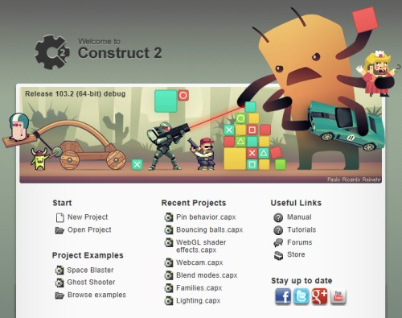
This gives you a useful starting point whenever you launch Construct 2. It has some useful links such as Create a new project, Newest tutorials on the website, your recently opened projects, links to our Facebook, Twitter and Google+ pages, and so on.
Beginner's tutorial
If you're new, you might want to check out the link to the Beginner's Guide to Construct 2 tutorial ⇗. This is a step-by-step guide to help get you going making your first game in Construct 2.
Examples
If you like examining existing projects to see how Construct 2 works, you can try opening the Space Blaster or Ghost Shooter demos. These are advanced examples so don't be put off by the math or complexity of them. They're mainly to show off what Construct 2 can do in the hands of an experienced user.
There are many much simpler examples in Construct 2's Examples directory. Click Browse all examples to see them. There are over 40 which go through things like making a simple platformer and physics demos. It's highly recommended to look at all the examples. Commonly asked questions like "How do I set up custom controls?" have examples showing how it's done in the Examples folder.
Settings
You can change the Show start page on startup and Close the start page when I click on something settings in the Preferences dialog.
2.2 The interface
The following diagram highlights the important parts of the Construct 2 user interface. An overview of each part is provided below, and later the manual goes in to each section in more detail. ⇗1: File menu and Ribbon tabs
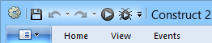
Construct 2 uses a ribbon interface, which is like a tabbed toolbar similar to Office 2007 and newer. The blue button with the drop-down arrow is the File menu, and to the right of that are ribbon tabs which drop down the ribbon bar with various buttons and options.
There's also the quick-access toolbar with the four most commonly used commands: Save, Undo, Redo, Preview and Debug. You can add and remove buttons to this toolbar yourself: click the small drop-down arrow to its right to customise it. If you want to have a lot of commands in this toolbar you can also opt to have it shown beneath the ribbon.
2: The Layout view
This is a visual editor where you place objects to design levels, menu screens and so on. See The Layout View.
3: View tabs
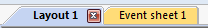
These tabs allow you to switch between different layout views and event sheet views, to define the event-based logic of the game.
You can click and drag a tab in to one of the views to set up a side-by-side split screen view.
4: The Properties Bar
In this bar you will see a list of properties depending on what you have clicked on. You can view and change properties for things like layouts, objects, layers and more. See The Properties Bar.
5: Project Bar and Layers Bar
By default the Project Bar and Layers Bar are tabbed here. The Project Bar contains an overview of everything in your project. The Layers Bar can be used to add different layers to a layout.
6: Project Bar/Layers Bar tabs
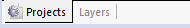
These allow you to switch between the Project Bar and Layers Bar.
7: Object Bar
This contains a list of objects in your game. You can drag and drop objects from here to place them in layouts. The right-click menu has many options to filter or display the objects differently. See The Object Bar.
8: Status Bar
At the bottom of the editor window is the Status Bar. This shows:
- what Construct 2 is currently doing during a long-running task, like exporting or saving the project
- how many events are in the project and its approximate filesize
- the current active layer, which is the layer new objects are placed on to
- the mouse position in layout co-ordinates
- the current zoom level.
9: Top-right buttons
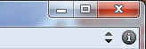
As well as the usual Windows minimise, maximise and close buttons, there's also the Pin Ribbon button to force the ribbon to always be showing, and the About button to open the About dialog with information and credits for Construct 2.
Customising
You can customise the interface to suit your tastes. Any of the bars can be dragged and dropped to different positions in the editor window. Also, you can auto-hide bars to save room: click the pin icon on a bar and it will shrink to a simple tab. Hover the tab to pop open the bar.
Bars can be hidden and shown in the View ribbon tab.
You can create a split-screen view by clicking and dragging one of the layout or event sheet tabs in to the main view. This can be useful on large monitors.
2.3 Project structure
Construct 2 projects consist of the following elements. These can be accessed via the Project Bar, which contains a tree of all the elements in the project. Items in the Project Bar can also be organised in to subfolders (licensed version only) which is very useful for medium to large projects. For more information, see the manual section on Project Primitives.Layouts
Levels, menus, title screens and other pre-arranged layouts of objects. In other tools Layouts may be referred to as scenes, rooms, frames or stages. See the section on Layouts for more information.
Layouts also consist of multiple Layers, which can be used to arrange objects in to background and foreground layers. These are managed with the Layers bar.
Event Sheets
A list of Events defining the game logic. In Construct 2, Events are the alternative to programming or scripting. Layouts have an associated Event Sheet for their logic. Event sheets can be re-used between different layouts with event sheet includes. Event sheets are edited in the Event Sheet View.
For more information on events, see the manual section on Events, especially the page on How events work.
Object Types
An Object Type defines a 'class' of object. For example, TrollEnemy and OgreEnemy could be different object types. Multiple instances of an object type can be created. For example there could be three instances of the TrollEnemy object type, and five instances of the OgreEnemy object type.
It is important to be clear on the difference between object types and instances: they will be referred to as different things throughout the manual. For more information, see the manual entries for Plugins, Object Types and Instances.
Object Types can also be grouped in to Families.
System object
The System object represents built-in functionality in Construct 2. It is the only object an empty project contains. It cannot be added again or removed from a project. There are no instances of the System object: it is simply always present and provides access to the built-in aspects of Construct 2's game engine. Its conditions, actions and expressions are documented in the System reference.
Sounds and Music
These are audio files used for sound effects and music in the game. Sounds should be used for short-duration sound effects that are played when events like collisions and explosions happen. Music should be used for the longer musical tracks. It is important to organise audio files appropriately, because Sounds are downloaded completely before playing, but Music is streamed. This means if a Music track is accidentally put in the Sounds folder, it would have to download completely (which could take a couple of minutes) before it started playing. However, audio in the Music folder can start playing immediately since it is streamed from the server.
Both sound and music must be available in both the Ogg Vorbis (.ogg) and MPEG-4 AAC (.m4a) formats. This is because browser makers cannot agree on one audio format for the web, so all audio must be in two formats to support all browsers! Internet Explorer and Safari use the .m4a files, and all other browsers (Firefox, Chrome and Opera) use the .ogg files. Construct 2 helps convert audio to both formats when audio files are imported. See the Import Audio dialog and Sounds & Music for more information.
Project Files
Any other external file can be imported to the project. For more information, see Project Files.
Common units
In Construct 2, sometimes you need to enter values such as angles, speeds or sizes. For consistency these always use the same units in Construct 2, except where noted by descriptions or tips shown in the editor. The common units are described below.
Positions are in pixels. The origin (0,0) is at the top-left of the layout, and the Y axis increments downwards (as is often the case with game engines).
Sizes are in pixels
Angles are in degrees. 0 degrees faces right and increments clockwise.
Times are in seconds
Speeds are in pixels per second
Accelerations are in pixels per second per second
Zero-based indexing
To be consistent with programming languages, all features of Construct 2 using a number of an item in a list (indices) start from 0 instead of 1. This might seem odd at first and take some getting used to, but in many cases it is actually much more convenient than 1-based indexing.
Traditionally lists are numbered 1, 2, 3... but in Construct 2 (and all other programming languages) they are numbered 0, 1, 2....
2.4 Saving, sharing and collaborating
Saving and sharing work
There are two types of project your work can be saved to. These do not affect the functionality of the game at all, but have different advantages and disadvantages during editing. One of the types must be chosen when creating a new project.
Folder projects
Projects can be saved to a folder. This stores different parts of the project in different files. For example, each layout is saved to a separate file in a Layouts subfolder.
Folder projects save and load quickly. This makes them more suitable for medium or large projects.
Folder projects are good for collaborating within a team, since it is easy for different people to work on the different project files and later merge them. See the section on collaboration below for more information.
The main project file in a folder project has the extension .caproj. Note this does not contain the entire project: it is simply a list of other files used in the project. If you want to share a project, the .caproj file is useless on its own - save to a single-file project (.capx) instead.
Single-file projects (.capx files)
Projects saved to a single file are often more convenient for small projects. There is only one file to send, upload or share. However, they save and load more slowly due to Construct 2 having to pack and unpack the project from one file. They also make collaboration more difficult than if the project is saved as a folder.
.capx files are simply a ZIP of a project folder. You can rename a .capx file to .zip and see the project files.
Converting between types
It's easy to convert a single-file project to a folder project and vice versa inside Construct 2. Simply open a project and choose File - Save As Project... to save it to a folder project, or File - Save As Single File... to save it to a single-file project.
Since .capx files are a ZIP of the project folder, they can also be converted to a folder project by renaming them to .zip and extracting the folder project contained within. Similarly a folder project can be converted to a .capx file by compressing it to a .zip file and changing the file extension to .capx.
Collaborating on projects
Construct 2 does not contain any of its own collaboration features, since there are already good free professional-grade tools available which can work with Construct 2 projects. Save your project as a folder, and then you can use source control software to manage contributions to the project. Since project data files are XML-based, they already work with merging and diff tools. For a tutorial on setting up a source control system with a Construct 2 project on Windows with SVN, see How to collaborate on projects with SVN ⇗.
2.5 Testing and publishing
Testing your game
To test your game during development you can preview it by clicking the "play" icon in the quick access toolbar or ribbon, pressing F5, or by right-clicking a layout in the Project Bar and selecting Preview. This uses a local server to preview your game on. You can change the browser that you preview with using the Preview browser setting in Project Properties.
If you have mobiles, tablets or other laptops/PCs you want to test on, previewing over your local network (e.g. Wifi) can make testing considerably easier. For more information, see the tutorial How to preview on a local network ⇗. Preview-over-Wifi is also supported with the CocoonJS Launcher for quick testing in CocoonJS.
You can also hold shift and preview to do a continuous preview. This saves the game, updates it, then loads the previous state again. For more information, see the tutorial How to use continuous preview ⇗.
The debugger can also be used to test your game with additional information and tools available. Further, breakpoints can be set in events to investigate how they are working.
You must export then publish (i.e. upload) the project before anyone else can play it. You cannot share the URL during preview over the internet.
Exporting
To export your project, use the File menu, ribbon or Project Bar to open the Export Project dialog. Construct 2 supports many platforms; for more information see the Supported platforms section.
Note exported projects, including the HTML5 export, cannot usually be run from disk. Your project must be uploaded to the web (for HTML5 export) or otherwise published before it will work.
If you are interested in the technical details of exported projects, see the Technology section.
Construct 2 does a lot of work at export-time to optimise your project. For more information, see the tutorial Construct 2's export-time optimisations ⇗.
For more advice about how to successfully publish a game to the web, see the tutorial Tips on publishing HTML5 games to the web ⇗.
2.6 Supported platforms
Construct 2 is based on cross-platform HTML5 technology, giving you the opportunity to publish your projects to a broad array of platforms. The supported platforms are described below with notes on the specifics of each platform.Remember that it is a best practice to test regularly on all your intended platforms from the very start of your project - especially mobile ones, since mobile devices are often considerably weaker than the desktop machine you're likely to be developing on. Despite the fact HTML5 is a standard that ought to function identically everywhere, in practice there are differences, especially regarding performance, available memory, text rendering, feature support (e.g. WebGL or advanced audio effects), platform-specific features (e.g. Construct 2's platform-specific plugins), input methods, screen sizes, and although less likely these days, browser-specific quirks.
Web (HTML5) for desktop browsers
Modern desktop browsers have mature and high-performance support for Construct 2 games. Google Chrome ⇗, Mozilla Firefox ⇗ and Internet Explorer ⇗ 9+ (11+ recommended for WebGL support), Apple Safari ⇗ 6.0+ for Mac, and Opera ⇗ 15+ (which is now based on Google Chrome) all have excellent support.
Note Internet Explorer 8 and earlier are not supported, but their usage share is declining and should be negligible in future.
For advice about publishing to the web, see the tutorial Tips on publishing HTML5 games to the web ⇗.
Web (HTML5) for mobile browsers
The latest mobile browsers have good support for Construct 2 games, but sometimes are trailing the performance and features of their desktop equivalents. Construct 2 games should run well on Safari for iOS 6+, Google Chrome for Android ⇗, Firefox for Android ⇗, Windows 8 and Windows Phone 8 devices, Blackberry 10+, and Firefox OS.
Note the Android 'Internet' browser (the default browser on Android before it was replaced with Chrome) has poor performance and features and is not suitable for running Construct 2 games. On Android devices it is strongly recommended to use Chrome or Firefox for Android instead. Chrome is now the default browser on new Android devices, so over time the Android 'Internet' browser should decline to negligible usage.
Native desktop apps
Construct 2 allows exporting projects with a technology called node-webkit. This is effectively the Google Chrome desktop browser packaged up to stand alone with your project. Therefore its performance and features match those of the Google Chrome desktop browser, which is a mature and high-quality browser with excellent performance. Construct 2 can export to Windows, Mac OS X, and both 32-bit and 64-bit Linux with node-webkit.
When previewing or exporting with node-webkit, it's possible to also take advantage of special desktop app features like reading and writing files to disk. This can be achieved with the Node-Webkit plugin in Construct 2.
Other desktop apps
Construct 2 games can be published to the Chrome Web Store ⇗, where they can also be run from the desktop ⇗.
Firefox Marketplace ⇗ provides similar capabilities to the Chrome Web Store, but using Firefox instead. It also covers the Firefox OS mobile platform as well.
Construct 2 can also directly export Windows 8 apps ⇗, which run from the new tile-style Start screen. This also supports Windows RT devices, and touchscreen tablets. Windows 8 specific features like Snap view and in-app purchases can be accessed with Construct 2's Windows 8 plugin.
Native mobile apps
Construct 2 can export for PhoneGap Build ⇗ which is a convenient way to wrap your HTML5 games as native apps for several phone platforms. However due to the particular way it works, apps built for iOS and Android tend to have poor performance.
To export iOS and Android native apps with significantly better performance, Construct 2 supports wrapper services like CocoonJS ⇗. These use different technologies to PhoneGap which are considerably faster. Like PhoneGap Build, CocoonJS can also publish to a variety of other platforms for you. Construct 2 has a built-in CocoonJS plugin that can also access features like ads and in-app purchases. Note that CocoonJS is owned by Ludei, which is a separate company to Scirra. For more information see How to export to CocoonJS ⇗.
Construct 2 can also directly export for a number of other mobile app stores, all of which have good quality browsers so games should work well. These include Blackberry 10 ⇗, Windows Phone 8 ⇗, Firefox OS ⇗, and Tizen.
Other
Construct 2 can also publish Facebook games ⇗, accessing Facebook features with Construct 2's Facebook plugin.
It's also possible to publish to Scirra's own Arcade ⇗, where you can use Construct 2's Scirra Arcade plugin to access features like hi-scores.
2.7 Technology
Construct 2 makes HTML5 games. These run online in a web browser on a wide variety of different devices and operating systems, including on mobile devices like phones and tablets, ensuring your game is accessible to as many people as possible. This section is a summary of the technology involved. It is probably of more interest to technically-minded people and can be skipped if you are more interested in the details of how to use Construct 2.
Despite the fact that Construct 2 games can be ported to a variety of different platforms even as "native" apps, the underlying technology is still a HTML5-based engine.
Web Browsers
A browser is the program that loads and displays web pages on your computer. Popular web browsers include:
- Internet Explorer ⇗ (only version 9 or newer works with HTML5)
- Mozilla Firefox ⇗
- Google Chrome ⇗
- Opera ⇗
Macs also commonly use Safari ⇗. Some of these browsers are also available for mobiles and tablets.
HTML5
HTML ⇗ stands for HyperText Markup Language. HTML is the standard way web pages have been made since the beginning of the internet. HTML5 ⇗ is the fifth major revision of the HTML standard, and it started to gain widespread adoption in 2011. It introduces many new features, but only a small number apply to games. However, "HTML5" is still the most appropriate way to describe the technology used for Construct 2's games. Javascript is the standard programming language used to program web pages, and this is also used to power Construct 2 games.
Of particular interest in HTML5 is the newly introduced <canvas> tag. This creates a rectangular surface in a HTML web page where any images or content can be drawn. This makes it ideal for games. All Construct 2 games use the HTML5 canvas to display the game.
HTML5 is comparable to Adobe's Flash technology which dominated the internet for gaming prior to 2011. HTML5 differs in being an industry-agreed standard, rather than a product controlled by a single company like Adobe. Flash also runs as a browser plugin, which must be separately downloaded and installed, whereas HTML5 is built in to the browser. This also means HTML5 games can run on devices where there is no Flash support, such as iPhones and iPads. Given its advantages, HTML5 will eventually replace Flash on the web.
Javascript
Javascript ⇗ is the standard programming language for the web. It allows web pages to become interactive and in many ways work like traditional applications. It is also an industry-agreed standard.
Javascript is not Java. These are two unrelated programming languages which simply happen to have a similar name. Java applets are another technology which can run in a web page, but it is a totally different technology to Javascript. Try not to get confused between the two: games made in Construct 2 do not need or use Java to run.
Modern browsers compile javascript to native machine code (or CPU instructions). This ensures that web pages (including games) using javascript run as quickly and efficiently as possible.
Javascript is a garbage-collected language, which makes games vulnerable to pauses or stuttering due to garbage collection. Construct 2's game engine is optimised to create the minimum garbage possible, recycling objects wherever possible. Even entire object instances are recycled if an object is destroyed and later re-created. This helps improve performance and ensure the game runs as smoothly as possible.
Plugin and Behavior SDK
Javascript programmers can extend Construct 2 with their own plugins and behaviors. See the Javascript SDK documentation for more information.
Canvas renderers
The HTML5 <canvas> tag supports two different ways to draw the game to the web page: a simple 2D context, and the WebGL context, based on OpenGL. WebGL is about twice as fast as the 2D context and has more features, including supporting effects, but is not supported on all platforms. Most browsers have some support for WebGL, but it is not always enabled everywhere by default. Construct 2 supports both technologies for rendering the game. WebGL can be enabled or disabled for each game in Project Properties. Generally it is advisable to have it enabled, since the game will probably run a lot faster in WebGL mode, and effects cannot work without it. If WebGL is not supported by a user's computer or device, or it is disabled, Construct 2 will fall back to the 2D context instead. In this case the game can continue to be played, but it might run a bit slower and not look as good.
Since Internet Explorer does not support WebGL, if you're using it you may want to switch to a different browser which does support it like Firefox or Chrome. You may also wish to advise the people who play your game to do the same.
WebGL may not be supported on a computer even if it is enabled. In this case the 2D context will be used instead. You can check which renderer is in use in the game itself with the system expression renderer, which returns either "canvas2d" or "webgl".
Obfuscation and minification
The javascript code to your game is minified and obfuscated with Google's Closure Compiler ⇗. This reduces the download size and makes it extremely difficult for anybody to reverse engineer your game.
The game images are compressed in PNG format. They are also further compressed when exporting to ensure the download is as small as possible. For more information, see this blog post on Image compression in Construct 2 ⇗.
Audio
Construct 2's game engine supports the Web Audio API in Google Chrome for reliable low-latency playback of sound effects. In other browsers the standard HTML5 <audio> tag is used instead.
Offline support
Despite the fact HTML5 games run in a web browser, Construct 2 games use the HTML5 AppCache to allow them to run offline as well. This is very useful for iOS web apps and Chrome Web Store apps, since some users may be offline when running the game. Also, the AppCache helps save bandwidth on servers which host the games: the game files will only ever be downloaded once, and every visit after that the game will be loaded locally from disk (while checking for an update in the background). See the tutorial on offline support in Construct 2 ⇗ for more information. The most important point is your server must be set up to serve .appcache files with the MIME type text/cache-manifest else the offline support will not work and will cause you to waste a lot of bandwidth.
2.8 Best practices
Back up regularly!
Neither the hardware nor software in your computer is perfect. Computers fail and software can crash. Back up your projects to protect yourself from losing work. It is essential to also maintain off-site backups. If all your backups are in the same computer or saved to disks all in the same building, catastrophic events like fire, floods, theft or simultaneous hardware failure can cause you to lose all your work and backups together.
Construct 2 has built-in features to easily make automatic backups, including off-site backups using Dropbox. For more information see the tutorial Keep your work safe with Construct 2's backup options ⇗.
This advice is not specific to Construct 2. It is vital to adopt this practice for any work on a computer which is important to you. Do not wait until you've lost work before starting to do this. People lose work regularly from having poor backup practices. Don't be one of them!
Test on multiple browsers and devices
It is highly recommended to test your game works as intended in a range of different browsers. While HTML5 is a standard which in theory is implemented the same by all browsers, in practice there are variations between browsers (e.g. in performance, features, text rendering, etc). You should install a range of browsers and test with them all to ensure your game will work well for everyone. Use the Preview browser property to test desktop browsers and preview on a local network ⇗ to easily test mobile browsers.
Support touchscreen devices
Many users now browse the web with touchscreen devices with no mouse or keyboard. If at all possible, you should design your game to also support touchscreen devices, perhaps with on-screen touch controls. For more information, see the tutorial on touch controls ⇗.
Recommended file formats
You may wish to prepare artwork and audio in other software before importing to Construct 2. The best formats to use are:
32-bit PNG (Portable Network Graphics) for images. Be sure to select 32-bit if you are given a choice; the 8-bit or lower versions will degrade quality. 32-bit PNGs are lossless and fully support alpha-channel transparency. Note the default Windows Paint does not support PNG transparency. Use a different editor instead, like Paint.NET ⇗.
You can choose different export formats like JPEG inside Construct 2 to reduce the size of your finished project. However when importing you should still stick to 32-bit PNGs if possible, and leave Construct 2 to recompress them when exporting. For more information see the blog post Image compression in Construct 2 ⇗.
16-bit PCM WAV for audio. These are typically .wav files, but note that not all .wav files are 16-bit PCM. Providing you are on Windows 7 or newer, importing a 16-bit PCM .wav file to Construct 2 will automatically encode it to both AAC and Ogg Vorbis. These are the two formats necessary to support audio in all browsers. For more information see the manual entry on the Import Audio dialog.
Security
Never, ever enter usernames or passwords in to events. These will be visible in plain text in the exported Javascript, and malicious users will very quickly be able to take control of the account. If you need to connect to something like a database, write a server-side script that talks to the database, then connect to the URL of the server.
Performance
There are a number of best practices in regards to game performance (ensuring the game always runs fast). Perhaps the most important is when developing for mobile, test on the target mobile device from the start. Your computer could be 10 or 20 times faster than your mobile device, and something which runs fast on your computer may be unplayably slow on the mobile device. For more information see the section on Performance Tips.
Memory use
Some designers are tempted to design entire levels from lots of large image tiles. This method should be avoided at all costs since it is extremely wasteful with memory, and is not used by any professional game designers. The subject is discussed in detail in the blog post Remember not to waste your memory ⇗.
Effects
Remember effects require WebGL to display, which is not always supported. Be sure to set up appropriate fallbacks and test your project with WebGL disabled to ensure it will appear correctly for users whose systems do not support it.
Managing projects
If you are working in a team, you will probably find source-control software like SVN very useful for managing a folder-based project. It can merge changes and highlight the changes each person has made. There is also a history of all changes available and rollbacks can be made at any time. Construct 2 saves project data in XML format so it is well suited to this type of management.
Working as an individual
If you are working on a project by yourself, it is probably easiest to use single-file projects (.capx files). If the project gets large over time, you may notice Construct 2 spends more time saving and loading projects with Decompressing CAPX... or Compressing CAPX... in the status bar. At this point it is probably useful to convert to a folder project which skips these steps and will make saving and loading faster.
2.9 Performance Tips
Mobile
Modern desktop computers are very powerful. Generally the main problem with performance is getting your game to run well on mobiles and tablets. It's more difficult to get good performance on these devices for a number of reasons:
- They have weaker hardware: slower CPUs, slower graphics chips, and less memory.
- They run Javascript slower than desktop computers.
- Some devices only use software rendering, making them very slow at drawing graphics.
You must test on mobile from the start. Your computer may be well over ten times faster than your mobile device. To avoid surprises test regularly on the intended device to make sure it is still running fast enough. The Preview on LAN ⇗ feature can make this quick and easy. You should aim to design simpler games to match the lower power of mobile devices, and have lower expectations of framerate (30 FPS is a good target for mobile).
The following three tips can help you achieve best performance for mobile devices:
- Avoid using too many objects or particle effects, since mobile devices have lower limits to what desktop computers can handle.
- Place objects using the same blend modes or effects on the same layer. For example, if you have a lot of objects using the Additive blend mode (commonly used for explosions, lasers and other effects), make sure all those objects are placed on their own layer. Also make sure they are created on that layer if the objects are spawned or created at runtime. Switching between effects can reduce performance, and doing this will ensures all objects using the same effect are drawn at the same time.
- Avoid objects with large areas of transparency. Transparent pixels still take up rendering time, even though they do not visually appear. Crop all images you use. Splitting up large objects with large transparent areas in to a series of smaller objects can also increase the rendering performance and save memory. For example, adding a window border using a screen-sized transparent sprite with borders drawn at the edges will exhibit worst-case performance; splitting it in to four separate objects for each edge will be significantly more efficient.
Mobile performance also improves with time. If you still have performance problems now, future devices or software updates will be better.
Common causes of poor performance
Some of the most common things causing slowdowns are listed below. This list is not exhaustive. There may be other reasons your game is running slowly not listed here.
Too many objects using Physics
The Physics behavior is very CPU intensive. Using too many objects with the Physics behavior can cause considerable slowdown. You should design your games to use a few large Physics objects rather than many small Physics objects.
Creating too many objects
While modern computers are very fast, they still have a limited processing capacity. Creating over 1000 objects will probably cause your game to slow down. Try to design your game to use fewer objects. The system expression objectcount can tell you how many objects you are using.
Checking for too many collisions
Testing for collisions or overlaps between two object types, each with 100 instances, will require 10,000 collision checks. If this is done every tick at 60 frames per second it will be processing 600,000 collision checks per second, which is very demanding on the processor. Try to only check for collisions when absolutely necessary, or on a timer (e.g. once a second), or just use fewer objects.
Using too many effects
Effects are visually impressive, but can slow down the game's performance considerably if over-used, especially on mobile. Using an effect on objects with many instances is especially slow - often it is much more efficient to place all the objects with the effect on their own layer, then apply the effect to that layer instead. This allows the effect to process everything in one go, rather than having to inefficiently re-run the effect for a small object over and over again.
Unnecessary use of effects
Never use effects to process a static effect on an object. For example, do not use the 'Grayscale' effect to make an object always appear grayscale. This will degrade performance when you could simply import a grayscale image to the object and not use any effects at all.
Using too many particles
The Particles object can easily create hundreds of particles. Each particle is like a sprite, so it can rapidly use up available processing power. Avoid using more than a couple of hundred particles on desktop. It is recommended to avoid using particles at all on mobile if possible; if you still use them, use as few as possible with the lowest rates you can get away with. Use the ParticleCount expression to help count how many particles you have created.
Using Sprites instead of Tiled Backgrounds
Creating too many objects can cause slowdowns, and a common mistake is to use grids of Sprite objects instead of Tiled Background objects. For example, a 20x20 grid of sprites has 400 objects, which is a significant impact on the object count. A single tiled background can replace the grid of sprites and it only counts as a single object. Tiled backgrounds are specially optimised for repeating their texture so in this case it is literally 400 times more efficient than the grid of sprites. Always use Tiled Backgrounds instead of repeating Sprites wherever possible.
Using a slow browser
Browsers do not all perform the same. You may find a better performing browser by testing across a range of browsers.
No hardware acceleration
Usually even the slower Canvas 2D renderer is still hardware accelerated by the computer's graphics card. However, sometimes even the Canvas 2D is not hardware accelerated and uses a very slow software renderer. There is no easy way to tell this, but it is usually indicated by significantly worse performance on one system. Test on several computers to see if poor performance is a one-off, and make sure the graphics card drivers are up-to-date ⇗.
Using too many loops
This is rarer, but using too many loops like For, For Each and Repeat can cause the game to slow down. Nested loops are especially likely to cause this. To test if this is the problem, try temporarily disabling the looping events.
Common misconceptions
The following things are often accused of affecting performance (as in, the framerate at runtime), but probably have little or no effect:
Off-screen objects are not still rendered. Construct 2 does not issue draw calls for objects that do not appear in the window, and the GPU is also smart enough to know not to render any content that appears outside the window - even when a single image is only partially on-screen.
Image formats (e.g. JPEG, PNG-8, PNG-32) affect the download size but have no effect on runtime performance (they are all decompressed to 32-bit bitmap on startup).
Audio formats also only affect the download size but have no effect on runtime performance.
Number of layers usually has no effect, unless most of the layers have changed their opacity, have effects applied, have a blend mode other than 'Normal', or use 'force own texture'. However typically there is no performance impact from using multiple layers with default settings.
Number of layouts also is unlikely to have any effect other than the download size. The layout size also does not have any direct effect; larger layouts do not use more memory or require more processing, unless you use more objects.
Angle or opacity of sprites/tiled backgrounds and floating-point positions (e.g. positioning a sprite at X = 10.5) generally has no effect, since modern graphics chips are very good at handling this, even on mobiles. Very large sprites can still slow down mobile devices, but on desktop they can often still be rendered just as fast as smaller sprites.
WebGL
WebGL helps games run faster on desktop computers. WebGL is about twice as fast as the Canvas 2D renderer, so for best performance you should make sure it is enabled in project properties. However, WebGL is not always supported, so enabling it does not guarantee that the game is rendering with WebGL. Use the renderer system expression to determine which renderer is in use.
There are several reasons WebGL may not be supported. These are listed below:
- The browser may not support WebGL. For example, Internet Explorer currently does not support WebGL. It will always use the slower Canvas 2D renderer. To improve performance, try switching to a browser which supports WebGL, like Firefox or Chrome.
- Your graphics card driver may be out of date. To guarantee a stable browsing experience, browsers sometimes disable WebGL if the graphics card driver is known to be buggy. Updating your graphics card driver ⇗ may fix this problem.
- Your computer may simply be too old or have unsupported hardware. Very old graphics hardware may not be able to support WebGL at all. If possible, upgrading your graphics card to a new one may fix this problem. However, don't forget your game is probably still playable with the Canvas 2D renderer - it will just be slower.
More advice
For more information and advice on performance, see the blog post Optimisation: don't waste your time ⇗.
Measure and test
From the start of your project you should use a framerate indicator and keep an eye on performance. This allows you to notice if a particular change you have made has seriously affected performance.
Test your project on as many systems and browsers as possible.
If you think something is causing performance problems in your project, it is usually easy to test the theory: back up your project, delete the thing in question, and see if the framerate has improved. If it improves, the thing you deleted was the cause; if not, it must be something else.
Always measure performance. Computer systems are highly complex, and there are many unexpected or counter-intuitive results in performance. The only way to know what effect something has on performance is to measure it. If you cannot measure a difference, it probably has no serious effect on performance.
How to measure performance
There are two system expressions that are important for determining performance:
fps - returns the current frames per second rate. Usually the top speed is 60 frames per second, but it can change depending on the system.
renderer - returns either canvas2d or webgl depending on the renderer in use. The WebGL renderer is about twice as fast as Canvas2D, but only runs on desktop and isn't always supported. For more information see the Technology section.
You can display both of these in a Text object to keep an eye on performance while testing your game, using an action like:
Set text to fps & " FPS (" & renderer & ")"
This will display a string like 60 FPS (webgl) indicating both the framerate and renderer.
3. Interface
This section covers the Construct 2 user interface. For an at-a-glance summary, be sure to see the Interface Overview from the previous section.
3.1 File menu
Construct 2's File menu is accessed by clicking the blue button in the top left of the ribbon.
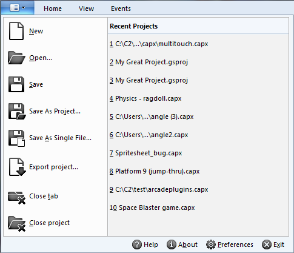
Recently opened projects are listed on the right hand side of the drop-down menu.
- New Opens the Start dialog.
- Open Open an existing project from disk.
- Save Save the current project to disk.
- Save As Project and Save As Single File Save to a different folder or file. See Saving and sharing projects.
- Export project Export to a HTML5 game ready for distribution. See Exporting and Publishing.
- Close Tab Close the currently open tab. Tabs can also be closed by middle-clicking them.
- Close Project Close the currently open project, prompting to save changes if any.
Along the bottom are four additional buttons:
- Help Opens this manual.
- About Open the About dialog with information about your computer, the Construct 2 version, and so on.
- Preferences Open the Preferences dialog with settings for the Construct 2 editor.
- Exit Close Construct 2.
3.2 Ribbon
The Ribbon is the name given to the tabbed toolbar at the top of the editor window, similar to the design used in Office 2007 and newer.By default the ribbon is hidden until you click one of the ribbon tabs. You can toggle permanently showing the ribbon by clicking the Pin/toggle ribbon button in the top right.
Keyboard shortcuts can be identified either by hovering a button on the ribbon, or pressing Alt which will show keyboard shortcuts on-screen.
The Home tab

The Home tab has the standard functions common to most software: Cut, Copy, Paste, Undo and Redo.
The Delete, Select All and Select None buttons affect the current selection in either the Event Sheet View or Layout View.
Configurations allow you to set up different versions of your project without having to save multiple projects to disk. Active configurations sets which configurations are currently being edited. Since only one configuration can be displayed in the editor at a time, this is chosen with the Display configuration, which must also be an active configuration.
The Online section contains some web links you may find useful.
The Preview section has buttons to preview or debug the project and export a game ready for publishing.
The Go section allows you to bring up the Start page if you closed it.
The View tab
⇗The Bars section allows you to show or hide the various user interface bars in the Construct 2 editor by clicking the checkboxes. See the Interface section for more information about each bar.
The Zoom section can be used to zoom both the Layout View and Event Sheet View.
The Grid options and Grid size sections only apply to the Layout View. By enabling Snap to Grid, moving and placing objects will snap them to an invisible grid with the given cell sizes. The grid can optionally also be shown in the Layout View.
The Theme allows you to choose different visual styles for the Construct 2 user interface. This is purely cosmetic and does not affect any functionality of the editor.
The Display section also only affects the Layout View. Show collision polys will render outlines of each object's collision polygon in the Layout View itself if enabled. The color of the collision polygon lines can be changed in Preferences. The Translucent inactive layers mode will show all layers apart from the active one (selected in the Layers Bar) at 33% opacity. The translucent layers are also locked so objects on them cannot be selected. This can be a convenient mode for editing individual layers.
The Events tab
⇗The Events tab only applies to the Event Sheet View. If a Layout view is open all its buttons will be disabled.
The Add buttons in the Events section provide quick ways to add a new event, condition, action, sub-event, event group, global or local variable, event include or comment. If you have something in the event sheet selected, the new item will be added next to the selection.
Disable allows you to toggle conditions, actions or entire events on and off. A disabled event appears crossed out, and is effectively deleted - it will not run or affect the game in any way. However, you can bring it back at any time by clicking Disable again. This can be useful for testing.
The Bookmarks section allows you to toggle bookmarks on the selected event, and navigate to the next and previous bookmarks in the project. These can also be viewed with the Bookmarks Bar.
The Breakpoints section allows you to toggle breakpoints on events, conditions and actions, or remove all breakpoints from the project.
The Search section allows you to filter all the events in the current event sheet by a phrase. If an event contains the search text anywhere inside it, the event remains in the view, otherwise it is removed. This can be very useful to locate events related to a particular object, or to find something in a long event sheet. The Clear Search button (or pressing Escape) shows all events again.
The Show 'Add action' links can be used to hide or show the Add action link in every event. These provide a quick way to add new actions. However, they can significantly increase the vertical height of the event sheet making it a little harder to read or find events. If you want to review an event sheet you might find it useful to turn these links off. Actions can still be added to events even when the links are hidden by the Add action button in the ribbon or right-click menu.
3.3 Project Bar
The Project Bar shows an overview of everything in your project. See Project Structure for a summary of the different elements that make up a project, or the manual section on Project Primitives for more detail.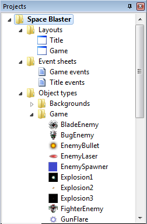
The project name appears with an asterisk by it (e.g. Space Blaster*) if it has unsaved changes.
Organising projects
The Project Bar can be used to arrange your project in to subfolders (licensed edition only). Subfolders can be added by right-clicking a folder and selecting Add subfolder. Then, you can drag and drop folders and items to organise them in to folders.
Managing the project
Right-click any item in the Project Bar to show a list of options. Most items can be renamed and deleted. Right-clicking a folder also has the option to add a new item to that folder, such as a new layout or event sheet. Objects are more commonly added in the Layout View, but you can still add them from the Project Bar too.
Right-click the name of the project at the top to close, export or open the project's folder in Windows Explorer.
Deleting objects
Deleting from the Layout View will not remove an object from the project completely. The only way to fully remove an entire object type from the project is to delete it from the Project Bar.
Importing audio
Right-click either the Sound or Music folders and select Import to open the Import Audio dialog. This allows you to pick audio files from your computer and import them to the project. Construct 2 will convert them to the necessary formats to support all browsers. To play back audio, make sure you add the Audio object to the project.
Importing files
You can import additional external files to the project. For more information, see Project Files.
3.4 Properties Bar
The Properties Bar is a vital part of the interface. It displays a list of all the settings you can change on whatever is selected. In the picture below, a layout is selected, so the layout's properties are showing.
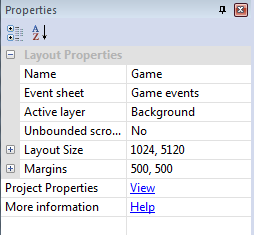
There are too many properties in Construct 2 to list here. Instead, properties for different parts of the project are documented in the relevant manual section. For example, layout properties are defined in the Layout section.
Properties are organised in to categories which can be expanded and collapsed with the + button. There are many kinds of properties, including number fields, text fields, dropdown lists and clickable links. The property name appears in the left column, and the editable value appears in the right column.
Whenever something in the project is clicked or selected, its properties display in the Properties Bar. For example, selecting objects in the Layout View or clicking items in the Project Bar shows the relevant properties in the Properties Bar.
Things with properties
The following project elements have properties:
Many behaviors have their own properties - see the Behavior reference
Many plugins have their own properties - see the Plugin reference
Many objects also support effects and have properties for them as well.
See the relevant manual sections for documentation on the properties that are shown. There is also a Help link displayed at the bottom of the properties that will take you to a relevant manual section.
Property descriptions
All properties also have a description which provide additional information about what the property is used for. This is displayed in a panel at the bottom of the Properties Bar. It is worth keeping an eye on this since it can contain useful hints and tips. An example is shown below.
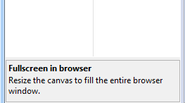
3.5 Object Bar
The Object Bar is most useful in the Layout View. It displays a filtered list of objects with large icons. Objects can be dragged and dropped in to the layout to place them. This makes the Object Bar useful for showing just the objects you're interested in placing, which is sometimes quicker than using the Project Bar (which lists everything in the project).
See also the manual section on Objects
The Object Bar also provides another way to access object's properties. Selecting an icon in the Object Bar shows the object's properties in the Properties Bar. If a Layout View is currently open, it will also select every instance of that object type in the layout.
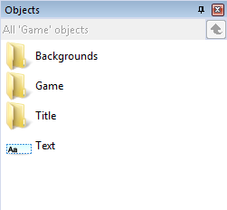
Browsing objects
By default the Object Bar shows the project objects organised by folders. Double-click a folder to show that folder's contents. Click the green Up arrow to navigate back to the parent folder.
Selecting a folder in the Project Bar also displays that folder's contents in the Object Bar.
Objects can also be organised by dragging and dropping them to folders in the Object Bar, but you may find the Project Bar more convenient for this.
Display options
The text at the top of the title bar shows the current filter or folder if any. By default it shows just the objects on the current layout (e.g. All 'MyLayout' objects). This means it will not show objects only on different layouts, nor project objects like Mouse or Keyboard. These objects can be accessed via the Project Bar, and also dragged and dropped in to the layout from there. Alternatively, the filtering options can be set to display all project objects in the Object Bar (see below).
Right-click a space in the Object Bar to show its display options.
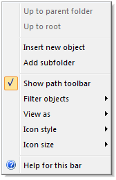
Up to parent folder
A shortcut for the green Up button at the top of the Object Bar.
Up to root
Return to the root (bottom-level) object folder, as if clicking Object types in the Project Bar.
Insert new object and Add subfolder
Shortcuts for the organisation functions in the Project Bar.
Show path toolbar
Show or hide the text and Up button at the top of the Object Bar.
Filter objects
Set to Current layout objects to only show objects which are in the current layout (the default), or All project objects to show all objects in the project (like the Project Bar).
View as
Set to Folder structure to display objects organised by their subfolders (the default), or Simple List to list all objects regardless of their folder (there are no subfolders in this view).
Icon style
Change how the icons are displayed in the Object Bar, including which direction the bar scrolls in if there are lots of objects. This can be useful if you dock the Object Bar somewhere else in the editor, e.g. along the top or bottom.
Icon size
Change the size of the icons. Smaller icons lets you fit more icons in the window, but larger icons makes it quicker to identify objects.
3.6 Layers Bar
The Layers Bar is used to add, edit and remove layers in a layout. A layer is like a sheet of glass objects are painted on to. This allows easy arrangement of which objects display in front of other objects, for example showing foreground objects in front of the background sprites. It also allows for interesting depth effects like parallax, and layers can be individually scaled and rotated as well.
Layers can be dragged and dropped in the Layers Bar to change their order. Layers at the bottom of the list are displayed at the back (e.g. background objects), and layers at the top of the list are displayed at the front (e.g. HUD objects).
Selecting a layer displays its properties in the Properties Bar and also sets it as the active layer which new objects are inserted in to. See the Active layer property in layout properties for more information.
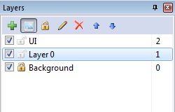
The Layers list
Each layer in the list has the following:
- A checkbox to toggle whether the layer is visible in the editor (this does not affect the game when previewing or exporting)
- A padlock icon. Clicking this toggles the layer's locked status. If a layer is locked, objects on that layer cannot be selected in the editor. This is useful to prevent accidental selections on rarely-used layers like backgrounds.
- A number to the right. This is a zero based index of the layer (the first layer is number 0, not 1). If you need to enter a layer number in the event system, this is the corresponding number. (You can also enter layer names in the event system which might be more convenient if you regularly reorder layers.)
The Layers Toolbar
The icons along the top provide shortcuts for editing layers. Layers can be added and there are alternative options for layer visibility and locking. There is also a Rename and Delete button (F2 and Delete on the keyboard respectively). Layers can also be renamed by single-clicking a selected layer, like renaming files in Windows Explorer. Finally, there are Move up and Move down buttons, which provide an alternative to dragging and dropping to reorder layers.
Object Z ordering
To modify the Z order (front-to-back order) of individual objects on a layer, use the Z Order Bar.
3.7 Z Order Bar
The Z Order Bar allows precise control over which objects appear in front of others. Although Construct 2 is a 2D engine, the term Z order is used to refer to the display order of each individual object.The Z Order Bar is not available in the Free edition of Construct 2.
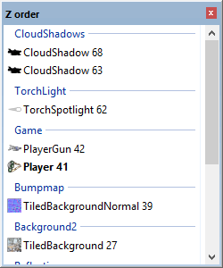
To open the Z Order Bar, either right click in the layout view and select Z order -> Edit Z order..., or tick the Z Order Bar checkbox in the View tab of the ribbon.
The Z Order list
If no objects are selected, the Z Order Bar displays all objects in the layout. Group markers appear identifying each layer from the Layers Bar. The Z Order increases upwards in the list, meaning objects at the bottom of the list are displayed at the back, and objects at the top of the list are displayed at the front.
If any objects are selected, the list is filtered down to only those objects and any other objects overlapping them. This makes it convenient to see the relative Z order of a small area without having to take in to account the rest of the layout.
Identifying instances
With lots of the same instances in the list, it can sometimes be difficult to tell precisely where a particular instance occurs in the list. To help identify each instance its UID appears after its name, e.g. Player 41 (meaning a Player instance with UID 41).
Instances in the list which are currently selected in the Layout View are also highlighted in bold.
Sprite objects which have a different initial image set by changing the Initial frame or Initial animation properties also display an icon for that initial image in the Z Order list.
Finally, instances can be double-clicked to make them flash briefly in the Layout View. Alternatively an instance can be right-clicked and then Flash instance selected. This helps visually identify the instance in the layout.
Editing the Z Order
Using the Z Order bar is very simple: to move an object in the Z Order, simply drag and drop it in the list. You can also move objects to other layers this way. You can also select multiple objects by holding Control or Shift and drag them all as a block to another layer or location in the Z Order. When doing this, the relative order of the selection is also preserved.
If you want to add, remove or reorder layers themselves, use the Layers Bar instead.
View options
You can right-click the Z Order Bar and select Show active layer only. This further filters down the list to only display objects on the current active layer (the selected layer in the Layers Bar), which can be useful when working with a single layer.
3.8 Tilemap Bar
The Tilemap Bar allows tilemaps in the Tilemap object to be edited from within the layout view. It provides a toolbar with various tools and options, and a view of the current tileset image.Basic usage
To add a tilemap and start editing it, follow these steps:
- Add a Tilemap object to the layout and make sure it is selected
- Choose the Pencil or Rectangle tool from the Tilemap bar's toolbar
- Select a tile in the tileset showing in the Tilemap bar
- Click inside the Tilemap object to start drawing the selected tile
To stop editing the tilemap's tiles and return to normal layout editing, click the mouse cursor on the Tilemap bar's toolbar to restore normal layout view selection. This also allows you to move and resize the entire tilemap object.
If you have multiple tilemap objects, only the selected tilemap is edited. It is often useful to layer tilemap objects directly on top of each other, in which case the tilemap to edit can be most easily selected using the Z Order Bar or hiding/locking layers with the Layers Bar.
Toolbar tools
The Tilemap bar's toolbar has the following options:
Normal layout view selection: stop editing tiles and select the Tilemap object like any other object.
Pencil tile tool: draw tiles with the mouse. You can also select an area of tiles by dragging across several tiles in the displayed tileset, and then use this tool to stamp that region of tiles in to the tilemap.
Rectangle tile tool: draw a rectangular area of tiles by clicking and dragging in the tilemap object. You can also select a 3x3 area of tiles in the displayed tileset, and the tool will automatically nine-patch the tiles. This also works for drawing single rows or columns with smaller selections such as 1x3 or 3x1, where the first and last tile are the first and last in the selection, and the rest are the middle tile repeated. Larger selections can also be used, such as 4x4, and the middle tiles will be alternated along the rectangle.
Erase tile tool: erase tiles from the tilemap so they appear as transparent space. Larger areas can be erased by selecting a larger area of tiles in the tileset. A shortcut for erasing single tiles is to right-click while another tool is selected.
Edit tile collision polygon: with a single tile in the tileset selected, click this button to edit that tile's collision polygon. Alternatively double-click a tile in the tileset. When testing for collisions with the tilemap object, the collision polygon will be used wherever that tile appears in the tilemap. If a collision polygon has set (and it is not the default bounding box), the collision polygon will be outlined in red while hovering the mouse over that tile in the Tilemap bar.
Flip placing tile horizontally: when using the Pencil tool, tiles will be placed flipped horizontally. Alternatively use the X keyboard shortcut. If an area of tiles is selected in the tileset, the entire patch is also flipped.
Flip placing tile vertically: when using the Pencil tool, tiles will be placed flipped vertically. Alternatively use the Y keyboard shortcut. If an area of tiles is selected in the tileset, the entire patch is also flipped.
Rotate placing tile anticlockwise/clockwise: when using the Pencil tool, click to keep rotating the tiles to be placed. Alternatively use the Z keyboard shortcut. If an area of tiles is selected in the tileset, the entire patch is also rotated.
Import TMX: import a .tmx tilemap as used by Tiled ⇗. All the tiles in the object are replaced with tile data from the TMX file. In Construct 2 a Tilemap object represents a single layer of tiles, so if the TMX file has multiple layers you will be asked which layer to import. To import all layers, create a different tilemap object for each layer and import them separately. Optionally the tileset image can also be replaced with the image from the TMX file.
Export TMX: export the current tiles and tileset image in to a .tmx file as used by Tiled ⇗. Note that Construct 2 does not support all of Tiled's features, so importing then exporting a TMX may lose some data, such as terrain definitions. Also since in Construct 2 a Tilemap object represents a single layer of tiles, the exported TMX file will also only ever have one layer.
The Tilemap object
For more information on how to use tilemaps, see the manual entry on the Tilemap object.
3.9 Bookmarks Bar
The Bookmarks Bar shows an overview of all the bookmarks in the project. Bookmarks are a way of marking and quickly moving between events in the Event Sheet View. In the Event Sheet View, bookmarks can be toggled with Ctrl+F2, and navigated between with F2 and Shift+F2 (see Keyboard shortcuts).The Bookmarks Bar is not available in the Free edition of Construct 2.
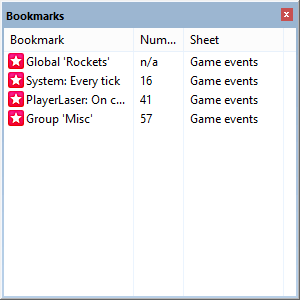
As with all bars, the Bookmarks Bar can be docked anywhere in the user interface or left floating as an individual window.
Bookmarks are listed in the order they occur in the project: first by event sheets in the order they appear in the Project Bar; then by their sequence within the event sheet. Each bookmark listed shows a description by it, if possible. For example a bookmarked group will show the title of the group, a bookmarked variable will show the name of the variable, and a bookmarked event will show some text from the first condition of the event. If the bookmark position has an event number, it is also shown, and the event sheet the bookmark belongs to is also listed.
Double-click a bookmark to navigate to it. Right-click to show a menu where bookmarks can be removed (alternatively by pressing Delete), or clear all bookmarks from the project.
3.10 Layout View
The Layout View is a visual designer for your objects. It allows you to set up a pre-arranged layout of objects, such as a game level, menu or title screen. In other tools, layouts may be referred to as scenes, rooms, frames or stages. See also the manual section on layouts. ⇗The dotted rectangle in the top left indicates the window size in the layout.
Adding, modifying and deleting objects
Double-click a space in the layout or right-click and select Insert new object to add a new object type. This will bring up the Insert New Object dialog.
To create new instances of an existing object type, another object can be control + dragged, copy and pasted, or dragged and dropped from the Project Bar or Object Bar. (Make sure you're clear on the difference between Object Types and Instances as described in Project Structure.)
A shortcut for importing image files as Sprite objects is to drag and drop image files from Windows Explorer to the Layout View. This automatically creates a new Sprite object type with the dragged image. If multiple image files are dragged, the Sprite is assigned an animation with the dragged images as animation frames.
Instances can be moved by dragging and dropping them with the mouse. Hold shift to axis-lock the drag to diagonals. Alternatively they can be nudged 1 pixel at a time with the arrow keys (hold shift to nudge 10 pixels), or co-ordinates can be typed in directly to the Properties Bar.
The Delete key or right-click Delete option deletes instances. Deleting all instances of an object does not remove the object type from the project. To entirely remove an object from the project it should be deleted via the Project Bar.
Click objects to select them. Objects cannot be selected if their layer is locked. Hold control while clicking to select multiple objects, or click and drag a selection rectangle to select all objects in an area. The Properties Bar displays properties for all currently selected objects, so changing a property sets it for every selected object.
When a single object is selected it appears with resize handles around it:
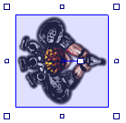
Click and drag the resize handles to stretch the object. Hold shift to proportionally resize the object. The size of the resize handles can be changed in Preferences.
Rotatable objects like Sprite also have an angle handle originating from the object's origin. This can be clicked and dragged to change the object's angle. Alternatively an angle can be entered in to the Properties Bar.
Using tilemaps
If you are designing a tile-based game, you can insert the Tilemap object and edit tiles in the Layout View. To find out more, see the manual entry on the Tilemap Bar.
Scrolling and zooming
There are three ways to scroll in the Layout View:
- The vertical and horizontal scrollbars at the edges of the view
- Hold the middle mouse button and drag the mouse
- Hold space and move the mouse (useful for laptops with track pads)
On desktop systems, middle-mouse dragging is probably the most convenient way to move around the layout.
Zooming is useful to focus on a small area or see an overview of the entire layout. There are several ways to zoom:
- The Zoom buttons on the ribbon in the View tab (hold shift while clicking to adjust the zoom amount)
- Hold control and scroll the mouse wheel. Hold both Control and Shift to zoom in integer steps (e.g. 100%, 200%, 400%...)
- + and - on the num pad (hold shift to adjust zoom amount)
The current zoom is displayed in the Status Bar. Press Control + 0 to return to 100% zoom.
Selection wrapping
If you select two or more objects, you can wrap the selection by pressing Enter or right-clicking and selecting Wrap selection. This allows you to rotate and stretch the selection as a whole.
Wrapped selections appear with a red selection box rather than blue, as shown below:
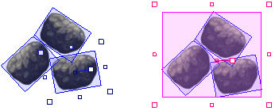
By using the red resize handles the entire arrangement can be made bigger:
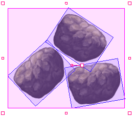
The red rotate handle can also be used to rotate the entire selection around the mid-point of the selection. If you click an object while the selection is wrapped, the rotate handle moves to the clicked object's origin. This allows you to then rotate the entire selection around that object, instead of just around the mid-point.
Other
To go to the associated event sheet, press Ctrl + E or Ctrl + Tab or right-click and select Edit event sheet.
The Z order of objects within a layer can be adjusted by right-clicking and selecting Z Order - Send to top of layer or Send to bottom of layer. You can also choose Edit Z Order... to open the Z Order Bar for advanced control.
Objects can be snapped to a grid for tile placement, and the collision polygons of the displayed objects can also be outlined. The View tab of the ribbon provides these options.
The right-click menu in the layout view also provides some alignment tools under the Align sub-menu. These allow you to quickly space objects equally or align objects along their edges. When aligning, the objects are aligned to the particular object you right-clicked.
The image or animation editor can be brought up by double-clicking objects with images or animations like Tiled Background and Sprite.
Effects previewing
Effects will be displayed in the layout view if WebGL is enabled in project properties. If WebGL is disabled, the layout view will preview as it would at runtime, without displaying any effects, and using any fallbacks that have been set up.
3.11 Event Sheet View
The Event Sheet View is where events can be added, viewed and edited in an event sheet using Construct 2's non-programming event system.
The event system has a lot of features, so the event system has its own section of the manual. This section will simply cover the basics of using the Event Sheet View.
⇗Diagram of an event

Events are made up of three major sections:
- The event block, which contains the conditions. Notice the margin to the left of the condition which allows you to select the entire event.
- The conditions, which are each listed inside the event block.
- The actions, which are listed to the right of the event block.
Conditions and actions can be selected by clicking on them. The entire event can be selected (which also selects all its conditions and actions) by clicking the event margin, or the bottom part of the event block. The event margin can also be right-clicked to access a menu allowing things like adding sub-events.
As with the Layout view, multiple selections can be made by holding control and clicking different items. However, you can only have either events, conditions or actions selected at a time (e.g. you can't have both a condition and action selected at once). You can also hold shift and click an event, condition or action to select all the items in a line between the selection and clicked item.
Creating events
There are a number of ways to add a new event:
- Double-click a space in the event sheet
- Click the Add event link which comes after the last event
- Right-click and choose an item to add in the menu
- Use the Events tab on the ribbon
When you add a new event, the dialog that appears is for adding the first condition (see Add Condition dialog). To add more conditions to an event, right-click the margin or an existing condition and select Add another condition.
Actions can be added by clicking the Add action link (if it has not been hidden in the ribbon), or right-clicking the margin or an existing action and selecting Add another action. See also Add Action dialog.
Modifying events
Double-click or select and press Enter on condition or action to edit it.
Events, conditions and actions can be dragged and dropped around the event sheet. Holding control and dragging will duplicate the dragged event, condition or action. Event items can also be cut, copied and pasted.
You may find it convenient to organise events in to Event Groups, which can also be activated and deactivated as a whole.
Press R or right-click and use the Replace object option to quickly swap objects referenced in the selection. Note that objects with references to instance variables or behaviors in the selection can only be swapped with other objects with the same instance variables and behaviors which have the same names and types.
Scrolling and zooming
There are several ways to scroll in the Event Sheet View:
- The vertical scrollbar to the right of the view
- Scrolling the mouse wheel
- Hold the middle mouse button and drag the mouse
- Hold space and move the mouse (useful for laptops with track pads)
Use the zoom buttons on the ribbon in the View tab or hold control and scroll the mouse wheel to zoom. Press Ctrl + 0 to restore 100% zoom. The event sheet font can also be set in Preferences.
3.12 Image and Animations editor
Construct 2 has a built in image editor, and the Sprite object extends it with additional windows that allow you to create animations. Note: the image editor is currently a work-in-progress and is not yet feature complete.To open this editor, double click an object with an image or animations in the Layout View. Alternatively, right-click the object in the Project Bar or Object Bar and select Edit image or Edit animations.
The image editor
The image editor is used to edit Tiled Background images and Sprite animation frames.
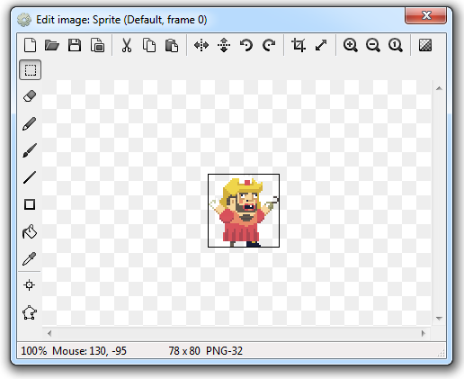
The buttons along the top modify the entire image:
Clear image Resets the image to all transparent.
Open Import an image file from disk in PNG, JPEG, BMP, TIF, GIF or WMF format. PNG is recommended since it is lossless, usually compresses well, and supports alpha transparency.
Save Export the image to a file on disk in PNG, JPEG, BMP, TIF or GIF format. PNG is recommended since it is lossless, usually compresses well, and supports alpha transparency.
Set export format Opens the Image Format dialog, allowing you to set the format on export to PNG-32, PNG-8 or JPEG.
Mirror Mirror the image horizontally. Hold shift to mirror an entire animation.
Flip Flip the image vertically. Hold shift to mirror an entire animation.
Rotate 90 degrees clockwise/anticlockwise rotates the image. Hold shift to rotate an entire animation.
Crop removes spare transparency at the edges of the image, making the canvas as small as possible while still fitting the image. This is recommend to save memory and make collisions more accurate and efficient. Hold shift to crop an entire animation.
Resize Adjust the image canvas size, with options to center align the image, top-left align or stretch to fit.
Zoom buttons Zoom the image. Alternatively, hold control and scroll the mouse wheel.
Toggle background brightness Switch the background from a light shade to a dark shade. The dark shade may be more useful for editing bright images like light spots, clouds, etc.
The image editor view can also be scrolled by holding the middle mouse button and dragging.
The buttons down the left are the following tools:
Rectangle select Select, delete, cut, copy and paste rectangle sections of the image.
Eraser Erase sections of the image.
Pencil Draw individual pixels or drag 1px-size lines.
Brush Draw with a colored round brush.
Line Draw colored lines.
Rectangle Fill an area with a color.
Fill Flood fill an area with a color.
Color picker Pick the primary or second color from the image. Note holding control and clicking with another tool is a shortcut for this.
Set origin and image points Opens the Image Points dialog. This allows you to set the image's origin (its point of rotation) and place image points at focal points in the image such as at the end of the gun. Image points can be accessed in the event system to create objects from and such. Some objects, like Tiled Background, do not use an origin or any image points.
Set collision polygon Set the collision shape for the image or frame. By default Construct 2 guesses a collision shape, but it is not always accurate. Click and drag the points of the collision polygon to alter its shape. Right-click to display a menu of additional options for the collision polygon, such as adding and deleting points. Some objects, like Tiled Background, do not use collision polygons.
Animations Bar
The animations bar is where multiple animations can be created for Sprite objects.
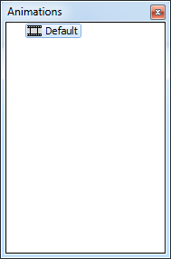
Right click a space to add a new animation or add a subfolder to organise animations. Right click an animation and select Preview to preview how the animation will look in the game.
When selecting an animation, the Properties Bar displays settings for the animation. These are the following:
Speed The number of animation frames shown per second. For example, if set to 5, each animation frame lasts for 1/5th of a second. Set to 0 if you do not want the animation to play (e.g. if a tile set is used with a different tile in each frame).
Loop Restart the animation after it finishes.
Repeat count If not looping, the number of times to repeat the animation.
Repeat to The zero based index of the animation frame to repeat back to if looping or repeating.
Ping-pong Play the animation alternately forwards and backwards.
Animation frames bar
The animation frames bar displays a list of the animation frames in the current animation.
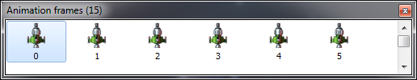
Select an image to switch the Image Editor to editing the clicked animation frame. Animation frames can also be dragged and dropped to adjust the sequence.
Right-click a space in the animation frames bar for the following options:
Add frame Add a new blank animation frame to the end of the sequence.
Duplicate last frame Make a copy of the last animation frame and add it to the end of the sequence.
Reverse frames Reverse the order of all the frames in the animation.
Import frames Opens a dialog to select one or more image files from disk. All the selected image files are added as animation frames.
Import sprite strip Import a sprite strip or tileset, where a single image contains a number of animation frames aligned to a grid. This is done with the Import Sprite Strip dialog.
Reload files from disk Reload all the images from the project folder. This is useful if you have edited the images in the project folder while Construct 2 is open and want Construct 2 to recognise the changes. (This option is disabled if you're not using a project folder.)
Thumbnail size Adjust the size of the thumbnail icons of each frame in the bar.
Selecting an animation frame shows a single property in the Properties Bar: Frame speed, which is a multiplier for the amount of time to spend on the frame. For example, a frame speed of 2 will spend twice as long on that animation frame, 0.5 half as long, etc. relative to the current animation speed.
3.13 Dialogs
This section lists each dialog in the Construct 2 editor. You may not need to use all of these dialogs, depending on the features you use. Each dialog has a link to its relevant help page in this section. You may prefer to use these links when you need to rather than read through this section.
3.13.1 About
If you're looking for general help on Construct 2, try the manual front page. This page describes the About dialog.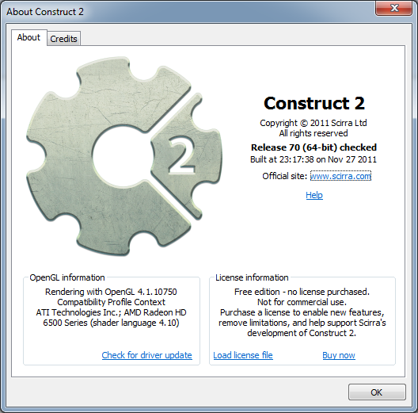
The About dialog contains the following information:
Release number (e.g. Release 70)
Construct 2 does not use the a.b.c version numbering system. Instead, the version is simply a number which increments by 1 every time a new release is published. You should stay up to date with the latest version for the most features, best performance and most reliable stability.
Release architecture (32-bit or 64-bit)
This determines whether you are using the 32-bit or 64-bit version of Construct 2. If you're using a 64-bit computer it's recommended to install the 64-bit version, unless you are using a portable installation. See Installing Construct 2 for more information.
Release type
Following the release number and architecture may optionally be the word checked. Checked builds are generally for testing and you may occasionally see check failure dialogs which indicate a possible bug or problem. You should report any such issues to Scirra.
If the word checked does not appear, it indicates a release version of Construct 2, which is a stable build intended for day-to-day usage.
Build timestamp
The date and time the Construct 2 executable was compiled by Scirra is included. This is occasionally used by Scirra for diagnostic purposes.
OpenGL information
This section outlines your graphics card and its basic capabilities.
It is important to keep your graphics card drivers up to date ⇗. Many common display glitches (e.g. objects not appearing or having sections cut off) are caused by buggy, out of date drivers. Updating to the latest version released by your graphics card vendor often fixes these problems. If you haven't done before since installing Construct 2, we recommend you click the Check for driver update link and try updating your drivers. You may need administrator permissions and have to reboot your computer.
License information
This contains the license information if a license has been purchased. See Using a license for more information.
Credits page
Lists all the individuals and organisations whose work has been involved in the creation of Construct 2.
3.13.2 Add behavior
The Add Behavior dialog allows you to add a new behavior to an object type. Some behaviors can only be added once and will not appear in the dialog if the object already has them. It can be opened from the Object Behaviors dialog. For documentation on each behavior, see the Behavior Reference section of the manual.
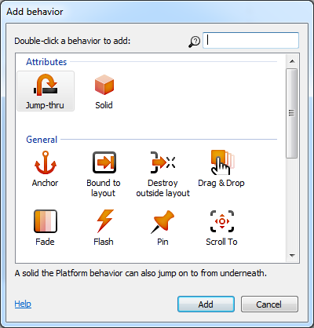
Simply double-click the behavior you wish to add. Select a behavior to see a brief description beneath the icons. The available behaviors can be filtered by name by typing in to the search box in the top right.
3.13.3 Add condition/action
The Add Condition dialog and Add Action dialog are very similar so they are both documented here. These dialogs allow you to add or edit a condition or action in an event sheet.Adding a condition or action takes three steps:
- Choose the object that has the condition or action
- Choose the condition or action in that object
- Enter parameters, if any, such as the X and Y co-ordinate for Set Position.
The Next and Back buttons can be used to move forwards and backwards through these steps.
Step 1: Choose the object
In this step a list of all the object types in the project is shown. The System object (which represents built-in functionality) always appears first, and the rest of the objects are sorted alphabetically.
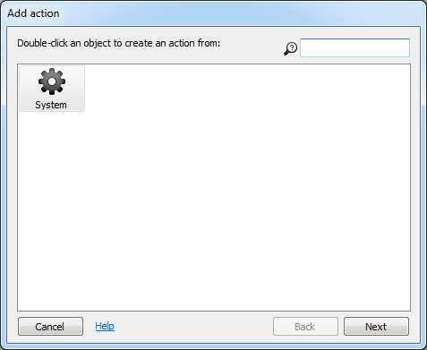
Double click an object to choose it. Typing in the search box in the top-right can quickly filter the list if there are many objects.
The conditions and actions each object contains is related to the kind of object it is (e.g. Sprite, Keyboard or Audio). For example, to locate the Play sound action in the Add Action dialog, first double-click the Audio object. Remember the System object contains some conditions which can be used for any object, such as Pick random and For Each.
Step 2: Choose the condition or action
In this step a list of all the conditions or actions in the chosen object is displayed. They are arranged in to related categories. Below a list of the System object's conditions is shown.
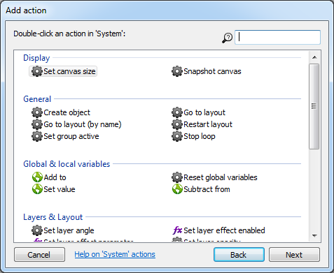
Double click a condition or action to choose it. As before, typing in the search box can help quickly locate a condition or action in the list.
For more information on each condition or action, see the Plugin reference. If the chosen object has any behaviors, they may add extra conditions and actions in to the dialog as well.
Some conditions and actions require parameters. For example, the Set position action for a Sprite requires the X and Y co-ordinates to be entered. This is done in the Parameters dialog in the next step. However, some conditions and actions do not use any parameters, such as the Destroy action. In this case once the condition or action is chosen the process is complete.
Step 3: Enter parameters
If the chosen condition or action requires parameters, the Parameters dialog appears for the parameters to be entered in to. Click the link for more information on the Parameters dialog.
3.13.4 Add configuration
The Add Configuration dialog is used for the Configurations feature which is currently a work-in-progress. Please check back soon for more details!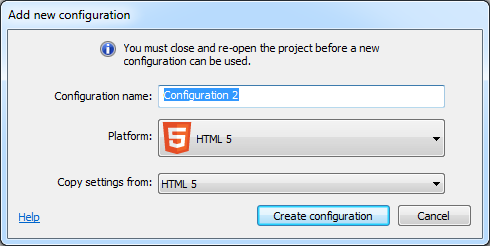
3.13.5 Effects dialog
The Effects dialog allows you to add or remove effects for objects, layers and layouts. It can be opened from the Properties Bar when the properties for an object supporting effects, a layer, or a layout are showing.
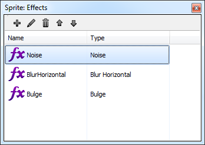
Effects can be added with the toolbar at the top or by right-clicking and selecting Add effect. This opens the Add Effect dialog. The toolbar and right-click menu also allow you to rename (F2) or delete (Del) effects.
Effects can be reordered by using the Up and Down buttons on the toolbar, or by dragging and dropping them. The order of effects is important since it defines the order in which the effects are processed, which can alter the visual result. For more information, see the manual section on Effects.
3.13.6 Event group
The Add/Edit Event Group dialog contains settings for a group of events.
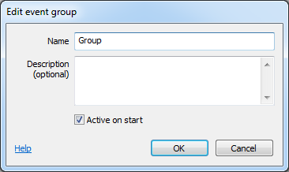
Name
A name identifying this event group, displayed in large lettering in the event sheet. When enabling or disabling event groups, the name identifies the group.
Description (optional)
An optional description summarising what the events in the group do, for your organisational purposes. This is displayed in smaller lettering beneath the group name.
Active on start
Determine whether or not the event group is enabled when the project begins. If this is unchecked, the event group is disabled, and none of the events inside it will run until it is enabled by the Set group active system action. Events which are inactive on start are displayed with a faded out font in the title.
3.13.7 Event variable
The Add/Edit Event Variable dialog allows you to set the name, type and initial value of a global or local variable in an event sheet.
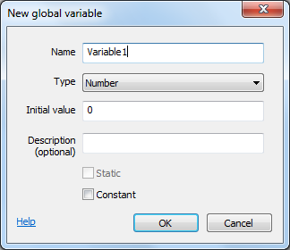
The Name identifies the event variable. This is typed in to expressions to retrieve the value of the event variable. Some names cannot be used, like the names of system expressions, since they would conflict when entering an expression.
The Type specifies what kind of value the variable holds. An event variable can store either a Number or Text (also known as a string). The type of an event variable does not change - you can't store text in a Number variable and vice versa.
The Initial value is the initial number for a Number variable, else the initial text for a Text variable. Initial text can be empty. The initial text entered here does not need double quotes around it. In other words, Hello is a valid entry, and if you enter "Hello" the initial string will include the double quotes. Note this is different to entering strings in expressions which require the double quotes.
The Description is an optional comment you can use to briefly describe what the variable is used for. It is displayed next to the name in the editor to help remind you what to use the variable for.
The Static checkbox only applies to local variables. By default, local variables reset their value to the initial value every tick. However, if Static is checked, the local variable's value will persist permanently, like a global variable. Static local variables differ from global variables in that they can still only be used within their scope. Global variables always hold their values permanently so the Static option does not apply to them. For more information about local variables, see Event Variables.
The Constant checkbox makes a variable read-only. You will be able to compare and retrieve the variable, but not change its value using any actions. This is useful for referring to a number like the maximum number of lives, without having to repeat the number in your events. If you want to change the value, there is only one place you need to change, which is a lot easier than having to hunt down the multiple places you entered a particular number in your events. According to programming convention, the names of constants are displayed in upper case, e.g. MAX_LIVES.
3.13.8 Export project
The Export Project dialog exports your project in a format ready for publishing. See Exporting and Publishing for more information.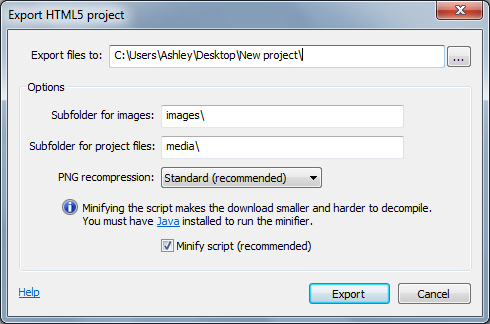
If you're looking for tips on ways to publish your game, see the tutorial Publishing and promoting your Construct 2 game ⇗.
If you are interested in the technical details of exported projects, see the Technology section.
Folder for files
All the exported files are generated in this folder. They can include a variety of HTML, Javascript, PNG files and more, but this varies depending on the chosen platform. It is highly recommended to use a new, empty folder. The default folder can be chosen in Preferences.
Subfolder for images
All the project's images and animation frames will be placed in this subfolder. Leave it empty to export images to the export folder. For some platforms this option is disabled because no subfolders are used.
Subfolder for project files
All the project's files (sound and music) will be placed in this subfolder. Leave it empty to export files to the export folder. For some platforms this option is disabled because no subfolders are used.
PNG recompression
The exported images are in PNG format and can be recompressed losslessly to reduce their filesize even more. However, this can slow down the export time considerably. Use None to skip this - the exported files will be larger, but the export process will be quicker. Standard is recommended to ensure the download size is as small as possible. Brute can be used if you have an extremely large project or it's essential to save as much bandwidth as possible, but the export process can take a very long time in this mode so it is not recommended. For more information on the recompression techniques Construct 2 uses, see this blog post on Image compression in Construct 2 ⇗.
Minify script
The exported Javascript code can be compressed with Google's Closure Compiler to reduce the download time. This is called minification. At the same time the code is obfuscated to make it extremely difficult to reverse-engineer your project. For this reason it is highly recommended to always minify your script on export. Minification requires Java ⇗ to be installed. (Note that Java is a different technology to Javascript.)
3.13.9 Expressions panel
The Expressions Panel is a dictionary of all the expressions available in your project. It is shown floating next to the Parameters dialog. By default it is semitransparent so it does not distract you while entering parameters. The Expressions Panel can be hidden or shown by pressing F4.
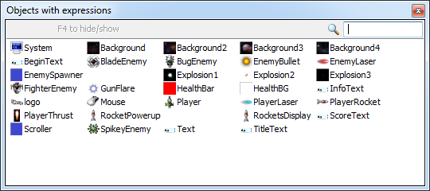
The search box in the top right can be used to quickly filter the object list.
Double click an object to list all its expressions. Descriptions are also shown next to each expression to help indicate what value will be retrieved. Double click one of the listed expressions to insert it to the current expression in the Parameters dialog. Press Escape or click the Back button to return to the object list.
Behavior expressions are also shown for objects with behaviors. The System page also lists all system expressions, global variables and local variables which are in scope (see Event Variables).
3.13.10 Image format
The Image Format dialog is opened in the Image/Animations editor to set the file format for an image when the project is exported.

Images in the project are always saved in PNG-32 format. This is the only format that exactly preserves an image with an alpha channel. The settings here are only used when the project is exported. They are mainly used to reduce the image file sizes so the game download is smaller.
Images in either PNG format are also recompressed on export to further reduce the filesize without affecting the image quality. For more information on the recompression techniques Construct 2 uses on export, see this blog post on Image compression in Construct 2 ⇗.
The Image Format dialog has the following options:
Format
The format of the image when exported. In brief, the formats are as follows:
PNG-32 (default) can store true color images losslessly (perfectly, without any quality loss) with full alpha channel transparency. However, it usually also produces the largest file.
PNG-8 is a 256-color version of PNG. It supports alpha channel transparency, but within the 256 colors only. Retro or low-color images should look exactly the same in PNG-8. Images with more than 256 colors have to be reduced to only 256 colors which can degrade the image quality. However, Construct 2 uses an advanced dithering algorithm (PNGNQ ⇗) to achieve this color reduction. This means many images still look almost identical. PNG-8 files are also often much smaller than PNG-32 files, so using PNG-8 is a useful way to reduce the download size of the game.
JPEG is an image format designed for photographic or highly detailed images. It does not support transparency at all, so it is not suitable for images which have any transparent areas or alpha channels (they will appear as if on a black background). However, JPEG can achieve the smallest files of all, depending on the quality setting. This is generally best for minimising the size of large background images.
For more information on these formats see the Wikipedia articles on PNG ⇗ and JPEG ⇗.
Quality
The quality setting when using the JPEG format. JPEG quality ranges from 0 (worst quality, smallest file) to 100 (best quality, largest file). Quality settings above 85 are often difficult to distinguish from the original. 75 is recommended as a compromise between quality and reducing the file size as much as possible.
Apply this setting to
Allows you to set the same image format for many images at once.
This frame or This image applies the image format only to the currently viewed image or animation frame.
This animation (Sprite only) applies the image format to all the frames in the current animation.
All animations (Sprite only) applies the image format to the entire object - all its frames in all its animations.
Entire project applies the image format to every single image in the entire project. Use this with care, since it overwrites every single other object's image format settings, and cannot be undone.
3.13.11 Import audio
The Import Audio dialog allows audio files to be added to the project from disk. It is accessed by selecting Import Sounds or Import Music from the right-click menu of the Sounds or Music folders in the Project Bar. Be sure to add the Audio object to your project to play back sounds and music.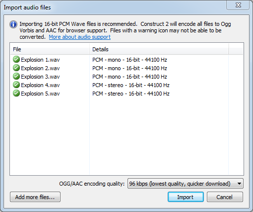
Before the dialog appears, you will be prompted to select some audio files from disk. You can select more than one file. The files are listed in the Import Audio dialog before importing, with tips about whether the format is supported or not. You can also click Add more files... on this screen to add some more files to the list.
Click Import to begin importing the listed files to the project. This may take a while with long audio recordings (e.g. music tracks); a progress bar may appear during the processing. Only files which are in a supported format are imported. Once importing has finished, the list will show the results of which files were successfully imported. Click Done to close the dialog.
It is highly recommended to import PCM .wav files, since they are commonly supported and Construct 2 can encode them to both Ogg Vorbis and MPEG-4 AAC (only on Windows 7+).
Two audio formats are required
Browser makers have not been able to agree on a common audio format for the web. Internet Explorer and Safari use the proprietary MPEG-4 AAC (.m4a) format, and all other browsers (Firefox, Chrome and Opera) support the free Ogg Vorbis format.
For audio playback in all browsers, your audio must therefore be in both formats. Construct 2 helps you by encoding any uncompressed audio you import to both .m4a and .ogg for you automatically. However due to licensing restrictions around the proprietary MPEG-4 AAC format, Construct 2 will only encode .m4a files on Windows 7 and newer. Users on Windows XP and Vista must encode .m4a files on their own. The file extension must be .m4a. Free encoders are available; try searching the web for an AAC encoder.
The Ogg Vorbis format can be encoded on any system.
Construct 2 favours the Ogg Vorbis format. When choosing a sound in the event system, only .ogg files are listed. A .m4a file is considered a back-up to the .ogg file for browsers which do not support Ogg Vorbis. This also means if you import a .m4a file with no corresponding .ogg file, it will not be listed in the event system. This is by design.
Construct 2 will not trans-code .m4a files to .ogg nor .ogg files to .m4a; it is recommended to import PCM .wav files which Construct 2 can encode itself. Trans-coding also degrades the quality to worse than if uncompressed audio was encoded once.
Categorise audio files correctly
It is important to organise audio files appropriately, because audio files in the Sounds project folder are downloaded completely before playing, but files in the Music folder are streamed. This means if a Music track is accidentally put in the Sounds folder, it would have to download completely (which could take a couple of minutes) before it started playing. However, audio in the Music folder can start playing immediately since it is streamed from the server.
Supported audio formats
There are many audio formats and many of them have different levels of support. Also, many formats have sub-formats, and not all sub-formats are always supported. This makes describing the audio support complicated. A best effort is made below to summarise the supported audio formats but this is not guaranteed to give you results. Instead, it is highly recommended you only import PCM .wav files, which are widely supported and can be encoded to both .m4a and .ogg by Construct 2. Note there are different types of .wav file other than PCM: Construct 2 will try to display the type of .wav file in the Import Audio dialog (in the picture above, PCM files were used), but types other than PCM may not import. Any good audio codec software will be able to convert to PCM .wav. Try to avoid using "lossy" formats before importing to Construct 2, else the quality will be further degraded when Construct 2 encodes the lossy .ogg and .m4a files.
The following formats are listed by their file extension, and whether Construct 2 can encode them to Ogg Vorbis (.ogg) and MPEG-4 AAC (.m4a).
.wav (PCM or PCM float format): Both
.flac (FLAC): Both
.ogg (Ogg Vorbis): Imported but not converted to .m4a
.m4a (MPEG-4 AAC): Imported but not converted to .ogg
.aif, .aiff, .aifc (AIFF): .ogg only
.aac (MPEG-4 AAC): .m4a only
.mp3 (MPEG-1 layer 3): .m4a only
.wma (Windows Media Audio): .m4a only
3.13.12 Image points
The Image Points dialog allows you to set the object origin (the point of rotation) and image points (arbitrary points that can be accessed by events) on an image. It is accessed via the Image and Animations editor.
The Origin is a special kind of image point defining the center of the object, or its point of rotation. It has a different icon, colored red. The term image point usually means "image points including the origin". Image points have a zero based index, and the first image point (number 0) is always the origin. The origin cannot be renamed.
Image points are useful to create spawn points for other objects. Since you can create objects at image points in events, it is often useful to place an image point in places like the end of the player's gun in the image. Image points can also be given a name, and referred to in events by this name.
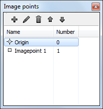
Below, an image point is placed at the end of the player graphic's gun. Notice the indicator there.
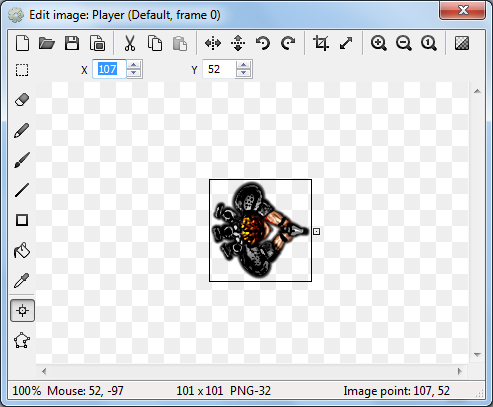
Select an image point in the list and a corresponding point should appear on the image. Left click to place the point under the mouse. The arrow keys can also nudge it 1 pixel in each direction.
An image point can be quickly placed using the num pad, e.g. 1 for the top-left corner or 5 for centered. Alternatively the image point can be right clicked in the Image Points dialog and an option chosen from the quick assign menu.
Right clicking an image point in the Image Points dialog also provides an Apply to whole animation option. This sets the image point in the same relative place in all frames in an animation. If an image point does not exist in all frames in the animation, this option also creates it. Holding shift while placing the image point is a shortcut for this.
3.13.13 Import sprite strip
This dialog allows you to import an image containing an entire animation in a grid. It is accessed via the Animation Frames bar. After choosing the Import sprite strip... option, a dialog appears to select the image file. After a file has been chosen, this dialog appears to tell Construct 2 how many animation frames are in the image.
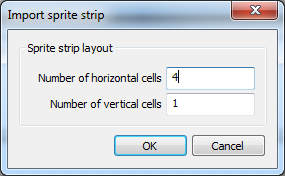
For example, the following image has 7 horizontal cells and since they are all on one row, only 1 vertical cell:
The following image is in a grid, so has 4 horizontal cells and 4 vertical cells:
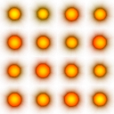
In both cases Construct 2 will separate each cell in the image to a different animation frame.
3.13.14 Insert new object
The Insert New Object dialog typically appears after double clicking a space in a Layout View. It allows you to choose the kind of object to insert (each kind is known as a plugin). Inserting a new object creates a new object type. See Project Structure for a description of the difference between object types and instances. Also see the Plugin Reference section of the manual for documentation on each plugin.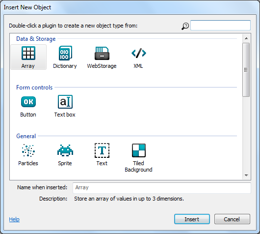
Plugins are categorised in to related groups. Within each group they are arranged alphabetically. Selecting an item will display a brief description summarising what the plugin does in the Description field at the bottom of the dialog. Typing in the search box in the top right can quickly filter down the list to help you find what you are looking for.
The Name when inserted indicates what the name of the object type in the project will be after you insert it. By default this will be a numbered version of the plugin name e.g. Sprite2, Sprite3 etc. It is a good idea to give objects descriptive names so you don't get confused when working on your project. You can enter a descriptive name in this field which the object will use when inserted, but if you don't you can still easily rename objects via the Properties Bar or Project Bar.
Double click an item to insert it. If the object can be placed in a layout and a Layout View is open, the cursor turns to a crosshair for you to place the first instance of that object. For objects with images or animations (like Sprite), after you have placed this instance the Image/Animations editor will appear to design the image or animations for the object.
Other kinds of object (like the Keyboard and Audio object) do not need placing in a layout. After inserting one of these objects, the dialog closes but there is no need to place it anywhere. Instead, a notification bar appears indicating that they are available to the entire project. This type of object can only be inserted once, and will disappear from the list if the dialog is brought up again.
3.13.15 Instance variable
The Add/Edit Instance Variable dialog allows you to set the name, type and initial value for an instance variable in an object type. It can be opened from the Object Instance Variables dialog.
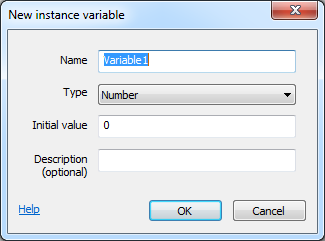
The Name identifies the instance variable. This is typed in to expressions after the object name (e.g. Sprite.MyVariable) to retrieve the value of the instance variable. Some names cannot be used if they conflict with the names of the object's other expressions or behaviors.
The Type specifies what kind of value the variable holds. An instance variable can store a Number, Text (also known as a string) or a Boolean (a simple on or off value, sometimes also known as a flag). The type of an instance variable does not change - for example, you can't store text in a Number variable.
The Initial value is the initial number for a Number variable, the initial text for a Text variable, or true or false for a Boolean. Initial text can be empty. The initial text entered here does not need double quotes around it. In other words, Hello is a valid entry, and if you enter "Hello" the initial string will include the double quotes. Note this is different to entering strings in expressions which require the double quotes.
The Description is an optional comment you can use to briefly describe what the variable is used for. It is displayed next to the name in the editor to help remind you what to use the variable for. It is also displayed in the Properties Bar description panel when the instance variable's property is selected.
3.13.16 New project
Note: Recent versions of Construct 2 have replaced this dialog with the Start dialog.
The New Project dialog appears when creating a new project. It allows you to choose between the different project types.
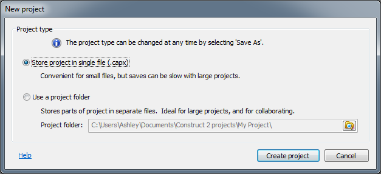
Choose between a single-file project or folder project. See project types for more information.
A single-file project can be created immediately, but a folder project requires the project folder to be created before starting. Single-file projects are generally more convenient for small projects, and folder-based projects more convenient for large projects. The type can be changed at any time by choosing Save as project or Save as single file in the File menu.
3.13.17 Object instance variables
The Object Instance Variables dialog lists all the instance variables an object type has. It can be opened from the Properties Bar while the object's properties are showing, or from right-clicking the object in the Project Bar or Object Bar and selecting Instance variables....
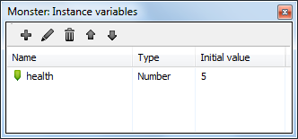
Instance variables can be added with the toolbar at the top or by right-clicking and selecting Add instance variable. This opens the Add Instance Variable dialog. The toolbar and right-click menu also allow you to rename (F2) or delete (Del) instance variables. Double click an instance variable in the list to edit it.
Instance variables can be reordered by using the Up and Down buttons on the toolbar, or by dragging and dropping them. The order of instance variables is just for organisation - it does not affect how they actually work.
If all instances of the object type have the same initial value for an instance variable, it is displayed in the Initial value column. However, different instances can have different initial values set via the Properties Bar. If there are different initial values across the instances, the Initial value column will display <varies>. Editing an instance variable with varying values and changing the initial value from the Edit Instance Variable dialog will set a new initial value for all the instances, overwriting the previous value for all of them.
3.13.18 Object behaviors
The Object Behaviors dialog lists all the behaviors an object type has. It can be opened from the Properties Bar while the object's properties are showing, or from right-clicking the object in the Project Bar or Object Bar and selecting Behaviors.... For documentation on individual behaviors, see the Behavior Reference section of the manual.
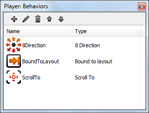
Behaviors can be added with the toolbar at the top or by right-clicking and selecting Add behavior. This opens the Add Behavior dialog. The toolbar and right-click menu also allow you to rename (F2) or delete (Del) behaviors. The behavior is referred to in the event system by its name.
Behaviors can be reordered by using the Up and Down buttons on the toolbar, or by dragging and dropping them. The order of behaviors is just for organisation - it does not affect how they actually work.
3.13.19 Parameters
The Parameters dialog appears after the Add condition or action dialog, or when editing a condition or action. It allows you to enter parameters such as the X and Y co-ordinate for the Sprite object's Set Position action (shown below). It does not appear for conditions or actions which do not use any parameters, such as the Destroy action. Expressions can be entered for parameters, which can be anything from a simple value to a sophisticated mathematical calculation.
The Expressions panel appears next to the Parameters dialog providing a list of all the expressions you can enter. By default the Expressions panel is faded out unless you hover the mouse over it. It can also be hidden or shown by pressing F4.
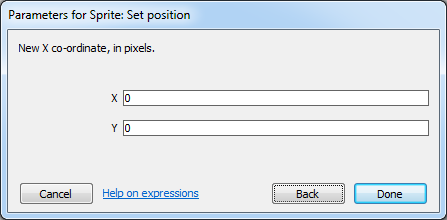
Use the Expressions panel to locate system expressions, object expressions, behavior expressions, global and local variables and instance variables. Alternatively you can use autocomplete: just start typing, and a list of all the options appears. Additionally if you type as far as the dot in an object expression (e.g. Sprite.) a list of all the object's expressions appears, shown below. This also appears after the dot when entering a behavior expression (e.g. Sprite.8Direction.). Use the Up and Down arrows to pick an item in the suggestions list, and press Enter to insert it. This can help you enter expressions much more quickly.
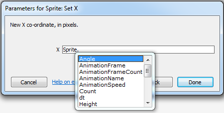
Some expressions also show tips to help you remember how to use the expression, shown below. This appears when you type the open bracket ( for the expression. This is most useful for System expressions which tend to have multiple parameters.
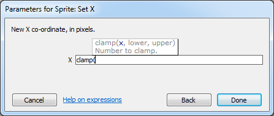
Press Tab to move to the next parameter or Shift + Tab to move to the previous. Enter is also a shortcut to press Done (you may have to press Enter twice if autocomplete is showing: once to choose the autocomplete entry, and again to close the dialog).
3.13.20 Preferences
The Preferences dialog contains settings for the Construct 2 editor. It can be opened from the File menu. Settings are organised in to five tabs: General, HTML5 exporter, Backup, Manual and Colors.General
This section contains general settings for the Construct 2 editor.
Resize handle size
Change the size of the resize handles in the Layout View. The default is Small.
Event sheet font
Change font used in the Event Sheet View. The default is Segoe UI, 9pt.
Show start page on startup
If checked, the Start Page appears when starting the Construct 2 editor. If disabled a blank screen is shown on startup instead.
Close the start page when I click on something
If checked, the Start Page will close as soon as you click on one of the links (e.g. a recent project). Otherwise, the Start Page's tab is left open.
Update checking
Choose one of:
Don't for updates: Construct 2 will not access the Internet to check for new versions. This is not recommended, since new versions often contain significant improvements.
Check for beta updates: Check online for new testing releases from Scirra.
Check for updates: Check online for new releases from Scirra which have already been tested by people checking for beta updates.
Reset dialogs
Click this button to reset all dialogs and bars in the user interface to their default position and size. A prompt will appear to confirm this, then you must restart Construct 2 for the change to take effect. This is useful if you want to get the default UI back. Also, if for any reason dialogs appear glitchy or no longer appear when you try to open them, resetting them with this option can bring them back.
HTML5 exporter
This section contains settings for Construct 2's HTML5 exporter, as well as the local server used for previewing.
Default preview browser
Choose the Preview browser setting for new projects. This does not affect any existing projects.
Custom browser
Choose any executable file on disk to be launched for previewing when the Preview browser is set to Custom. For example, you may want to install a pre-release (beta) browser alongside the stable release, and have the option to also preview in the pre-release browser. Alternatively, Construct 2 sometimes cannot detect the traditional browsers even when they are installed, so you can manually specify a browser here.
Default export folder
Choose the default folder for exporting to in the Export Project dialog. In this path <project name> is replaced with the name of the project, or the name of the project is appended to the path if it is not present. The default is to your desktop.
HTTP server port
The port to use when previewing. By default this is 50000. You should not change this unless you know there is something else using port 50000 on your computer. Construct 2 will also try the next 100 ports if the chosen one is in use. You must restart Construct 2 before any changes to the port take effect.
Preview on LAN address
Enter the IP address of your computer on your local area network (LAN) to enable sharing preview with any device on your LAN. Click the button to the right to see a list of possible IP addresses for your computer. To use this feature, you must also allow the HTTP server port inbound through your firewall, and Construct 2 must be running with administrator permissions. Alternatively, entering localhost only previews on your computer, and does not require administrator permission. More information on how to set up and use this feature is in the tutorial How to preview on a local network ⇗.
Autosave
This section contains settings for making autosaves.
Enable autosave
If enabled, Construct 2 will automatically save the project to a .capx.autosave file in the same folder on a regular interval (as determined by Autosave frequency). In the event of a crash, power failure, or even just accidentally closing and not saving, the project can be recovered from the last autosave by opening the .capx.autosave file. This should minimise the amount of work lost. It is strongly recommended to keep backups to separate backup folders using the Backup tab in addition to this, since disasters such as fire or disk failure could still result in lost work if the entire storage media becomes unusable.
Autosave frequency
How often to make autosaves, if autosaving is enabled. Note that autosaves cannot be made in some circumstances, such as when modal dialog boxes are showing. If an autosave is due in such circumstances, the autosave will be made as soon as possible afterwards. The autosave frequency is a trade-off between possibly being irritating if made very frequently with a large project (since autosaves could take a while to complete), versus losing a lot of work if autosaves are made very infrequently and there is a crash or power failure.
Backup
This section contains settings to help you set up automatic backup for your work. This is essential to ensure your work is safe even in the event of catastrophes like hardware failure, theft, fire or floods. For more information, see the tutorial Keep your work safe with Construct 2's backup options ⇗.
Auto-backup
Save single-file (.capx) backups in the same folder as your project whenever pressing 'Save'. These have the file extension .capx.backupN. For example, if 3 auto-backups are enabled, myfile.capx.backup1 is the last save, myfile.capx.backup2 is two saves ago, and myfile.capx.backup3 is three saves ago. By default Construct 2 keeps one auto-backup file, allowing you to recover your project in the event software or hardware failure causes your main project to become corrupt. However, in many scenarios you can lose your auto-backups at the same time as your main project; for this reason, it is highly recommended to also set up a scheduled backup to an off-site location.
Backup folders (scheduled backup)
To ensure your work is always safe, it's vital to also back up your project to off-site locations, or at least on a different computer or hard disk. (Backing up to a Dropbox ⇗ folder is specifically recommended as a free and straightforward off-site backup.) To help you do this, Construct 2 can save your project to different folders at regular intervals. You can choose up to three backup folders and the time interval that backups should be made. Files are saved as single-file (.capx) projects with some random text appended to prevent two identically named files in different folders overwriting each other's backups (e.g. myfile-abc123.capx and myfile-def456.capx). Note: backups are only made when pressing the 'Save' button. Simply opening a project that somebody has sent you will not make a backup for it unless you modify it and click 'Save'.
Manual
This section affects how help links in the editor are opened.
Construct 2 comes with an offline manual, which you can use if your computer has no internet connection or has temporarily lost connectivity. However, the online manual's content is likely to be more up to date, so it is recommended to use the online manual where possible. Note not all help links are included in the offline manual, such as some tutorials or other online resources; these will be opened online regardless of the setting here. The options in this tab are as follows:
Auto-detect - automatically open the online manual if Construct 2 detects there is an internet connection; otherwise open the offline manual. This is the recommended option since you will see the most up-to-date content in the online manual, but automatically fall back to offline content if your connection is lost. Note this option is only available on Windows Vista and newer.
Always use offline manual - help links will always launch offline content, if the content is in the offline manual.
Always use online manual - help links will always launch online content, regardless of whether an internet connection is present.
Colors
This section allows you to customise the color theme used in the Event Sheet View and Layout View.
You can choose an existing theme by selecting one from the Choose theme dropdown and clicking Load selected theme. Note this loses your current settings, so you may want to save them first. The themes listed in the dropdown are "Default" plus any theme XML files in the install directory themes subfolder. To add a new entry, use the Save as new theme option.
Click Edit colors to bring up a dialog where you can change all the current colors used throughout the editor. This does not modify the selected theme - only the colors that you are using right now. After making changes, you will need to reopen any editor tabs that are currently open for all the changes to take effect.
Click Save as new theme to save the current colors chosen with Edit colors to a theme XML file. If this is placed in the install directory themes subfolder, the theme will subsequently appear in the Choose theme dropdown for easy access in future.
3.13.21 Start dialog
The Start dialog appears when creating a new project. It allows you to choose a template to start working from, or an example or demo game to learn from.
The list of templates, examples and demos can be searched with the box in the top right. Templates can offer a convenient starting point for projects aimed at certain platforms, with useful settings and objects already set up.
When you create a new project, it is always set up as a single file (.capx) project. To save as a folder-based project, which is more suitable for large projects or collaboration, use the File menu Save as project option. For more information, see Saving and sharing projects.
3.14 Keyboard Shortcuts
General
Ctrl + X Cut
Ctrl + C Copy
Ctrl + V Paste
Ctrl + Drag with mouse left button Duplicate
Ctrl + Z Undo
Ctrl + Y Redo
Ctrl + A Select all
Ctrl + N New project
Ctrl + O Open project
Ctrl + S Save project
Alt + F4 Close Construct 2
You can also press Alt to navigate the ribbon. When you press it, some tooltips should appear indicating the keys to press for each option.
F4 Preview project from first layout
Ctrl + F4 Debug from first layout
F5 Preview current layout (hold shift for continuous preview ⇗)
Ctrl + F5 Debug current layout
F6 Export project
Ctrl + Mouse Wheel Up or Num pad + Zoom in
Ctrl + Mouse Wheel Down or Num pad - Zoom out
Add shift to adjust the zoom distance.
Ctrl + 0 Return to 100% zoom
Middle mouse button drag or Hold space and move mouse Pan the view
Delete Delete selected item(s)
F2 Rename selected item
Ctrl + click Add or remove clicked item from selection
Shift + click As with Ctrl, but in Event Sheet View this selects everything in between the last selected item and the clicked item.
Escape Cancel drag or placement or event search
Ctrl + Tab Go to next tab to right
Ctrl + Shift + Tab Go to next tab to left
Layout view
See also: Layout View
Ctrl + E or Shift + Tab Go to associated event sheet
Arrow keys Nudge selected objects 1 pixel - hold shift to nudge 10 pixels
Hold shift while resizing objects for proportional resize
Hold shift while rotating objects to lock to 5 degree increments
Hold shift while dragging objects for axis-lock (move along diagonals only)
Hold tab and click a selected object to select the next object underneath in the Z order
Hold alt while moving selection to temporarily disable grid snapping while held
Hold control while resizing selection to resize relative to the center of the object
Ctrl + D Unselect all
Ctrl + Shift + Up Send to front of layer
Ctrl + Shift + Down Send to back of layer
C Center horizontally in window
T Align to top of window
Enter Wrap selection (to rotate or stretch the selection as a whole)
W Select container and wrap. For example, select one object in a container of eight objects, press W, then all eight objects are selected and wrapped.
To paste objects in-place (so they paste at their original positions, instead of relative to the mouse), hold Shift while placing a paste. The full process is: Ctrl + C to copy an object; press Ctrl + V to turn the mouse to a crosshair, hold Shift and click, all objects paste at their original positions (instead of by the mouse) and the mouse returns to a normal cursor.
When editing tilemaps using the Tilemap Bar:
1 Set normal layout selection
2 Set pencil tile tool
3 Set rectangle tile tool
4 Set erase tile tool
X Flip horizontal
Y Flip vertical
Z Rotate 90 degrees clockwise
Event Sheet View
See also: Event Sheet View
Ctrl + L or Shift + Tab Go to associated layout (if any - event sheets only used via includes have no associated layout)
Ctrl + F Open 'Events' ribbon tab and focus the event search field
Ctrl + Home Go to top of sheet
Ctrl + End Go to bottom of sheet
Ctrl + F2 Toggle bookmark at selected event
F2 Go to next bookmark in project
Shift + F2 Go to previous bookmark in project
F3 Toggle breakpoint
In the new condition/action dialog or parameters dialog:
Alt + Left Back/Cancel
Alt + Right Next/Done
Up arrow key and Down arrow key Move the selection up and down the event sheet
Left arrow key and Right arrow key Move the selection sideways between Events, Conditions and Actions
Enter Edit selected item
Escape Clear event search
A Add action
B Add blank subevent
C Add condition
D Toggle selected items disabled
E or Num pad + Add event below
Shift + E or Num pad - Add event above
G Add group
I Invert selected conditions
N Add include
R Replace object
Q Add comment
S Add subevent
V Add variable
X Add 'Else' event following selected event
Y Toggle 'Or' block
Parameters dialog
The parameters dialog is where you enter expressions, e.g. the X and Y co-ordinate for Set position.
F4 Toggle the floating expressions panel visible. This shows every expression you can use.
Tab Next parameter
Shift + Tab Previous parameter
Escape Cancel
Enter Done
Image and Animations editor
See also: Image and Animations editor
Quick assign origin and image points:
Num pad 1 or End Bottom left
Num pad 2 Bottom
Num pad 3 or Page down Bottom right
Num pad 4 Left
Num pad 5 Center
Num pad 6 Right
Num pad 7 or Home Top left
Num pad 8 Top
Num pad 9 or Page up Top right
Arrow keys Nudge 1 pixel
Hold Shift to apply the origin/image point to the entire animation. Shift + Click also applies that positioning to the entire animation.
Shift + Crop button Crop entire animation
Shift + Mirror button Mirror entire animation
Shift + Flip button Flip entire animation
Shift + Rotate Clockwise button Rotate entire animation clockwise
Shift + Rotate Anticlockwise button Rotate entire animation anticlockwise
Animations only:
Ctrl + Left or - Previous animation frame
Ctrl + Right or + Next animation frame
P Preview animation
3.15 Debugger
Bugs refer to software defects - things not working as you expected in your game or app. Debugging refers to the process of fixing these issues. The Construct 2 debugger is a tool to help you find and fix bugs in your game.Note: the debugger is available in the Free edition of Construct 2, but the 'Watch' and 'Profile' tabs, the ability to edit values, and the ability to use breakpoints, are unavailable.
How to run the debugger
The debugger can be run from the ribbon Home tab, the quick-launch bar, by right-clicking a layout or project in the Project Bar, or by using the keyboard shortcut Ctrl+F5.
The debugger works much like an ordinary preview, except that an extra panel appears alongside the game in the browser showing lots of information and some useful controls.
When in debug mode, the address in the browser also ends with /debug, e.g. http://localhost:50000/debug. You can also switch between normal preview and the debugger by going between these URLs. You can even run the debugger on a mobile device using preview over Wifi ⇗ and adding /debug to the end of the preview URL as well, e.g. http://192.168.1.3:50000/debug.
Customising the debugger panel
The debug panel in the browser can be resized by pulling the gripper that appears in the grey titlebar of the debugger (to the left of where it says Inspector). This allows you to pull it out to see more information, or collapse it down to just its tools and a summary of the performance information.
The debugger can also be popped out in to its own window. This is especially useful on multi-monitor setups. The game will show using the full browser window, and a separate browser window displays the debug panel. Click the pop-out button indicated below to do this. Clicking it again, or closing the popup window, will restore it to the main browser window again.
The main debugger commands
Alongside the pop-out button are some other useful tools. They are as follows:
Pause: pause the game so it is no longer progressing. This is useful to spend a while inspecting some information at a particular moment. When paused it turns in to a Resume button; click it again to resume running.
Step can only be used when paused. It advances the game by a single frame. Delta-time ⇗ (dt) is set as if the game were running at 60 FPS. This can be useful to inspect a moment frame-by-frame and watch how an event like a collision is handled.
Save and Load make a temporary savegame ⇗, allowing you to quickly save the state of the game and then restore back to that state at any time later on. This can be useful for repeatedly running the same part of a game over and over again. As with ordinary savegames, the state is stored persistently in the current browser. So the savegame will not be available in a different browser, but will be available in the same browser even after closing and reopening it, rebooting, etc.
Restart will simply refresh the game, loading it from scratch again.
Performance summary
Some details about the performance of the game appear in a light grey. For more advice on performance, see Performance Tips. The displayed values are, reading from left to right:
The object count (e.g. 500 objects): how many objects are currently created. Using too many objects can degrade performance. This value corresponds to the objectcount system expression.
The framerate (e.g. 60 FPS): how many frames per second the game is running at. Most system's displays update at 60 Hz, so the game should run at 60 FPS for optimal rendering. This value corresponds to the fps system expression.
The estimated CPU time (e.g. 20% CPU): an estimate of how much CPU time is being spent in the logic of the game. This is not always accurate, especially since it only takes in to account time spent on the main javascript thread, and should only be considered a ballpark figure. The profiler can break this down in to how much time is being spent in each area of the game, and is described in more detail later on in this guide. This value corresponds to the CPUUtilisation system expression.
The estimated image memory use (e.g. 32.5mb images): an estimate of how much memory is being used by the currently loaded images in the game. This is only available in WebGL mode. Images typically use up the most memory in a game, but note this value excludes everything else, such as memory required to run the logic of the game, and memory required to play music and sound effects. See the blog post Remember not to waste your memory ⇗ for more advice on image memory use. This value corresponds to the ImageMemoryUsage system expression.
The renderer (e.g. webgl): whether the game is rendering in canvas2d or webgl mode. WebGL mode is faster and supports shader effects. This value corresponds to the renderer system expression.
Some additional performance details appear in the Performance section of the System object's inspector view, which is displaying by default:
Collision checks/sec (e.g. 1144 (~22 / tick)): how many times in the last second the engine had to test for a collision between two objects. Collision checks are invoked by the On collision or Is overlapping sprite conditions, and many behaviors perform additional collision checks automatically. In brackets, the average checks per tick is also shown. For example if there were 600 collision checks in the last second and the framerate is 60 FPS, the estimated checks per tick will be 10. This tells you on average there were about ten collision checks per frame, although the actual value will often vary frame-by-frame.
Poly checks/sec (e.g. 60 (~1 / tick)): most collision checks are very fast, and the engine can tell trivially that two objects are not overlapping (by verifying that their bounding boxes do not overlap). However if two objects' bounding boxes are overlapping, the engine must do a more expensive check where the collision polygons of each object are tested against each other. This value tells how many checks of this kind were made in the last second, as well as with the average per tick as with the Collision checks/sec value. Usually the Poly checks/sec value is considerably smaller, but if it is high, it indicates a possible performance problem.
The 'Inspector' tab
The debugger has three tabs: the Inspector, the Watch, and the Profile tabs. The Inspector tab is used to view and edit values .
The Inspector view is divided in to two sections: on the left appears a list of all the object types in the project, including the System object, and on the right appears a list of tables of values relating to the selected object, similar to the Properties Bar.
The object list
Click the name of an object type in the object list to expand it. The number of instances of that object type appears in brackets after the object name. If the object type only has one instance, or is a global object like the System object or Audio object, it will immediately start inspecting the object. Otherwise it expands a dropdown with a list of all the object instances sorted by their index ID (IID). Clicking a particular instance will then inspect just that instance.
The values view
As with the Properties Bar, the values view shows a list of categorised tables displaying all the information about the currently inspected object. The displayed values depend on what is being inspected; for example the Sprite object displays information about its current animation frame, the Audio object displays information about currently playing sound and music, and the System object displays information about the engine, layout, and layers. Most often these values correspond to object properties from the Properties bar, as well as the object's expressions.
Instance variables and behavior values are also shown if the selected object has any.
It is often useful to view these values while running the game. However, they can also be edited. As with the Properties Bar, simply click on a value and type in a new value to change it. Edited values appear in bold. Not all values are editable - those with a light grey background are read-only. This can be an excellent way to experiment with how your project works.
The eye icon to the right of values can be used to add the value to the Watch tab. This is described in more detail later on.
The Tools section gives you the ability to destroy the inspected object. By default the inspected object is also outlined with a dotted red rectangle in the game. If this is distracting, uncheck the Highlight checkbox.
Objects in a container also provide a list of links to inspect the other instances in the container with the currently inspected object.
The 'Watch' tab
The inspector only allows you to view one object at a time, and often also includes a great deal of information, most of which you may not be interested in. Clicking the eye icon beside values in the Inspector adds that single value to the Watch tab. This allows you to combine different values from different objects in to a single space, as well as reduce the displayed values to just the ones you're interested in.
In the Watch tab, values can be edited as with the Inspect tab.
The Watch tab shows crosses instead of eyes to the right of the values. Click the cross to remove the value from the watch. Note if you are watching a value from an object and the object is destroyed, the watch value will automatically be removed.
Category headers also have their own eye or cross icons. Clicking them will add or remove the entire section to or from the watch.
The 'Profile' tab
The Profile tab provides a more detailed breakdown of the estimated CPU usage. The game must be running continuously for the profiler to be able to collect and display information. It then displays a breakdown of the estimated CPU time spent in each part of the game logic. It updates once a second and the values shown are for the previous second only.
It must be noted that the overall CPU usage is an estimate to begin with, and all other values are therefore estimates. The details shown in the profiler only relate to the main javascript thread, and the CPU could be busy with other tasks, such as processing audio or running pathfinding calculations. Additionally the time for the GPU to render the game is not taken in to account at all by the profiler. It is entirely possible the framerate is limited by the speed at which the GPU can render, but the profiler is not able to directly identify this. It can be inferred if the framerate is low but the CPU usage is not high.
Despite the above caveats, the profiler can be used to identify "hot spots" which would be good candidates to attempt to optimise first if there is a performance problem. For more performance advice, see Performance Tips. Note that optimisation is often not necessary and is a waste of time if the game is already running fast enough. For a deeper discussion of the subject, see the blog post Optimisation: don't waste your time ⇗.
Profiler breakdown
The profiler shows nested tables identifying how much CPU time has been spent in each part of the engine, down to individual event groups. The top-level items are:
Events: a breakdown of how much time was spent running event logic in the event sheets used by the layout. This is first broken down in to each event sheet (in case includes were used), and then further down in to groups and nested groups of events. This can help identify the most CPU-intensive events which you may want to optimise.
Physics simulation: how much time has been spent processing the Physics behavior. Physics simulation can be very CPU-intensive. If this value is high, consider using fewer physics objects.
Draw calls: how long it took the CPU to issue rendering calls, not including the time for the GPU to complete them. In some cases, rendering calls can be quite CPU intensive, especially when very large numbers of objects are on-screen. Some browsers also forward all draw calls to another thread to be processed in parallel, in which case the Draw calls measurement will likely be an underestimate.
Engine: the remaining time spent in the Construct 2 engine, which is the overall estimated CPU with the events, physics and draw calls times subtracted away. This includes processing behaviors and other engine housekeeping.
Breakpoints
When running the debugger, it's possible to set breakpoints to pause execution of an event sheet on a specific event, condition or action. For more information, see the manual entry on breakpoints.
4. Project primitives
This section outlines the primitives (i.e. basic elements) of projects. These primitives provide the building blocks which complex games can be built from. For an at-a-glance summary, see Project structure from the Overview section.Construct 2 uses a programming-free event system to design games. If you are new to the event system, the section on How events work is highly recommended.
4.1 Projects
A project is a complete game or app made in Construct 2. Projects contain every element making up the game, ranging from events to sound files. An overview of the project is shown in the Project Bar where elements can be added, renamed, removed and arranged in to folders for organisation. See Project structure for a summary of the elements making up a project. The rest of this manual section goes in to more detail about each part of a project.Projects can be opened, closed and exported from the File menu. See also Saving and sharing projects and Exporting and Publishing. If you are interested in the technical details of exported projects see Technology. It is recommended to follow some best practices while working on projects.
Project properties
The properties for a project can be edited in the Properties Bar after selecting the name of the project in the Project Bar, or using the Project Properties shortcut in Layout Properties.
The Name, Author and Description properties are used for some of the export options, so be sure to fill them out accurately for any important projects.
Name
The name or title of the project.
Version
The version of the project, which conventionally is four numbers in descending importance (e.g. 1.0.0.0), where the first number is the major version and the last number is the revision number. This is also used by several exporters to assign the version to your published app. It is good practice to increment this each time you export your project.
Description
A sentence or two giving a short summary of the project. Several exporters also use this as the description for your published app.
ID
An ID uniquely identifying your application. This should be in reverse domain format, such as com.mycompany.mygame. Some exporters use this as the ID for your exported app, so try to ensure it will be unique.
Author
The name of the individual or organisation developing the project.
Email
A support or contact email address for the project. Some exporters use this to fill out the Email field of the published app.
Website
A link to the author's website or other related web address. Some exporters use this to fill out the Website field of the published app.
First layout
Select which layout is the first to appear when the project is exported. When previewing in the editor usually a specific layout is previewed, so this setting has no effect until export.
Use loader layout
Use First layout as a special layout which shows while the rest of the layout is loading. The loadingprogress system expression returns the current progress from 0 to 1 (e.g. 0.5 for half completed). For more information, see the tutorial how to make a custom loading screen ⇗.
Pixel rounding
By default Construct 2 objects can be drawn at sub-pixel positions, e.g. (100.3, 200.8). If the browser is using linear filtering, this can make fine pixel art appear blurry. If Pixel rounding is set to On, Construct 2 objects round their position to a whole number before drawing, e.g. (100, 201). This prevents any blurring, and can also prevent "seams" appearing on grids of objects. Note this does not affect their actual X and Y co-ordinates, which can still be between pixels - it only affects where they are drawn on the screen.
Window size
The size, in pixels, of the viewport in to the game. It is only used if Fullscreen in browser is Off. A dashed line indicating the window size appears in the Layout View.
Preview browser
Choose which browser is launched when previewing the project. All major browsers for Windows are listed. Use (default) to launch the system default browser. Use Custom to launch a custom browser set in Preferences. It is highly recommended to test in multiple browsers before releasing your project. It is also possible to choose node-webkit, which is essentially a standalone version of the Google Chrome browser used for desktop publishing; in this mode, the Node-Webkit plugin also works and can be tested in preview.
Fullscreen in browser
Instead of showing the project in a rectangle in a web page (with this option Off), the display can take up the entire browser window. There are several variations; for more information see the tutorial on supporting multiple screen sizes ⇗.
Fullscreen scaling
Only has an effect when a fullscreen mode is in use (when Fullscreen in browser is not Off). High quality mode renders at the full resolution of the screen. Low quality mode first renders at the project Window Size, and then simply stretches the result to fill the screen. Low quality mode often improves performance on low-end systems and is often suitable for retro-style pixellated games with Point sampling. However text, downscaled sprites and WebGL shaders appear with better quality and detail in high quality mode.
Use high-DPI display
Some devices have a much higher resolution display, with more dots per inch (DPI) than other devices. Setting this property to Yes will use the full resolution of the device for maximum display quality, although this can sometimes reduce performance. Setting to No will treat the display like a traditional low-resolution display, which reduces detail but can improve performance.
Orientations
Whether to lock the orientation on mobile devices. Any allows the display to switch between portrait and landscape automatically; choosing either portrait or landscape will attempt to lock the orientation to prevent it changing. Not all browsers or platforms support orientation locking, and in some browsers it must be in fullscreen mode (using the Browser object's Request fullscreen action) before orientation lock takes effect.
Enable WebGL
Enable the faster and more powerful WebGL renderer where supported. The canvas 2D renderer will be used instead if WebGL is not supported. See the Technology section for more information on renderers. If WebGL is enabled, effects will also be previewed in the layout view.
Sampling
Choose between linear (smooth) and point (pixellated) sampling when resizing images. Linear is recommended for modern games with hi-res graphics, and point is better suited to retro games with blocky pixel art.
Physics engine
Choose which engine will power the Physics behavior. The options are:
Box2D web: the default engine with medium performance and all features supported.
Box2D asm.js: a high-performance engine, but does not support the Disable collisions action of the Physics behavior. This is the recommended engine unless you need to disable collisions.
CocoonJS native: a high-performance engine for when exporting with CocoonJS. If exporting to a different platform, it falls back to the Box2D web option.
Loader style
Change the default loader which is shown while the game is loading, or while the loader layout is itself still loading. See the tutorial how to make a custom loading screen ⇗ for more information.
Pause on unfocus
If set to Yes, the preview will pause when the browser window loses focus, e.g. when switching back to work in Construct 2. This can be useful for certain workflows such as using continuous preview ⇗. If set to No the preview will continue to run even without focus, but note switching to another browser tab or minimising the browser window will still pause (as it does with published projects).
Clear background
Skip clearing the screen to transparent black at the start of every frame. This is useful to improve performance on mobiles (see Performance Tips). Every tick, the frame is firstly cleared to transparent black, then secondly the background colour of the bottom layer is filled in (if not transparent), then finally objects are drawn. 'Clear background' sets whether to do the first clear. The layer 'transparent' property sets whether to do the second clear. If all layouts have opaque layers in them, you can safely set 'Clear background' to 'No' since a layer background will always clear the screen. If all layouts are completely obscured by sprites or other objects, you can also set all layers to transparent to skip both clears every tick. However, in this case, any areas not covered by objects will appear glitchy or full of garbage pixel data.
4.2 Layouts
A layout is a pre-arranged layout of objects. It can represent a game level, menu or title screen. In other tools layouts may be referred to as scenes, rooms, frames or stages. They can be added, renamed and deleted from the Project Bar. Layouts are edited in the Layout View. Every layout has an associated event sheet which defines how the layout works.Layouts contain a stack of layers. Objects that appear on the screen do not belong directly to a layout - they always sit on one of the layers in the layout.
Layouts do not have a background color. To set a background color, make the bottom layer opaque and set its background color. This can be done in the Layers Bar.
Layouts can also have effects applied, which affects all content appearing in the display.
Adding and removing layouts
To add a layout, right-click a layout folder (such as the root level Layouts) in the Project Bar and select Add layout.
To rename or remove a layout, right-click the layout itself in the Project Bar and select Rename or Delete.
Layout properties
The properties for a layout can be edited in the Properties Bar after clicking a space in the layout or selecting the name of the layout in the Project Bar.
Name
The name of this layout.
Event sheet
The associated event sheet that defines how this layout works. Event sheets can be shared between layouts using includes if you have a lot of similar events between layouts.
Active layer
This is the layer new objects are placed on to. It is also set by selecting a layer in the Layers Bar. The active layer is displayed in the status bar and is also shown as a tooltip when inserting a new object. All newly inserted objects are added to the active layer.
Unbounded scrolling
By default the game window cannot scroll past the edges of the layout. Set this to Yes to allow unlimited scrolling in any direction, even past the edges of the layout.
Layout size
The size, in pixels, of the layout area. If Unbounded scrolling is On, this still affects how much of the layout area is shown in the Layout View.
Margins
The size, in pixels, of the margins. The margins are the grey areas outside the layout area. This only affects the Layout View and has no effect when previewing.
Project properties
A shortcut to view the project's properties.
4.3 Layers
A layer is like a transparent sheet of glass that objects are painted on to. Layers can be used to show different groups of objects in front or behind each other, like the foreground and background. Layers belong to a layout and can be added, edited and removed in the Layers Bar. Layers can be scrolled at different rates for parallax effects, and also individually scaled and rotated, which makes them a powerful way to make interesting visual effects in games.Layers are also important to add non-scrolling interfaces (or HUDs or UIs) to scrolling games. A layer with its parallax set to 0, 0 will not scroll at all, so any objects placed on this layer will always stay in the same place on-screen.
A common arrangement for layers might be:
HUD (top layer - health bar, UI info etc.)
Foreground (main game objects)
Middleground (a parallaxing background layer)
Background (bottom layer - the background)
Layers can also have effects applied, which affects all content appearing on the layer.
Layer properties
The properties for a layer can be edited in the Properties Bar after clicking the layer in the Layers Bar. Note this also changes the active layer - see the active layer property in Layout properties for more information.
Name
The name of the layer, which can be used to refer to the layer in the event system.
Initial visibility
Whether or not the layer is initially visible when previewing. This is different to the Visible in editor property which only affects the Layout View.
Background color
The background color for the layer. It is ignored if Transparent is Yes.
Transparent
Ignore background color and make the layer have a transparent background.
Opacity
Set the opacity (or semitransparency) of the layer, from 0 (invisible) to 100 (opaque).
Force own texture
Force the layer to always render to an intermediate texture rather than directly to the screen. This is useful for some kinds of effects. However, it slows down rendering, so it should be set to No unless specifically needed.
Scale rate
Change the rate at which the layer zooms if scaling is applied to the layer or layout, a bit like parallax but for zoom. A scale rate of 0 means the layer will always stay at 100% scale regardless of the scaling applied. A scale rate of 100 means it will scale normally.
Parallax
Change the rate at which the layer scrolls in the horizontal and vertical directions. A parallax rate of 100, 100 means ordinary scrolling, 0, 0 means it will never scroll (useful for UIs), 50, 50 means scrolling half as fast, etc. Also useful for multi-layer parallaxing backgrounds.
Visible in editor
Whether or not the layer is showing in the Layout View. Note this is different to the Initial visibility property which only affects previewing. This setting can also be accessed via the Layers Bar.
Locked
Whether or not the layer is locked in the Layout View. Objects on locked layers cannot be selected. This setting can also be accessed via the Layers Bar.
Parallax in editor
If enabled, the parallax properties will also be applied to the Layout View, allowing you to preview what the effect will look like.
4.4 Objects
In Construct 2 objects perform most of the useful work in a project. Most of the things you see in a Construct 2 game are represented by objects, and there are also hidden objects for other purposes (e.g. audio playback).When inserting a new object, typically you first choose the plugin in the dialog (e.g. Sprite). This then creates an object type (e.g. TrollEnemy). When the mouse turns to a crosshair this allows you to place the first instance, and you can duplicate the instance to create more of them.
Understanding the differences between them is essential to use Construct 2 effectively, especially object types and instances. Objects consist of the following parts, summarised below. There are also manual sections that go in to more detail on each part.
Plugins
Plugins define a kind of object. For example, a Sprite is a kind of object, and the Audio object is a different kind. These are defined by the Sprite plugin and Audio plugin respectively.
Javascript programmers can make new plugins (and behaviors) using the Javascript SDK.
Object types
Object types define a 'class' of an object. For example, TrollEnemy and OgreEnemy could be different object types of the Sprite plugin. They have different animations and events can be applied separately to make them look and act differently, despite the fact they are both Sprite objects.
Instances
Using the previous example, if there were four TrollEnemy objects in a layout, these are instances of the TrollEnemy object type. There is only one TrollEnemy object type no matter how many instances are created. Instances all share the events and artwork for TrollEnemy. Similarly, there could be multiple instances of the OgreEnemy object type.
Instance variables
Instance variables are added to an object type and store numbers or text per instance. For example, if you want monsters to all keep track of their own health counter, you could add a health instance variable. This is essential for making interesting games - instance variables are very useful for making instances work independently of each other.
Behaviors
Behaviors can be added to object types to add pre-packaged functionality. For example, the 8 direction behavior can be added to a Sprite, and it can instantly move around with the arrow keys. This helps speed up development and increase productivity. Behaviors are not intended to do everything in your game for you: the event system is where the majority of your game logic will be defined. Behaviors are essentially time-savers and shortcuts. Most behaviors can be replicated with events, but it simply is far more time consuming to do so. Behaviors are very customisable, but if a behavior isn't doing quite what you want it to, you can usually resort to reproducing it in a customised way with events.
All instances of an object type use its behaviors. You cannot add a behavior to only some of the instances - they all use the behavior - although you may be able to enable or disable the behavior for individual instances.
Effects
Effects change the visual appearance of an object. Effects do not work on all platforms, because it requires WebGL support. However, fallbacks can be set up so everything still appears reasonably when WebGL is not supported. Note effects are separate to the blend mode which is supported on all platforms.
Families
Families are groups of object types. This can help avoid repeating events for different object types in large projects.
Containers
Containers are an advanced feature for picking a group of instances at the same time in events. This is useful for building composite objects (objects made from multiple objects, such as a tank made from a base sprite and a turret sprite).
4.4.1 Plugins
Plugins define a kind of object. For example, a Sprite is a kind of object, and the Audio object is a different kind. These are defined by the Sprite plugin and Audio plugin respectively. See the Plugin reference for more information on individual plugins.Javascript programmers can make new plugins (and behaviors) using the Javascript SDK.
Most plugins define their own properties in the Properties Bar. To see a full list, locate the plugin in the Plugin reference.
There are three main kinds of plugins:
Visual plugins (e.g. Sprite) appear in the layout and draw something to the screen.
Hidden plugins (e.g. Array) are placed in a particular layout, but do not draw anything to the screen.
Project-wide plugins (e.g. Mouse, Audio) are added to the entire project, and can only be added once. There cannot be more than one object type or instance of a project-wide plugin. They simply enable a new capability (such as being able to take mouse input). They are most useful used in the event system.
Construct 2 is designed modularly. That means not much functionality is built in: you must insert a plugin before you can use the related features. For example, you cannot play back any audio before adding the Audio plugin to a project. This might seem unnecessary, but there are many project-wide plugins and it is unlikely every project will need to use all of them. For example, if the Audio plugin was automatically included with every project, even projects which do not need Audio support must pay the cost of performance penalties, larger download sizes, and so on. So remember if you do not add a plugin, it is not at all included in your project, and this helps your projects remain lean and efficient when exported.
Installing third party plugins
Third party developers can create and distribute their own custom plugins using the Javascript SDK. Remember that Scirra cannot support you if you have issues using third party plugins - you should contact the plugin developer for help, support or new feature requests.
To install a third party plugin:
- Close Construct 2
- Copy the plugin's folder to <install path>\exporters\html5\plugins. You'll see each plugin has its own folder here, so to add a new plugin create a new folder and add the plugin's files inside it. For behaviors, copy to <install path>\exporters\html5\behaviors instead.
- Launch Construct 2 and the plugin or behavior should be available from the editor.
4.4.2 Object types
Object types are a central part of game design in Construct 2. Object types define a 'class' of an object. For example, TrollEnemy and OgreEnemy could be different object types of the Sprite plugin. They have different animations and events can be applied separately to make them look and act differently, despite the fact they are both Sprite objects.There can be multiple instances of an object type in a project. For example, you may wish for there to be four TrollEnemy objects awaiting the player in a game. These four instances share the same animations, images, behaviors, instance variables and events. (In the case of instance variables, each instance stores its own unique value, e.g. for health, and behaviors work independently for each instance too.)
Object types do not themselves have a position, angle or size. These are properties of the instances of the object type. The Project Bar and Object Bar display the object types in the project, but not the instances. You can also add, rename and delete object types from those bars.
Events are made to apply to an object type. The event then filters the instances that meet the condition. For example, the event "Bullet collides with Alien" is an event that applies to all instances of the Bullet and Alien object types. However, when the event runs, the actions only apply to the specific instances involved in the collision. For more information see How events work.
Object types can also be grouped together in to Families. This can help avoiding repeating the same events for different object types.
4.4.3 Instances
Object instances are the actual objects you see in a game: an instance of an object type. For example, if there are four TrollEnemys in a layout, those are four instances of the TrollEnemy object type.It is instances which have a position, angle and size in the layout. Object types do not have these properties - they simply define a 'class' of object.
Instances can be created at runtime in the event system (typically by the System Create object action and the Sprite Spawn an object action). They can also be pre-arranged in layouts with the Layout View to design levels, menus and title screens.
Selecting an instance in the Layout View shows its properties in the Properties Bar. These are a mix of properties in common with all (or most) objects, and plugin-specific properties. The common properties are described below, and plugin-specific properties are described for each plugin in the Plugin reference.
Common instance properties
The following properties are common to all or most objects, depending on their capabilities.
Name
The name of the associated object type.
Plugin (read only)
A reminder of the plugin (kind of object) this object is based on.
Global
By default, all instances are destroyed when the layout ends (e.g. when going to the next layout). If Global is Yes, none of the instances of this object type will be destroyed when switching layouts.
Layer
The layer the instance is placed on.
Angle
The angle in degrees the instance is oriented at. This can also be altered with the angle handle in the Layout View.
Opacity
The instance opacity (or semitransparency), from 0 (transparent) to 100 (opaque).
Position
The X and Y co-ordinates in the layout in pixels. This is measured to the object's origin (see image points). This can also be altered by moving the instance in the Layout View.
Size
The width and height of the instance in pixels. This can also be altered by dragging the resize handles in the Layout View when one instance is selected.
Edit variables
Open the Object Instance Variables dialog.
Edit behaviors
Open the Object Behaviors dialog.
Edit effects
Open the Effects dialog.
4.4.4 Instance variables
Instance Variables are added to object types but store numbers, text or booleans (on/off flags) individually for each instance. This makes them ideal for things like health counters, since each instance tracks its own value. Instance variables are added to object types with the Object Instance Variables dialog, and the initial values for each instance can be set from the Properties Bar.Instance variables can also be used to help control instances independently of each other. For example, a Boolean instance variable could be used to determine if an enemy is hunting down the player (true) or running away (false). If instances all have different values, the condition Is boolean instance variable set can be used to apply actions to enemies hunting down the player. Inverting the condition (picking instances with the value being false) can then be used to apply actions to enemies running away. The end result is a number of instances of the same object type acting independently: some chasing and others running away. This is a simple example - much more complex methods can be made.
In other words, an instance's state can be controlled using instance variables.
Instance variables can also be added to Families. All the object types in the family then inherit the instance variable.
4.4.5 Behaviors
Behaviors add pre-packaged functionality to object types . They can be added with the Object Behaviors dialog. See the Behavior reference for more information on individual behaviors.An example of a behavior is the 8 direction behavior. This instantly allows an object to be moved around with the arrow keys. This helps speed up development and increase productivity. Behaviors are not intended to do everything in your game for you: the event system is where the majority of your game logic will be defined. Behaviors are essentially time-savers and shortcuts. Most behaviors can be replicated with events, but it simply is far more time consuming to do so. Behaviors are very customisable, but if a behavior isn't doing quite what you want it to, you can usually resort to reproducing it in a customised way with events.
All instances of an object type use its behaviors. You cannot add a behavior to only some of the instances - they all use the behavior - although you may be able to enable or disable the behavior for individual instances.
Some behaviors add their own properties to the Properties Bar. See the Behavior reference for each behavior's properties
Some behaviors also extend the objects they are added to with their own conditions, actions and expressions. These are shown alongside the object's own conditions, actions and expressions in the Add Condition or Action dialog and Expressions panel.
Behaviors can also be added to Families. All the object types in the family then inherit the behavior.
4.4.6 Effects
Effects change the visual appearance of objects. They can be added with the Effects dialog. Effects can also be added to layers and layouts, although effects which blend with the background cannot be used on layouts. Effects are also sometimes referred to as shaders or WebGL shader effects, since this refers to the underlying technology that makes the effects possible. Below is an example of the Water effect on an image.
Construct 2 provides a library of over 70 stock effects. Adding effects also displays them in the Layout View if WebGL is enabled in project properties. (If WebGL is disabled for a project, the layout view will display as if WebGL is not supported, not showing any effects.) A number of examples of effects are provided in Construct 2's Examples folder.
Multiple effects can be applied to a single object, layer or layout. In this case the effects are chained. The result of the first effect is processed by the second effect, then the result of that is processed by the third effect, and so on.
Support
Effects require WebGL support in order to display. See the Technology section on Canvas renderers for more information about WebGL. In short, not all platforms or computers support WebGL. Effects cannot display on these platforms. To ensure your project still appears correctly when WebGL is not supported, see the section on Fallbacks.
Whether or not effects are supported can also be tested with the Effects are supported system condition.
Blend mode
The Blend mode property works on all platforms, since it is also supported by the Canvas 2D renderer. It is only effects that require WebGL support and fallbacks to be set up.
The Blend mode provides a simple set of pre-defined ways to blend the object with the background. For an example of how blend modes work, see the Blend modes.capx example in Construct 2's examples folder.
If multiple effects are used, the blend mode is applied only to the last effect. For example with three effects, the effect chain is processed normally, and the blend mode is only used to blend the result of the third effect with the background.
Fallbacks
If WebGL is not supported, you can specify what to do using the Fallback property in the Effects category in the Properties Bar.
The Fallback property does not appear if no effects are added, because there is no need to worry about any effects not being supported.
By default the Fallback property changes the Blend mode to Normal if effects are not supported. (Remember the Blend mode property always works on all platforms and computers.) This will result in the object looking as if it had no effects added at all when WebGL is not supported.
The other fallback options allow you to change the Blend mode property to something else. For example when using the Screen effect, a similar result can be achieved by using the Additive blend mode, so Fallback could be set to Set 'Additive' blend. If WebGL is supported, the object will display with its Screen effect. If WebGL is not supported, it will not run the Screen effect but then also switch to Additive blend mode, so the object always blends reasonably with the background.
Finally, the fallback allows you to set the object to be destroyed (or the layer to be hidden). This can be used for optional objects with solely cosmetic effect, so if the effects cannot run the content will simply not be displayed at all.
Testing
Be sure to test with WebGL both enabled and disabled in project properties to ensure your fallbacks work properly and the content always displays reasonably. You cannot assume all your users will have WebGL support, even if they use a browser which supports WebGL, because old hardware or out of date drivers may result in WebGL being disabled. Proper testing is a best practice.
Changing effects at runtime
Objects supporting effects provide common actions to enable or disable effects, or set an effect parameter. This allows you to switch effects or adjust effect parameters at runtime, allowing for greater possibilities and creative uses. To enable or disable layout or layer effects, or change their parameters, use the relevant system actions.
Performance
Using too many effects can cause poor performance, especially on mobile devices. Try to only use effects when it is important to the appearance of the game.
Creating many instances of an object using effects can be very inefficient, since the effect must be processed repeatedly for small areas. If many instances need to use an effect, often it is more efficient to place all the instances on their own layer, and apply the effect to that layer instead. This can improve performance whilst producing the same visual appearance.
Never use effects to process a static effect on an object. For example, do not use the 'Grayscale' effect to make an object always appear grayscale. Instead apply the grayscale effect in an image editor and import a grayscale image to the object, without using any effects. This has the same visual result, and avoids performance-degrading effect processing. Effects like 'Grayscale' should only be used for transitions or making objects only occasionally appear grayscale.
For more information, see the manual section on performance tips.
4.4.7 Families
In Construct 2, Families are groups of object types. All the object types in a family must be from the same plugin, e.g. all Sprite objects (and not a mix of Sprite and Tiled Background objects, for example).
Families can help you avoid repeating events. For example, instead of having the same events for the Enemy1, Enemy2 and Enemy3 objects, you can add them all to an Enemies family and make the events once for the family. Then, the events automatically apply to all the object types in the family.
The Families.capx example in Construct 2's Examples folder demonstrates the advantage of this. There are seven kinds of enemy, and they all need to be destroyed when the laser hits them. Without families, seven separate events are necessary, as shown below:

Using families all seven events can be replaced with a single event:
This makes it far easier to create and maintain projects with lots of objects that need to work in similar ways.
How to create a family
Right-click the Families folder in the Project Bar and select Add family. The Edit Family dialog appears:
Objects on the left are the objects in the project that can be added to the family. Objects on the right are the objects already in the family. Double-click an object to transfer it to the other side. You can select multiple objects by holding Control and clicking several objects, then clicking one of the buttons in the middle to transfer them.
When done, click OK and the family will appear in the Project Bar. It can be expanded to show all the objects in the family as well:
The family, and the objects in the family, can be edited by right-clicking them and choosing options from the menu, like Remove from family or Edit family.
Objects can be added to multiple families. All events for the object's families will apply to the object.
Family instance variables
Instance variables can also be added to a whole family by right-clicking the family name in the Project Bar and selecting Family instance variables.
If you add an instance variable to a family, all the object types in the family inherit the instance variable. For example, adding the instance variable health to the family Enemies in the above example will mean BladeEnemy, BugEnemy, CrescentEnemy, FighterEnemy, SaucerEnemy, ScytheEnemy and SlicerEnemy all gain a health instance variable. It will also appear in the editor alongside each object's own instance variables. However in the Event Sheet View the family will only show its own instance variables (those added directly to the family). This means any instance variables you want to be available to the family's events must be added to the family, and not to the objects in the family.
If an object type belongs to multiple families, it inherits every family's instance variables.
Family behaviors
Behaviors can also be added to a whole family by right-clicking the family name in the Project Bar and selecting Family behaviors.
As with family instance variables, if you add a behavior to a family, all the object types in the family inherit the behavior. The behavior will appear in the events for all the objects in the family and the family itself. For example adding the Bullet behavior to a family called Bullets means the bullet's Set speed action is available to every object in the family, as well as the family itself.
If an object type belongs to multiple families, it inherits every family's behaviors.
Family effects
Effects can also be added to a whole family by right-clicking the family name in the Project Bar and selecting Family effects.
As with family instance variables and behaviors, if you add an effect to a family, all the object types in the family inherit the effect. This can be useful for quickly applying effects to a number of different object types.
If an object type belongs to multiple families, it inherits every family's effects.
Picking families in events
Families pick instances in the event sheet independently of the object types in the family. For example, consider Family1 consisting of SpriteA and SpriteB. Conditions for Family1 will never affect which SpriteA and SpriteB instances are picked. It will only affect which instances are affected when running an action for Family1. Likewise, conditions picking SpriteA and SpriteB instances will never affect which instances are picked in Family1. In other words, in the event sheet families are treated like an entirely separate object type, which just happens to have instances from other object types. This can be taken advantage of if you need a single event to pick two separate lists of instances from the same object type.
Upgrading ordinary objects to families
If you make a lot of events forgetting to use a family and want to replace them, it's possible to use the Replace Object feature to save you re-doing every event. The process is described in the tutorial How to upgrade an object to a family ⇗.
Summary
Families are a very powerful feature which are essential to help keep large projects simple. Instance variables and behaviors added to families are inherited by every object in the family, which allows for sophisticated logic to be easily applied to many object types at once.
4.4.8 Containers
Containers are an advanced feature to make it easy to build composite objects - that is, elements of your game made from multiple objects. For example, a tank in a strategy game might be composed of two parts: a sprite for the tank base, and a different sprite for the tank turret. This allows them to rotate independently. Adding them both to a container then allows events to treat both objects as if they were one, because they are always picked together.
It is essential to be familiar with how events work in order to understand how containers work.
Creating a container
To add an object to a container, select one of the objects you want in the container and click the Create link in its properties (which appears under the Container category next to the label No container). A dialog opens allowing you to choose the object to add to the container.
Further objects can be added to a container by clicking the Add object link in the Container category again. Objects can be removed by clicking the Remove link.
What containers do
Placing objects in a container has the following effects:
- If one object in a container is created, every other object in its container is also automatically created.
- If one object in a container is destroyed, every other associated object in its container is also destroyed.
- If a condition picks one object in a container, every other associated object in its container is also picked.
The first two points basically guarantee that there is the same number of instances for all the objects in a container. In other words, containers are created and destroyed as a whole. Using the tank base and turret container example, it is impossible to create a tank base without also automatically getting a new turret for it as well.
The third point is the main purpose of containers. Containers are also picked in events as a whole. This makes events treat containers as if they were one object. For example, if a condition picks a tank base instance, it also automatically picks the base's associated turret.
Examples
In the following events, assume both TankBase and TankTurret are in a container.
In the above event, a TankTurret instance is also created since it is in a container with TankBase. It might also be useful to add an action to set the position of the TankTurret to make it appear on top of the base.
In this event, the associated TankTurret instance is also destroyed since it is in a container with TankBase.
In this event, when a bullet hits the tank base, only its associated turret flashes. If the objects were not in a container, all the turrets in the game would flash, as per the rules of how events work (since no turret was referenced in the conditions, the action applies to all of them). However, since the objects are in a container, when the TankBase that was hit by a bullet is picked, its associated turret is also picked. This makes the event work as intended, and the event treats both objects as if they were one. This is the crux of containers, and for some uses like strategy games, there will be a large number of events taking advantage of this type of picking to ensure objects work as units and don't accidentally affect other instances.
Placing container objects in a layout
In the Layout View, it's possible to create an instance in a container by itself. This appears to break rules 1 and 2 under What containers do, since objects in a container must always create and destroy together. However, the editor does not enforce this. Instead, any missing objects are created automatically when the layout starts. It is a good idea to make sure you create enough objects anyway so you can edit the object's position, instance variables, and other properties from the Layout View.
Data storage objects in a container
It's possible to add data storage objects like Array and Dictionary to a container with another object. Despite the fact these objects are invisible, a separate instance of the object is still created for each container. This allows you to have a dedicated Array or Dictionary for each instance of an object. This can be very useful as an advanced substitute for instance variables, such as if a very large number of variables is necessary, or if variables need to be dynamically added and removed.
4.5 Events
Events are Construct 2's main feature: instead of complicated scripting or programming languages with fiddly syntax and difficult errors, you can define how the game works using a logical block system. The blocks are collectively referred to as events, although there are several kinds of block making up an event sheet.Construct 2's event system is likely to be unfamiliar to new users. Read How Events Work for a summary of how to use them. Events are not cookie-cutter blocks that limit what you can do. Instead they are designed to provide the basic tools you need to create sophisticated games.
The basic concept of events is that conditions filter the instances meeting the condition, then the actions run for those instances only. This allows you to control instances independently, especially when used with instance variables. A common misconception is that all instances of an object type must act the same. That is simply not the case: the fundamental way events work is to filter out individual instances, and run actions on just those that met the conditions.
Events are edited in the Event Sheet View using the Add Condition/Action dialog, the Parameters dialog and Expressions panel.
A diagram of a simple event is shown below. (This does not include every feature of events - the rest are explained in this section.)
The parts that make up events are summarised below. Check each relevant manual section for more information on each. See How events work for a summary of how to use events.
Events typically consist of conditions that must be met, actions that run if so, and optionally further sub-events that test more conditions, run more actions, etc. For example if the condition Bullet collides with alien is met, the action Destroy alien may run, and the Destroy action affects only the instance involved in the condition.
Conditions test that certain criteria are met. They filter the instances meeting the condition.
Actions make things happen. They only affect the instances that were filtered by the event's conditions.
Expressions can be sums to work out values, or retrieve values from objects, such as a Sprite's X co-ordinate.
Sub-events follow after other events, appearing indented in the event sheet. Their conditions can further filter instances and run more actions.
Groups can be used to organise events. Groups can also be enabled and disabled as a whole.
Comments allow you to write notes and descriptions for events. They usually are placed above the event they are describing. This is essential to help keep a large project well-organised and maintainable.
Includes can share event sheets between layouts. This saves you from having to copy-and-paste all your events for every single layout. Adding an include is effectively an automatic copy-paste of that event sheet's content in to another event sheet.
Event Variables can store numbers and text either globally (for all layouts) or locally (for a specific range of events).
Event sheets are a list of events. These can be assigned to a specific layout, or included in to other event sheets.
Scripting
Construct 2 uses the event system exclusively and does not support any scripting in the editor at all. This is because the event system is powerful enough to replace scripting completely. However, if you are a programmer, you may be interested in extending Construct 2 using the Javascript SDK.
4.5.1 How events work
If you're new to Construct 2's events, this section will outline how they work. This is essential reading for beginners! You will be able to make much better and more reliable games with a thorough understanding of how events work.To learn how to add and edit events, see Event Sheet View.
Events are designed to be easily readable and to intuitively "just work". However, they have specific, well-defined ways of working which is described here.
Events work by filtering specific instances that meet some conditions. The actions then run for those instances only. For example, consider the following event:

In this example, when a Bullet collides with a Monster the event condition is met. The specific instances of Bullet and Monster that collided in the game are "picked" by the event. Actions only run on the "picked" instances. If there are other instances of Bullet and Monster in the layout, they won't be affected by the Subtract 1 from health and Destroy actions. It would be very difficult to make good games if every bullet hurt every monster!
Another way to think about an event is "If all conditions are met then run actions on the instances meeting the conditions".
Multiple conditions
Adding more conditions to an event progressively filters the instances to run actions on. For example:
This event runs like this:
- First all Monsters that are on-screen are picked.
- Then, of those on-screen, it is reduced to those with less than 5 health.
- The action makes all monsters that are both on-screen and have less than 5 health look directly at the player. Monsters that are off-screen or have 5 or more health are not affected.
Therefore, using multiple conditions you can run actions on just the instances meeting several criteria. Users from programming languages or other tools might recognise this as a logical "AND". All conditions of an event must be met for the actions to run. If no monsters are on-screen or none of those on-screen have less than 5 health, the actions do not run at all.
Unreferenced objects
Have a look at the following event:
If the user presses Spacebar and the Player's PowerupEnabled boolean is set, the action does Monster: Destroy. Note that there aren't any conditions that filter or pick Monsters in this event. In this case, all Monster instances are destroyed. In other words, if an event doesn't reference an object in its conditions, actions apply to all the instances of that object.
Think of conditions as starting with all instances being picked, and progressively filtering them from there. If there were no conditions, there are still all instances picked, so the action affects all of them.
Picking resets between events
After an event ends, the next event begins from scratch. Its conditions will start picking from all instances again.
On the other hand, sub-events (which appear indented) carry on from where its parent event left off. A sub-event will further filter the instances left over by the event that came before it. If an event has two sub-events, they both pick from the same set of instances the parent left - the second sub-event is not affected by the first. In other words, events at the same indentation level always pick from the same set of instances, and events at a lower indentation level are always working with the instances handed down from above.
The System object
In Construct 2 the System object represents built-in functionality. It has no instances. This means most system conditions do not pick any instances: they are either true or false. If they are false the event stops running, otherwise the event continues without the picked instances having been changed. There are exceptions, though: if a system condition uses an object, such as Pick random instance, that will affect the picked objects.
System actions do not run on any picked objects: they simply run if all of the event's conditions were met.
Events run top to bottom
The order of events is important. Every event is checked once per tick (about 60 times a second on most computers), and they are run from top to bottom in the event sheet. The screen is drawn once every event has been run, then the process starts again. This means if one event does something and the next event undoes it, you'll never see that anything happened.
The same applies within events: conditions are checked from top to bottom, and the actions run from top to bottom.
However, triggers are an exception. See the green arrow to the left of Keyboard: On Space pressed from the previous example:
This indicates the event is triggered. Rather than running once per tick, this event simply runs (or "fires") upon something actually happening. In this case, the event runs when the user hits the Spacebar key on the keyboard. It is never checked any other time. Since triggers run upon an event happening, they aren't checked in top-to-bottom order like other events. This means the ordering of triggers relative to other events is not important (except relative to other triggers of the same type, since triggers still fire top-to-bottom).
There can only be one trigger in an event, because two triggers cannot fire simultaneously. However, multiple triggers can be placed in 'Or' blocks (see the next section).
'Or' blocks
As mentioned before, all conditions have to be met for an event to run. This is called a 'Logical AND', because "condition 1 AND condition 2 AND condition 3..." etc. must be true. However, you can change an event to run when any condition is true. This is called a 'Logical OR', because the event will run if "condition 1 OR condition 2 OR condition 3..." are true.
Normally blocks work as 'AND' blocks. To make an 'OR' block, right-click the block and select Make 'Or' block. It will then display with - or - between each condition, as shown below.
Note that normally you can only put one trigger in an event, but you can put multiple triggers in an 'Or' block, and the event will run if any of triggers run.
You can combine the block types by using sub-events. This allows you to build up more advanced logic, such as an 'Or' block followed by an 'And' block.
Looping conditions
Some events loop, which simply means they repeat their actions many times. Note the green circular arrow in the below example to indicate this.
This means when the layout starts, the Create object action repeats 10 times. The end result is 10 monsters are created at random positions in the layout on startup.
There can also be more conditions following the Repeat condition. These are tested on each of the repeats as well, and must be true for the actions to run. There can even be more than one loop in an event, but this is rare.
Families and containers
Note families pick their instances entirely separately from any of the object types in the family. For more information, see the section Picking families in events in the manual entry on Families.
Containers are an advanced feature that can also make groups of instances always be picked together. For more information see the manual entry on Containers.
Summary
Using this event system it's possible to make sophisticated logic for games quickly and easily. It is a very powerful alternative to scripting or programming languages but much easier for non-technical people to use.
Although this section has described the essential parts of the event system, it still has not covered everything. The rest of the Events section covers more features you can use in events. The Behavior reference, Plugin reference and System reference also cover all the conditions, actions and expressions in Construct 2.
4.5.2 Event sheets
Event Sheets are simply lists of events. They are edited in the Event Sheet View. All the event sheets in a project are listed in the Project Bar.Adding and removing event sheets
To add a new event sheet, right click an event sheet folder in the Project Bar (such as the root level Event sheets folder) and select Add event sheet.
Event sheets can be renamed or deleted by right-clicking the event sheet itself in the Project Bar and selecting Rename or Delete.
When adding a layout, Construct 2 will prompt to ask if you'd also like to create an event sheet for that layout.
Sharing events between layouts
Layouts have an associated event sheet to define how the layout works. However it is often useful to use one event sheet for multiple layouts to prevent having to duplicate all your events. There are two ways to share events between layouts:
- Set several layout's Event sheet property to the same sheet.
- Make a separate event sheet with all the common events on it, then include that event sheet on other event sheets.
The second option is usually preferable since you are not forced to use exactly the same events for different layouts - you can add a few extra events to customise how it works depending on the layout.
4.5.3 Conditions
In events, conditions filter instances that meet some criteria. They appear to the left of the event. All conditions in an event must be met by at least one instance for the actions to run. The actions then only apply to the instances that met the conditions.
System conditions do not pick any instances: they are simply either true or false, unless they specifically reference an object, such as with Pick random instance.
There are three kinds of conditions: normal conditions, triggered conditions, and looping conditions. You can also create OR blocks which run if any condition is true, rather than all the conditions. See How events work for more information.
Adding and editing conditions
When you add a new event, you are taken through the process of adding the first condition for the event. This is described in more detail in the Event Sheet View entry.
You can add multiple conditions to an event block. To add another condition, right-click either an existing condition or the event margin and select Add another condition. All conditions must be met for the event to run, unless you set the event to be an OR block, in which case any condition can be true for the event to run. To set an OR block, right-click the event margin and select Make 'Or' block.
To edit a condition, double-click it. You can also right-click it and choose Replace or Delete.
Inverting conditions
Conditions can be inverted, which flips the thing they test. For example, the condition Monster is overlapping Player is true whenever a monster is touching the player. However, if inverted, it appears with a red invert icon and means Monster is not overlapping Player.
Not all conditions can be inverted (e.g. triggers can't be, because the event doesn't make sense inverted in that case).
Breakpoints
It is possible to place a breakpoint on a condition, to pause execution when it is reached. For more information, see breakpoints.
4.5.4 Actions
In events, actions do something, such as create an object or go to another layout. They appear to the right of the event.
Actions only affect the instances that met the event's conditions. See How Events Work for more information.
To add an action to an event, click the Add action link that appears beside the event underneath any existing actions. For more information on adding and editing events, see Event Sheet View.
Breakpoints
It's possible to place a breakpoint on an action, to pause execution when it is reached. For more information, see breakpoints.
4.5.5 Expressions
In events, expressions are used to calculate sums or retrieve information from objects, such as a Sprite's X co-ordinate. Expressions are entered in to the Parameters dialog when adding or editing a condition or action which has parameters. The Expressions panel is also shown at the same time and provides a dictionary of all the system and object expressions available in a project.
Some examples of expressions, which can range from a simple number to a complex calculation, are below:
0
random(360)
Sprite.X
(Player1.X + Player2.X) / 2
Sprite.8Direction.Speed
Sprite.X + cos(Sprite.Angle) * Sprite.Speed * dt
Numbers
Numbers are simply entered as digits with an optional fractional part separated by a dot, e.g. 5 or 1.2.
Text (strings)
Text is also known as strings in programming, and Construct 2 also sometimes uses this naming convention. Text in expressions should be surrounded by double-quotes, e.g. "Hello"
The double-quotes are not included as part of the text, so setting a text object to show the expression "Hello" will make it show Hello, without any double-quotes. To include a double-quote in a string, use two double-quotes next to each other (""), e.g. "He said ""hi"" to me" will return He said "hi" to me.
You can use & to build strings out of mixed text and numbers, e.g. "Your score is: " & score
To add a line break to a string use the system expression newline, e.g. "Hello" & newline & "world"
Operators
You can use the following operators in expressions:
+ (addition)
- (subtraction)
* (multiplication)
/ (division)
% (modulo, remainder after division)
^ (raise to power, e.g. 5 ^ 2 = 25)
& (build strings, e.g. "Your score is: " & score)
There are also comparison operators =, <>, <, <=, >, >= for comparing values. They return 1 if the comparison is true or 0 if false.
& can also be used as logical AND, and | is a logical OR operator. These are useful combined with the comparison operators, e.g. score < 0 | health < 0, which also return 1 if true and 0 if false.
?: is a conditional operator, which allows you to test conditions in expressions. This is especially useful when used with the comparison operators and logical operators. It takes the form condition ? result_if_true : result_if_false
e.g. health < 0 | score < 0 ? "Game over!" : "Keep going!".
The condition counts as true if it is non-zero, and false if it is zero.
Object expressions
Objects have their own expressions to retrieve information about the object. These are written in the form Sprite.X (the object name, a dot, then the expression name). The Expressions panel lists all the available expressions in the project, and they are further documented in the Reference section of the manual.
The expression Self can be used as a short-cut to refer to the current object. For example, in an action for the Player object, Self.X refers to Player.X.
You can add a 0-based object index to get expressions from different object instances. For example Sprite(0).X gets the first Sprite instance's X position, and Sprite(1).X gets the second instance's X position. For more information see index IDs (IIDs) in common features. You can also pass another expression for the index. Negative numbers start from the opposite end, so Sprite(-1).X gets the last Sprite's X position.
Behavior expressions
If an object has a behavior with its own expressions, they are written in the form Object.Behavior.Expression, e.g. Sprite.8Direction.Speed.
System expressions
The built-in system expressions are listed in the reference. These include some basic mathematical functions like sqrt (square root).
4.5.6 Sub-events
Sub-events appear indented beneath other events. They carry on picking instances from where the "parent" event left off. They run after the parent event's actions have finished. An example is below.
This event runs like so:
- Test if any Monster instances are overlapping Player. If so, the instances involved are remembered.
- The top event's actions would run next, but it doesn't have any.
- The second event (note it is indented) then tests if the Player's ShieldEnabled instance variable is set. If so, it subtracts 1 from the health of the Monster overlapping the player.
- The third event (also indented) tests if the Player's ShieldEnabled instance variable is not set (see inverting conditions). If so, it subtracts 1 from the health of the Player.
In other words, monsters hurt the player when they touch, unless the player has ShieldEnabled in which case the monsters are hurt instead.
This works because the objects picked by the top event are remembered and also used for sub-events. If the second and third events were not sub-events (not appearing indented) the second event would subtract 1 from the health of all Monsters, because it was not referenced in the event. (See Unreferenced objects in How events work for more on this.)
Sub-events can have other sub-events too, which makes sub-events very powerful and flexible for setting up advanced game logic.
Note sub-events run after the actions only if the actions run - in the above example, if no monsters are overlapping the player, neither the actions of that event nor its sub-events run at all.
Triggers in sub-events
If a trigger is in a sub-event all of its parent event's conditions must be true at the time the trigger fires, otherwise the event will not run.
There can also only be one trigger in a single branch of sub-events. In other words, one of the events above a trigger cannot also contain a trigger.
Adding and removing sub-events
To add a sub-event, right-click the event margin and choose Add sub-event. Alternatively use the Events tab on the ribbon, or press the S keyboard shortcut.
Adding and editing conditions to sub-events works identically to ordinary events. You can also create more deeply nested sub-events by adding a sub-event to a sub-event.
To delete a sub-event, select it by clicking in the event margin, and press Delete.
4.5.7 Groups
Groups of events are mainly for organising events. They can be collapsed and expanded using the + or - button in the title. They are edited with the Event Group dialog. To add an event group, right click an event or empty space in the event sheet and select Add group. Alternatively use the Events tab on the ribbon or press the G keyboard shortcut.

Events can be dragged and dropped in to and out of groups (be sure to drag from the event margin, and not from a condition or action). Entire groups can also be enabled or disabled with the Set Group Active system action, which is useful for situations like pausing the game.
4.5.8 Comments
Event comments are simply notes to help you remember how events work and what they do. They are very important to help you remember how things work in large projects! Comments have a yellow background and appear above the event they are describing.

To add a comment, right-click on an event or an empty space in the event sheet and select Add comment. Alternatively use the Events tab on the ribbon or press the Q keyboard shortcut. Comments can be edited by double clicking on them. You can make a comment with a line break by holding shift and pressing Enter.
If you use Construct 2 a lot, you will find comments essential to help yourself organise and understand large projects. Coming back to a project after a few months with no comments at all can be very difficult, so don't underestimate the importance of comments.
Comments do not affect how anything works at all. They are solely for your information. Nothing typed in to comments is exported to the game whatsoever.
4.5.9 Includes
Event sheet includes allow you to include an event sheet on another event sheet. They are a sort of automatic copy-paste of one sheet's contents to another. This is useful for sharing events common to multiple layouts. For example, you can use different event sheets for different parts of your game logic. You could have event sheets called Player input, Enemy control, Effects, and so on. Then each level of the game can include these common event sheets in the layout's own event sheet. This allows you to share the same events between multiple layouts, without having to copy and paste all your events over and over again.
Includes can be added from right-clicking an empty space in the event sheet and selecting Include event sheet. Alternatively you can use the Events tab on the ribbon or press the N keyboard shortcut.
Construct 2 automatically prevents cyclic includes. If two event sheets both include each other, Construct 2 will use both event sheets but not include either more than once.
4.5.10 Variables
Event Variables are number or text values which are either global to the project or local to a range of events. They are modified using the Event Variable dialog. To add an event variable, right-click on an event, another variable, or an empty space in the event sheet, and select Add global variable or Add local variable. Variables at the root level of the event sheet (not indented beneath anything else) become global variables, whereas variables in groups or sub-events become local variables.
Event variables are modified with the system actions in the Global & local variables category. They can be retrieved by simply using their name in expressions.
Global variables
Global variables show a globe icon. They are always at the top level of an event sheet - they are not sub-events or inside any groups.
Global variables store their values between layouts. Events in any layout can access any global variable, even if it was created in a different event sheet that is not included.
Global variables can be moved to another event sheet by cutting and pasting them. After being cut, references to the global variable will disappear because it has been removed; this is normal and nothing to worry about. When you paste the global variable, the references that disappeared will reappear again.
Local variables
Local variables are variables placed nested under other events, or inside a group. They also show with a different icon to global variables.
The main difference between global and local variables is local variables can only be accessed in their scope. A local variable's scope is its level of sub-events. All other events at the same level of indentation, or lower levels, can access the local variable. Events above it (less indented) cannot access the local variable.
For example, if an event variable is in a group of events, it becomes a local variable. Then, it will only appear as an option for a variable in events inside that group. In other groups or in other event sheets it does not appear at all and cannot be accessed. This makes the variable local to the scope in which it is placed.
Local variables convenient for temporarily holding variables over a short range of events, such as to calculate an average value (where a temporary 'sum' variable may be necessary). It also helps keep the project simple, since it prevents the need to create more global variables, which appear everywhere in the project even if they are not needed everywhere.
The scope of local variables is designed to mimic how the scope of variables works in real programming languages.
Static and constant variables
By default, local variables reset to their initial value whenever entering their scope (usually every tick), like local variables in programming languages. If the variable is marked static in the Event Variable dialog it will persist its value permanently, like a global variable.
Both global and local variables can be marked constant. This makes them read-only: they can be retrieved and compared, but not changed.
4.5.11 Breakpoints
Breakpoints are an advanced feature that allow you to pause execution of the event sheet on a specific event, condition or action when running in the debugger. This can be a significant aid to debugging, since the full capabilities of the debugger can be used while stepping through events, conditions and actions one-by-one.Note: breakpoints are not available in the Free edition.
Setting a breakpoint
Breakpoints can be toggled on and off for the selected event block, condition or action by right-clicking on them, using the Events tab of the ribbon, or pressing the F3 keyboard shortcut. Breakpoints can also be toggled while debugging.
When a breakpoint is set on an event, condition or action, a breakpoint icon appears beside it.
Pausing on a breakpoint
When running the debugger, the game will automatically pause just before it runs an event, condition or action with a breakpoint.
For events, this means it pauses just before it tests the first condition. This means a top-level event with a breakpoint will pause every tick, since the event engine reaches it every tick to test its conditions. It is usually more useful to place event breakpoints on sub-events, since they will only pause when the parent events have been run. When paused on a breakpoint, the event has a dashed outline and the icon changes to an arrow.
⇗For conditions, this means it pauses just before it tests the condition. Since the condition has not yet been tested, the debugger does not know whether the condition will return true or false; you must resume execution to be able to tell. Note that Construct 2 bails out of events early if any condition is false. This means a breakpoint on the second condition won't pause the game if the first condition is false, since Construct 2 will immediately skip to checking the next event. When paused on a condition, it is also indicated with a dashed outline, green arrow and also a changed background color.
For action, this means it pauses just before the action runs. Placing a breakpoint on the first action in an event is often more useful than placing a breakpoint on the event itself, since it will only pause when all the conditions have been met and before any actions have run, as opposed to just before it starts checking any conditions. When paused on an action, it is indicated similarly to a condition.
Continuing execution
When paused on a breakpoint, the debugger can be used as normal to inspect or edit values. However the Pause and Step buttons change in to Continue and Next.
Pressing Continue resumes until the next breakpoint is hit. Remember you can still toggle other breakpoints while paused on a breakpoint.
Pressing Next will step to the next event, condition or action in sequence in the event sheet. Alternatively, press F10 with the browser window focused. This is useful for stepping through an event action-by-action and watching what happens in the debugger's inspector.
Limitations
Unfortunately due to the architecture of the Construct 2 engine, breakpoints cannot be placed in the following locations:
- Anywhere inside a triggered event, including any sub-events to a triggered event
- Anywhere inside a looping event (such as Repeat or For each), including any sub-events to a looping event
In other words, only non-looping events which are checked every tick can have breakpoints set on them, or be stepped in to.
Using breakpoints
Breakpoints can be incredibly useful to learn more about how your own events work and to help track down problems. They may take some getting used to in order to get the most out of them, but once familiar they can be indispensable.
It is especially useful to have a multi-monitor setup when using breakpoints, or with the debugger in general. This allows you to have Construct 2 showing which event it has reached on one screen, and the game running on another screen.
4.6 Files
Any external files can also be imported to your project via the Project Bar. This is useful for including any other resources your project might need, such as videos, additional images, JSON data, XML data, text data, documents, or other general files you might want to let the user download.
For ideas on uses for project files and possible workflows, see the tutorial Using project files in Construct 2 ⇗.
Files can be imported by right-clicking the Files folder in the Project Bar and selecting Import Files.
By default you can add any kind of file to the project, but you can also set the file filter to only show text-based files if those are the kinds of files you are looking for.
Importing project files has the following effects:
- The file is copied to your project folder, or stored inside the .capx file. (It is not referenced from its current location on disk, so if you change the original file, it is not updated in the project.)
- When previewing, the file is also accessible from the preview server (localhost), which helps you test the use of project files.
- The file is exported with your project.
- When published, the file is also cached for offline use alongside the rest of the project. For more information see the tutorial Offline games in Construct 2 ⇗.
Project files can also be AJAX requested at runtime using the AJAX object's Request project file action. This is especially useful for loading XML or JSON data at runtime.
4.7 Sounds & Music
Sounds and Music in Construct 2 are audio files. Any sound files the project uses will be exported with the project. Because browser makers cannot agree on a single format for the web, these must be encoded in to two formats: Ogg Vorbis (.ogg) and MPEG-4 AAC (.m4a).To import and play back audio in Construct 2, the following steps are required:
- Import sounds by right-clicking the Sounds or Music folders in the Project Bar and selecting Import sounds or Import music.
- Import audio via the Import Audio dialog.
- Add the Audio object to the project and add events to play back audio.
For more information on audio support in Construct 2, see the information in the section on the Import Audio dialog.
MIME types
In order for your server to send audio files correctly, it must be set up with the following MIME types:
.ogg as audio/ogg
.m4a as audio/mp4
Without these MIME types you may not hear audio after uploading your project to your server, or directly visiting the audio file's URL will return a 404 Not Found error.
5. Behavior Reference
This section provides a reference of all the official behaviors that come with Construct 2. Each has an overview of its use, a list of its properties, and a detailed list of the actions, conditions and expressions specific to that behavior. Behaviors add their actions, conditions and expressions to the object they are added to, appearing alongside the object's own features in the Add condition/action dialog and Expressions panel.
Behaviors can be added and removed from objects via the Properties Bar, which opens the Object Behaviors dialog and Add Behavior dialog.
Custom controls
By default, user-controlled movement behaviors use a standard set of controls (usually based around the arrow keys). To change these, set the Default controls property to No, and set up some events using the Simulate control action. For an example, see the Platform 4 (custom controls).capx example in the Examples folder in Construct 2's install directory. It uses the following events to change Platform's arrow key and shift controls to W, A and D:
The Simulate control action does not have to be used with keyboard input. For example, it can be used with touch input to create on-screen touch controls ⇗, or with Gamepad input. Alternatively, you can set up events to automatically control objects with the Simulate control action. This allows you to set up computer-controlled enemies or non-player characters (NPCs), sometimes loosely referred to as "AI".
5.1 8 direction
The 8 Direction behavior allows an object to be moved up, down, left, right and on diagonals, controlled by the arrow keys by default. It is often useful for controlling the player in a top-down view game. It can also be set to 4 directions or simple up/down or left/right movement which is useful for paddles or sliders.The 8 Direction behavior is blocked by any objects with the Solid behavior.
To set up custom or automatic controls, see the behavior reference summary.
8 Direction properties
Max speed
The maximum speed the object can travel at in any direction, in pixels per second.
Acceleration
The rate the movement accelerates at, in pixels per second per second. When reversing against the current movement, acceleration and deceleration both contribute to slowing down.
Deceleration
The rate the movement decelerates to rest when not being moved, in pixels per second per second. When reversing against the current movement, acceleration and deceleration both contribute to slowing down.
Directions
Set how many directions the movement can move in. By default it is 8 Directions, allowing movement on diagonals. 4 directions prevents movement on diagonals, and Up & down or Left & right only allows movement along a single axis.
Set angle
Whether or not the movement should also affect the objects angle. 360 degree (smooth) will always set the object's angle to the current angle of motion. 45-degree intervals will set the object's angle to 8 possible directions. 90-degree intervals will set the object's angle to 4 possible directions. No means the behavior will not set the object's angle at all, which is useful if you want to control this yourself with events (e.g. to make the object point towards the mouse cursor).
Default controls
If Yes, movement is controlled by the arrow keys on the keyboard. Set to No to set up custom controls using the Simulate control action. For more information see Custom controls in the behavior reference summary.
Initial state
Whether the behavior is initially enabled or disabled. If disabled, it can be enabled at runtime using the Set enabled action.
8 Direction conditions
Compare speed
Compare the object's current speed in pixels per second.
Is moving
True if the object has a non-zero speed (is not stopped). Invert to test if the object is stopped.
8 Direction actions
Reverse
Invert the direction of motion. Useful as a simple way to bounce the object off an obstacle.
Set acceleration
Set deceleration
Set max speed
These set the corresponding properties, described under 8 Direction properties.
Set enabled
Enable or disable the movement. If disabled, the movement no longer has any effect on the object.
Set ignoring input
Set whether input is being ignored. If input is ignored, pressing any of the control keys has no effect. However, unlike disabling the behavior, the object can continue to move.
Set speed
Set the current speed the object is moving at, in pixels per second.
Set vector X
Set vector Y
Set the X and Y components of the movement, in pixels per second.
Simulate control
Simulate one of the movement controls being held down. Useful when setting Default controls to No. See Custom controls in the behavior reference summary for more information.
Stop
A shortcut for setting the speed to zero.
8 Direction expressions
Acceleration
Deceleration
MaxSpeed
Return the corresponding properties, described under 8 Direction properties.
MovingAngle
Get the current angle of motion (which can be different to the object's angle), in degrees.
Speed
Get the current object's movement speed, in pixels per second.
VectorX
VectorY
Get the object's current speed on each axis, in pixels per second. For example, if the object is moving to the left at 100 pixels per second, VectorX is -100 and VectorY is 0.
5.2 Anchor
The Anchor behavior is useful for automatically positioning objects relative to the window size. This is useful for supporting multiple screen sizes. For more information on features to support multiple screen sizes, see the tutorial Supporting multiple screen sizes ⇗.
Objects using the Anchor behavior should also be placed on a layer with its parallax set to 0, 0. Otherwise as the game scrolls the objects may "lag" behind the screen.
Positioning objects relative to the window size
In the top-left of the Layout View, a dotted outline represents the default size of the game window. Anchored objects should be positioned inside the dotted window area, as shown below.
Now if the window is resized during preview, the objects maintain their relative positions, as shown below:
This is useful for interface elements like notifications and heads-up displays (HUDs).
Relative positioning
The Left edge and Right edge position the object relative to the window corners, without changing the object size. For example, if the Left edge is set to Window right, the object will always stay the same distance from the right edge of the window.
The Right edge and Bottom edge resize the object relative to the window corners. For example, if you want a Tiled Background to stretch wider as the window widens, set Right edge to Window right.
Anchor conditions, actions and expressions
The Anchor object has a single action:
Set enabled
Set whether the behavior is enabled or disabled. If disabled, the behavior will not alter the size or position of the object.
5.3 Bound to layout
The Bound to Layout behavior simply prevents an object leaving the edge of the layout. It is most useful on objects which move around but should not leave the layout area.
It has no conditions, actions or expressions, just the following property:
Bound by
Set to Edge to prevent any part of the object leaving the layout. The object will stop at the position shown below:
Set to Origin to only prevent the object's origin leaving the layout. The result depends on where the origin is placed on the object, but with a centred origin the object will stop in a position similar to the image shown below:
5.4 Bullet
The Bullet behavior simply moves an object forwards at an angle. However, it provides extra options like gravity and bouncing that allow it to also be used like a bouncing ball. Like the name suggests it is ideal for projectiles like bullets, but it is also useful for automatically controlling other types of objects like enemies which move forwards continuously.For two examples of the Bullet behavior see the Bouncing balls and Bouncing bullets examples in the Start dialog.
Bullet properties
Speed
The bullet's initial speed, in pixels per second.
Acceleration
The rate of acceleration for the bullet, in pixels per second per second. Zero will keep a constant speed, positive values accelerate, and negative values decelerate until a stop (the object will not go in to reverse).
Gravity
The force of gravity, which causes acceleration downwards, in pixels per second per second. Zero disables gravity which is useful for top-down games. Positive values cause a parabolic path as the bullet is bullet down by gravity.
Bounce off solids
If set to Yes, the bullet will bounce off any objects with the Solid behavior. It will also calculate the angle of reflection to bounce off realistically depending on the object's shape and angle.
Set angle
If set to No, the behavior will never change the object's angle. If set to Yes, the behavior always sets the object angle to the angle of motion.
Initial state
Whether the behavior is initially enabled or disabled. If disabled, it can be enabled at runtime using the Set enabled action.
Bullet conditions
Compare speed
Compare the current speed of the bullet, in pixels per second.
Compare distance travelled
Compare the total distance the bullet has moved since creation, in pixels. This does not take in to account altering the object position with other actions like Set position.
Bullet actions
Bounce off object
Make the bullet bounce off an object it has just touched. Since this requires the bullet have only just touched the object, it is generally only useful in an On collision event. It will also calculate the angle of reflection to bounce off realistically depending on the object's shape and angle. If the bullet is not currently overlapping the given object, or is stuck deep inside it, this action will have no effect.
Set acceleration
Set the bullet acceleration in pixels per second per second.
Set angle of motion
Set the angle the bullet is currently moving at, in degrees.
Set enabled
Enable or disable the movement. If disabled, the behavior will stop moving the bullet, but will remember the current speed, acceleration etc. if enabled again.
Set gravity
Set the acceleration caused by gravity, in pixels per second per second.
Set speed
Set the bullet's current movement speed, in pixels per second.
Bullet expressions
Acceleration
Get the bullet's current acceleration in pixels per second per second.
AngleOfMotion
Get the angle the bullet is currently moving at (which can be different to the object's angle), in degrees.
DistanceTravelled
Return the total distance the bullet has moved since creation, in pixels. This does not take in to account altering the object position with other actions like Set position.
Speed
Get the bullet's current movement speed in pixels per second.
5.5 Car
The Car behavior allows an object to accelerated forwards and backwards and have steering. It also has a simple "drift" feature where the object can "skid" around corners (by pointing in a different direction to that it is moving in). For an example of the Car behavior see the Car behavior example in the Start dialog.By default the object is controlled by the arrow keys on the keyboard (Up to accelerate, down to brake, left and right to steer). To set up custom or automatic controls, see the behavior reference summary.
The Car behavior will bounce off any objects with the Solid behavior. The effect on the movement depends on the angle of impact - glancing collisions nudge the car off its current path, whereas head-on collisions stop it more or less dead. The amount of speed lost depends on the Friction property.
Car properties
Max speed
The maximum speed, in pixels per second, the car can accelerate to.
Acceleration
The rate the car accelerates at, in pixels per second per second.
Deceleration
The rate the car brakes at, in pixels per second per second.
Steer speed
The rate the car rotates at when steering, in degrees per second.
Drift recover
The rate the car recovers from drifts, in degrees per second. In other words, this is the rate the angle of motion catches up with the object angle. The angle of motion can never be more than 90 degrees off the object angle. If the drift recover is greater or equal to the Steer speed, no drifting ever occurs. The lower the drift recover, the more the car will drift on corners.
Friction
The amount of speed lost when colliding with a solid, from 0 (stop dead) to 1 (speed not affected at all). For example, to slow the speed down by half when colliding with a solid, set Friction to 0.5.
Set angle
If Yes, the behavior will set the object's angle. If No, the behavior never changes the object's angle.
Default controls
If Yes, the car movement is controlled by the arrow keys on the keyboard. Set to No to set custom controls. For more information see the behavior reference summary.
Initial state
Whether the behavior is initially enabled or disabled. If disabled, it can be enabled at runtime using the Set enabled action.
Car conditions
Compare speed
Compare the current speed of the car, in pixels per second.
Is moving
True if the current speed is non-zero. Invert to test if the car is stopped.
Car actions
Set acceleration
Set deceleration
Set drift recover
Set friction
Set max speed
Set steer speed
Set the corresponding properties. See Car properties for more information.
Set enabled
Enable or disable the movement. If disabled, the movement no longer has any effect on the object.
Set ignoring input
Set whether input is being ignored. If input is ignored, pressing any of the control keys has no effect. However, unlike disabling the behavior, the object can continue to move.
Set speed
Set the current speed the object is moving at, in pixels per second.
Simulate control
Simulate one of the movement controls being held down. Useful when setting Default controls to No. See Custom controls in the behavior reference summary for more information.
Stop
A shortcut for setting the speed to zero.
Car expressions
Acceleration
Deceleration
DriftRecover
Friction
MaxSpeed
SteerSpeed
Return the corresponding properties. See Car properties for more information.
MovingAngle
Get the current angle of motion (which can be different to the object's angle), in degrees.
Speed
Get the current object's movement speed, in pixels per second.
VectorX
VectorY
Get the object's current speed on each axis, in pixels per second. For example, if the object is moving to the left at 100 pixels per second, VectorX is -100 and VectorY is 0.
5.6 Custom movement
The Custom Movement behavior does not directly implement any movement for an object. Instead, it provides features that make it easier to implement your own "custom" (event-based) movement.The way different movements are made is out of the scope of this manual section. Instead, it will outline the basics of the Custom Movement behavior and what its features do. For an example of Asteroids style movement using the Custom Movement behavior, see the Custom movement (asteroids) example in the Start dialog.
For many games, the built-in behaviors like Platform and 8 Direction are perfectly sufficient. Recreating existing behaviors with the Custom Movement should be avoided, since movements are difficult and time consuming to implement correctly. The built-in behaviours have been thoroughly tested, probably have more features than you imagine (like slope detection in Platform), and are much quicker and easier to use than making your own movement.
Overview of custom movements
Most movements in Construct 2 work by manipulating two values: the speed on the X axis (dx) and the speed on the Y axis (dy). These are also known as VectorX and VectorY in some other behaviors. For example, if an object is moving left at 100 pixels per second, dx is -100 and dy is 0. The object can then be accelerated to the right by adding to dx. This is also how most of the other movement behaviors that come with Construct 2 work internally (like Platform and 8 Direction).
The Custom Movement behavior stores the dx and dy values for you, and provides features that help easily implement the math and algorithms necessary to make a movement.
Every tick the Custom Movement adjusts the object's position according to the dx and dy values. This is called a step. The Custom Movement can also use multiple steps per tick, which can help detect collisions more accurately if the object is moving very quickly. Each step will trigger On step, On horizontal step or On vertical step depending on the Stepping mode property.
Custom Movement properties
Stepping mode
How to step the movement each tick. The number of steps taken (if not None) depends on the Pixels per step property.
None simply steps the object once per tick according to its velocity.
Linear will step the object in a straight line towards its destination position, triggering On step.
Horizontal then vertical will step the object to its destination first on the X axis (triggering On horizontal step), then on the Y axis (triggering On vertical step).
Vertical then horizontal will step the object to its destination first on the Y axis (triggering On vertical step), then on the X axis (triggering On horizontal step).
Pixels per step
If Stepping mode is not None, this is the distance in pixels of each step towards the destination position each tick. The default is 5, which means if the object is moving 20 pixels in a tick, it will move in four five-pixel steps.
Initial state
Whether the behavior is initially enabled or disabled. If disabled, it can be enabled at runtime using the Set enabled action.
Custom Movement conditions
Compare speed
Compare the current speed of the movement, in pixels per second. Horizontal and Vertical compares to the dx and dy speeds respectively, and Overall compares to the magnitude of the vector (dx, dy) (the overall movement speed).
Is moving
True if either dx or dy are not zero. Invert to test if stopped.
On horizontal step
On vertical step
Triggered for each step along an axis when Stepping mode is either Horizontal then vertical or Vertical then horizontal. This can be used to accurately detect collisions with Is overlapping.
On step
Triggered for each step when Stepping mode is Linear. This can be used to accurately detect collisions with Is overlapping.
Custom Movement actions
Set enabled
Enable or disable the behavior. If disabled, the behavior will not modify the object's position.
Rotate clockwise
Rotate counter-clockwise
Set
Adjust the angle of motion. This will calculate new values for dx and dy reflecting a new angle of motion with the same overall speed.
Accelerate
Accelerate either the overall movement, or movement on a specific axis.
Accelerate toward angle
Accelerate toward position
Accelerate the movement towards an angle or position.
Push out solid
Only valid when the behavior is currently overlapping an object with the solid behavior. Automatically move the object until it is no longer overlapping the solid. This has no effect if the object is not currently overlapping a solid. The following techniques can be used:
Opposite angle reverses (or 'backtracks') the object from its current angle of motion until it is no longer overlapping.
Nearest moves the object in an eight-direction spiral out one pixel at a time until it is no longer overlapping. The aim is for the object to end up in the nearest free space, but since only eight directions are used it will be an approximation.
Up, down, left and right moves the object along a specific axis until it is no longer overlapping.
Push out solid at angle
Only valid when the behavior is currently overlapping an object with the solid behavior. Move the object from its current position at a given angle until it is no longer overlapping the solid. This has no effect if the object is not currently overlapping a solid.
Reverse
Inverts the movement by flipping the signs of dx and dy.
Set speed
Set the current speed in pixels per second either for the horizontal or vertical axes, or the overall movement speed. Setting horizontal or vertical speeds assigns dx and dy directly. Setting the overall speed calculates new values for dx and dy such that they reflect the new overall speed while keeping the same angle of motion.
Stop
A shortcut for setting both dx and dy to 0, stopping the movement.
Stop stepping
Only valid in On step, On horizontal step and On vertical step. Stop the current stepping for this tick. The object can either go back to its old position (where it was at the start of the tick) or stay at its current position (possibly half way between its start and end positions). Note that in Horizontal then vertical or Vertical then horizontal modes, only the current axis is stopped. The next axis will still continue stepping, unless you also use Stop stepping for that axis as well.
Custom Movement expressions
dx
dy
Return the movement's dx and dy values, which are the speed in pixels per second on each axis.
MovingAngle
Return the current angle of motion, in degrees, calculated as the angle of the vector (dx, dy).
Speed
Return the current overall speed in pixels per second, calculated as the magnitude of the vector (dx, dy).
5.7 Destroy outside layout
The Destroy Outside Layout behavior simply automatically destroys an object if it leaves the layout area. It only destroys the object if it is entirely outside the layout (i.e. no part of its bounding box is inside the layout). The Destroy Outside Layout behavior has no properties, conditions, actions or expressions.
This behavior is often useful to prevent bullets and other projectiles flying off the layout forever. For example, without this behavior, if the user shoots some enemies and misses, the bullets could carry on flying off outside the layout forever. As the games go on, more and more bullets build up over time, all moving further away forever. This gradually uses up more and more memory and CPU power causing the game to slow down. This can easily be avoided by adding the Destroy outside layout behavior to the bullets, so they are automatically removed when they leave the layout area.
5.8 Drag & Drop
The Drag & Drop behavior enables objects to be dragged and dropped either by mouse or touch. On multi-touch devices, multiple objects can be dragged and dropped at once.An object starts dragging when a mouse click or touch falls inside the object's collision polygon. It is released when the mouse button is released or the touch ends.
Drag & Drop properties
Axes
Optionally axis-limit the movement, for example only allowing the object to be dragged horizontally or vertically. The default is Both, allowing the object to be dragged anywhere.
Initial state
Whether the behavior is initially enabled or disabled. If disabled, it can be enabled at runtime using the Set enabled action.
Drag & Drop conditions
Is dragging
True if the object is currently being dragged by mouse or touch.
Is enabled
True if the behavior is currently enabled; false if disabled by the Set enabled action.
On drag start
Triggered when the object is clicked or touched inside its collision polygon.
On drop
Triggered when the object is being dragged, and the mouse button is released or the touch ends.
Drag & Drop actions
Set enabled
Enable or disable the Drag & Drop behavior. If disabled, clicking or touching the object has no effect and the object cannot be dragged. It also becomes 'transparent' to clicks and touches, meaning other objects underneath it can still be dragged and dropped. If the object is being dragged when it is disabled, the drag is cancelled, but On drop will not trigger.
Drop
Stop dragging the object if it is currently being dragged. This also triggers On drop.
Drag & Drop expressions
The Drag & Drop behavior has no expressions.
5.9 Fade
The Fade behavior fades objects in and out by changing the object's opacity over time. By default, it makes an object fade out over 1 second then destroys it.
Fades run in the following order. If any of the times are 0, the step is skipped.
- The object fades in from invisible to its set opacity, over the Fade in time.
- The object remains at its current opacity for the Wait time.
- The object fades out to invisible, over the Fade out time.
- If Destroy is set to After fade out, the object is then destroyed.
For example, with each time set to 1 second, the object will fade in from invisible for 1 second, wait for 1 second, then fade out to invisible for 1 second.
It is recommended to leave Destroy set to After fade out. If set to No, the object still exists after fading out, but is invisible. If many objects are using the Fade behavior, this can build up many invisible objects over time, which gradually use more memory and CPU causing the game to slow down.
Fade properties
Activate at start
If Yes, the object will begin fading as soon as it is created. If No, the fade will not run until you use the Start action.
Fade in time
Time, in seconds, to fade in from invisible. If 0, the fade in is skipped.
Wait time
Time, in seconds, to wait between fade in and fade out. If 0, the step is skipped.
Fade out time
Time, in seconds, to fade out to invisible. If 0, the fade out is skipped.
Destroy
If set to After fade out, the object is automatically destroyed after the fade out finishes. If No, the object is never destroyed by the behavior. Be sure to destroy objects yourself as necessary, as a build-up of invisible faded-out objects can cause the game to slow down.
Fade conditions
On fade out finished
Triggered when the fade out finishes.
Fade actions
Restart fade
Run the entire fade from the beginning again.
Start fade
If Active on start is No, this will begin the fade.
Fade expressions
The Fade behavior has no expressions.
5.10 Flash
The Flash behavior makes an object blink by toggling its visibility on and off for a period of time. It has no properties, conditions or expressions: just the two actions listed below.
Simply adding the Flash behavior to an object does not do anything. You must use the Flash action to make the object flash.
Flash conditions
Is flashing
True if the object is currently within a flash duration.
On flash ended
Triggered when the end of the flash duration is reached, and the object has returned to visible.
Flash actions
Flash
Make the object flash by toggling its visibility on and off. The 'On' time is the duration in seconds the object remains visible. The 'Off' time is the duration in seconds the object remains invisible. The object will alternate between these two states for the given duration in seconds. The object is always set back to visible after the flash duration finishes.
Stop flashing
If the object is currently flashing, this stops the flashing and sets the object back to visible. If the object is not currently flashing this action has no effect.
5.11 Jump-thru
The Jump-thru behavior allows the Platform behavior to stand on the object, and jump on to it from underneath. This differs from the Solid behavior, which the Platform behavior can stand on, but not jump on to from underneath. The image below illustrates the difference.Note the Jump-thru behavior does not support slopes. Any slopes in your game should use the Solid behavior instead.
Jump-thru properties
Initial state
Set whether the behavior is initially enabled or disabled. If disabled, the object no longer acts as if it is a Jump-thru, and the Platform behavior will always fall through it.
Jump-thru conditions
Is enabled
True if the behavior is currently enabled. This can be changed by the Initial state property or the Set enabled action.
Jump-thru actions
Set enabled
Enable or disable the Jump-thru behavior for this object.
5.12 Line-of-sight
The Line-of-sight (LOS) behavior allows the ability to check if two objects can "see" each other. More precisely, it will check if there are any obstacles blocking a line between the two objects.For an example of the Line-of-sight behavior, see the Line-of-sight example in the Start dialog.
Line-of-sight properties
Obstacles
Whether to use Solids as blocking line-of-sight, or Custom, where the objects blocking line-of-sight must be added using the Add obstacle action.
Range
The maximum distance in pixels that line-of-sight can reach. If an object is further away than this distance, the object will never have line-of-sight to it, even if the intervening space is clear.
Cone of view
The angle of the cone of view in which the object can have line-of-sight to other objects, relative to the current angle of the object. For example if this is 180, then the object can have line-of-sight to any objects anywhere in front of it, but never behind it. If 360, the object can have line-of-sight to objects at any angle.
Line-of-sight conditions
Has LOS to object
Check if the object currently has line-of-sight to another object. For the condition to be true, the object must be within range, within the cone of view, and with no obstacles in the way of a straight line between the two objects. This condition also picks the instances of the chosen object that are in the line of sight.
Has LOS to position
Check if the object currently has line-of-sight to a position in the layout. For the condition to be true, the object must be within range, within the cone of view, and with no obstacles in the way of a straight line between the two objects.
Line-of-sight actions
Add obstacle
If the Obstacles property is Custom, adds an object type to count as an obstruction to line-of-sight.
Clear obstacles
If the Obstacles property is Custom, clears any object types added as obstacles with the Add obstacle action.
Set cone of view
Set range
Sets the corresponding behavior properties. For more information, see Line-of-sight properties.
Line-of-sight expressions
ConeOfView
Range
Retrieve the corresponding behavior properties. For more information, see Line-of-sight properties.
5.13 No Save
The No Save behavior simply causes the object to be omitted from save states when using the Save and Load system actions.
Normally all objects are saved and loaded with these actions. Adding the No Save behavior will skip saving any data for the object when saving, and will not affect the object when loading. After a load, all the same objects that were there before the load are still present, and with the same properties.
It is a good idea to add the No Save behavior to objects which don't need to be saved, like scenery and background objects. It can also be used on automatically updated objects, like interface elements and text objects which update their text every tick. This will help make the saves smaller in size, and also complete saving and loading quicker.
For more information see the tutorial How to make savegames ⇗.
The No Save behavior is also useful when using continuous preview ⇗.
5.14 Pathfinding
The Pathfinding behavior uses the A* pathfinding algorithm to efficiently find a short path around obstacles. It can either report the path as a list of nodes through expressions, or automatically move the object along the determined path.For examples of how Pathfinding works and is used, search for Pathfinding in the Start dialog.
The pathfinding grid
The pathfinding behavior works based on dividing the layout in to a grid. Since pixel-perfect pathfinding can be extremely slow to process, dividing the layout in to cells makes the pathfinding enormously more efficient. The cell size can be set in the behavior property, and the larger it is the more efficient pathfinding is. However setting a large cell size can cause problems: a cell can only be entirely obstacle or entirely free, and using large cells can close up small gaps. For example take the following arrangement of obstacles using a cell size of 32:
It appears that objects should be able to freely move around in between these objects. However if the cells that the pathfinding behavior marks as obstacle are highlighted in red, we see this:
Some of the gaps have been closed off due to the cell size being relatively large compared to the size of the gap. This will make the pathfinding behavior route paths entirely around the obstacles, and never through them. We can help fix this by reducing the cell size to 20:
Now we can see that the Pathfinding behavior will be able to find routes between these obstacles. However, the smaller cell size will make the pathfinding more CPU intensive. Generally, try to use the largest cell size that does not cause problems navigating around obstacles.
The Cell border property can adjust how cells are marked as obstacle. If the border is larger than 0, then cells close to obstacles but not actually touching may also be marked as obstacles, effectively giving an extra "obstacle border". If the border is negative, cells only just touching an obstacle may not be marked as an obstacle, effectively shrinking the obstacle area inwards. The image below demonstrates the effect of different cell border values when using a cell size of 20.
For best efficiency, use the same cell size and border for all objects using the Pathfinding behavior in a layout. If different objects use different values, then the Pathfinding behavior must generate multiple obstacle grids in memory, and pathfind along them separately. You should also avoid pathfinding every tick, since this will cause extremely high CPU usage and also increase the amount of time it takes for other objects to determine their paths.
The grid of obstacles is only determined once on startup. If objects are moved in the layout, the pathfinding grid is not updated, and objects will continue to pathfind as if the objects were in their old positions. To update the obstacle grid use the Regenerate obstacle map action, but note this is a very CPU-intense operation and should only be done on one-off occasions.
Note all cells outside the layout area are always obstacles. Areas outside the layout area cannot be included in the pathfinding grid, since doing so would require an infinite amount of memory.
Finding paths
Calculating a path can take a long time, especially if the cell size is small. To prevent this reducing the game's framerate, the paths are calculated in the background (using a Web Worker). This means after using the Find path action, the resulting path is not immediately available. You must wait for the On path found trigger to run. Only then can you move the object along the path, or access the list of nodes from the behavior's expressions. The game may continue to run for a fraction of a second in between Find path and On path found.
The result path is a sequence of nodes along the grid. The image below demonstrates a four-node path (nodes 0 to 3).
The nodes can be retrieved (only after On path found) using the NodeCount and NodeXAt/NodeYAt expressions. Alternatively, the Move along path action can be used to automatically move the object along the nodes, using the speed, acceleration and rotation rate set in the behavior's properties.
Note it may be impossible to find a path, such as trying to navigate to a destination inside a ring of obstacles. In this case, On failed to find path will be triggered instead of On path found.
If you ask the pathfinding behavior to pathfind to a destination inside an obstacle, it will simply find the nearest clear cell and pathfind to there instead.
Pathfinding properties
Cell size
The cell size, in pixels, of the grid of obstacles. See above for more details about how this is used.
Cell border
The amount, in pixels, to expand the cell size by when testing for obstacles. See above for more details about how this is used.
Obstacles
If Solids, the behavior will automatically mark cells touching objects with the Solid behavior as being obstacles. If Custom, you must define which objects are obstacles by using the Add obstacle action on startup.
Max speed
If the Move along path action is used, the maximum speed in pixels per second the object can move at.
Acceleration
If the Move along path action is used, the acceleration rate in pixels per second per second.
Deceleration
If the Move along path action is used, the deceleration rate in pixels per second per second, used when approaching the final node.
Rotate speed
If the Move along path action is used, the rate at which the object can rotate in degrees per second. Note this can affect the speed of the object: if the rotation speed is low, the object will have to slow down on tight corners.
Rotate object
Whether to automatically set the angle of the object with the behavior to the angle of motion.
Diagonals
Whether paths moving along diagonals are allowed. If disabled, the result nodes along paths will only ever change at 90-degree angles (up, right, down and left). If enabled nodes can move along diagonals as well.
Initial state
Whether the behavior is initially enabled or disabled. If disabled, it can be enabled at runtime using the Set enabled action.
Pathfinding conditions
Compare speed
If moving along a path, compare the current speed of the object in pixels per second.
Diagonals are enabled
True if the Diagonals property allows moving diagonally along cells. This can also be changed with the Set diagonals enabled action.
Is calculating path
True if the object is currently calculating a path in the background. This is true between the Find path action and the On path found or On failed to find path triggers.
Is cell obstacle
Test if a cell in the obstacle grid is marked as an obstacle. This is useful for debugging or displaying the obstacle grid. Note the position is taken in cell co-ordinates rather than layout co-ordinates.
Is moving along path
True after using the Move along path action until On arrived triggers.
On arrived
Triggered after Move along path when the object finally arrives at its destination.
On failed to find path
Triggered after the Find path action if no path can be found to the destination, such as if it is surrounded by a ring of obstacles.
On path found
Triggered after the Find path action once a path has successfully been found to the destination. The nodes are now available via the NodeCount, NodeXAt and NodeYAt expressions, and the Move along path action can also be used.
Pathfinding actions
Add obstacle
If the Obstacles property is Custom, add an object to mark as an obstacle in the pathfinding grid. If this is done during the game (after Start of layout), you must also use Regenerate obstacle map for it to take effect.
Add path cost
Add an object to increase the path cost in the pathfinding grid. This can be used to simulate rough terrain - the behavior will try to find paths around them if possible, unless the route is a major shortcut. See Example: Pathfinding path cost in the Start dialog for a demo. If this is done during the game (after Start of layout), you must also use Regenerate obstacle map for it to take effect.
Clear cost
Remove all path cost objects added with Add path cost. You must also use Regenerate obstacle map for this to take effect.
Clear obstacles
Remove all obstacle objects added with Add obstacle. You must also use Regenerate obstacle map for this to take effect.
Find path
Start calculating a path to a destination in the layout. This is processed in the background and the results are not immediately ready after this action; you must wait until the On path found or On failed to find path triggers run before the result is known or the path can be moved along. If this action is used while Is calculating path is true, the old path is still calculated and the result triggered, but it then immediately begins calculating the new path and will also trigger for that result.
Regenerate obstacle map
Determine whether each cell in the obstacles grid is an obstacle again. This is a very CPU intensive action and should not be used regularly. Any changes made by using Add obstacle, Clear obstacles, Add path cost and Clear cost will take effect after this action.
Set enabled
Set whether the behavior is enabled or disabled. If disabled, it will not calculate any paths or move the object.
Move along path
Automatically start moving the object along the found path. This can only be used after On path found - the path is not immediately known after the Find path action.
Set speed
Set the current speed of the object if it is currently moving along its path, in pixels per second. This cannot be negative or greater than the maximum speed of the behavior.
Stop
If the object is moving along its path, causes it to stop.
Set acceleration
Set deceleration
Set diagonals enabled
Set max speed
Set rotate speed
Set the corresponding behavior properties. See the property definitions above for more information.
Pathfinding expressions
CurrentNode
When moving along a path, the zero-based index of the node the object is currently moving towards. This may skip ahead just before the object actually reaches the next node, in order to help it round corners.
MovingAngle
The current angle of motion when moving along a path, in degrees.
NodeCount
The number of nodes in the path that was found. This is only updated after On path found.
NodeXAt
NodeYAt
Return the position of a node in the path that was found, in layout co-ordinates, using the zero-based index of the node. This is only available after On path found.
Speed
The current speed in pixels per second when moving along a path.
Acceleration
CellSize
Deceleration
MaxSpeed
RotateSpeed
Return the current values of the behavior properties. For more information, see the property definitions above.
5.15 Persist
The Persist behavior makes the object remember its state when going to a different layout, then coming back. If a layout has objects with the Persist behavior, it is also referred to as a persistent layout. For an interactive example of its use, see the Persistent layouts example in the Start dialog.
Normally if you leave a layout then come back, all non-global objects reset to their initial design in the Layout View. However for many games this is undesirable; powerups come back, enemies respawn and return to full health, and so on. Simply adding the Persist behavior to certain objects means that they are restored to the same state you left them in when returning to a layout. Any objects that were previously destroyed remain destroyed; any new objects that were created will come back; and all properties such as instance variables are remembered. This is important for allowing the user to return to previous areas without having to re-play the whole section.
5.16 Physics
The Physics behavior simulates realistic object physics. It is powered by Box2DWeb ⇗. For examples of how the behavior works, search for Physics in the Start dialog.The Physics behavior is relatively complex. The following tutorials are recommended to gain a basic understanding of how to use the Physics behavior and some important points to know before beginning to use it:
Physics in Construct 2: The basics ⇗
Physics in Construct 2: Forces, impulses, torque and joints ⇗
This manual section will not repeat the information in these tutorials. Instead it will simply describe each feature of the Physics behavior. The tutorials describe how Physics engines work, what the different types of joints are, the difference between impulses and forces, and so on in case you're not already familiar with them.
Using Physics in Construct 2
The Physics behavior simulates physics separately to the Construct 2 layout. Construct 2 will try to keep the Physics and Construct 2 "worlds" synchronised if one changes but not the other, but this can be unpredictable. For example, setting an object's position or angle will cause Construct 2 to teleport the corresponding object in the physics simulation to the object's new position, which does not always properly take in to account collisions. The same is true of using other Construct 2 behaviors at the same time as Physics.
Therefore it is highly recommended to control Physics objects entirely via the Physics behavior (by setting forces, impulses, torques etc.), rather than trying to manipulate objects by Set position, Set angle etc.
Another consequence is Physics won't respond to objects with the Solid or Jumpthru behaviors. These behaviors are totally redundant when using Physics and have no effect. Instead, use the Immovable property.
Choosing a physics engine
The physics engine that powers the behavior can be chosen in Project Properties. It is recommended to use the Box2D asm.js engine for maximum performance, unless you need to use the Disable collisions action (which is not supported in this mode).
Physics properties
Immovable
If Yes, simulate the object having infinite mass. Its density is ignored and it will never move.
Collision mask
Use collision mask uses the object's collision polygon from the Image/Animations editor for physics collisions. If it doesn't have a collision polygon it will use the object's bounding box.
Bounding box ignores the object's collision polygon if any, and for the purposes of Physics collisions considers the object to be a rectangle.
Circle ignores the object's collision polygon if any, and for the purposes of Physics collisions considers the object to be a circle. This allows objects to smoothly roll along (like for example barrels). This is especially useful since object's collision polygons is made out of straight lines, so a smooth circle cannot be created that way.
Prevent rotation
Lock the object's angle so physics collisions do not cause it to rotate.
Density
The density of the physics object. Only used if Immovable is No. The object mass is calculated as its density multiplied by the area of its collision mask. The exact density values used are not important and have no specific units - only the relative density is significant (i.e. an object with density 6 will be twice as dense as an object with density 3).
Friction
The friction coefficient of the physics object from 0 (no friction) to 1 (maximum friction). This adjusts how easily objects move against each other while touching.
Elasticity
The elasticity (also known as restitution or bounciness) of the physics object, from 0 (inelastic, like a rock) to 1 (maximum elasticity, like a rubber ball). This affects how high objects bounce when hitting the floor.
Linear damping
The rate the object slows down over time while moving, from 0 (no slowdown at all) to 1 (maximum slowdown).
Angular damping
The rate the object slows down over time while spinning, from 0 (no slowdown at all) to 1 (maximum slowdown).
Bullet
Enable enhanced collision detection for fast-moving objects. This can affect performance, so do not enable it unless the object moves so fast the physics engine's standard collision detection is unreliable.
Initial state
Whether the physics simulation is initially enabled or disabled. If disabled, no physics is processed for the object, and other physics objects can pass through the object as if it were empty space.
Physics conditions
Compare angular velocity
Compare the current angular velocity of the physics body, in degrees per second. A positive value indicates clockwise rotation and a negative value indicates anticlockwise rotation.
Compare mass
Compare the mass of the physics body. This is determined by multiplying the Density by the area of the object's collision polygon.
Compare velocity
Compare the current velocity (speed) of the physics body, in pixels per second. The velocity can be compared on an individual axis, such as just the X axis to compare the horizontal motion, or the overall velocity can be used.
Is enabled
True if the physics behavior is currently enabled. When disabled the physics body is completely removed from the physics simulation, so other physics objects will pass through the object.
Is sleeping
True if the object has been at rest and not moved or been disturbed for a while, so that the physics engine can stop processing it. Note objects can still be moving imperceptibly which can prevent them from being asleep even when they appear to be stopped.
Physics actions: Forces
Apply force
Apply force at angle
Apply force towards position
Apply a force on the object, either at an angle, towards a position, or with custom X and Y axis forces. Applying a force causes the object to accelerate in the direction of the force. Forces can be applied from an image point or the object's origin.
Apply impulse
Apply impulse at angle
Apply impulse towards position
Apply an impulse on the object, either at an angle, towards a position, or with custom X and Y axis impulses. Applying an impulse simulates the object being struck, e.g. hit by a bat. Impulses can be applied from an image point or the object's origin.
Set velocity
Set the object's current velocity directly, providing a speed in pixels per second for the X and Y axes.
Physics actions: Global settings
These actions affect Physics behaviors in general, not just the one it was set for.
Enable/disable collisions
By default, all Physics objects collide with each other. You can disable collisions between the object and another Physics object so they pass through each other. This affects all instances of both object types. Note: enabling collisions again when objects are overlapping can cause instability in the simulation.
Set stepping iterations
Set the number of velocity iterations and position iterations used in the physics engine. The default is 8 and 3 respectively. Lower values run faster but are less accurate, and higher values can reduce performance but provide a more realistic simulation.
Set stepping mode
Choose whether the Physics time step uses dt (delta time, for Framerate independent) or a fixed value. By default it uses a fixed time step to eliminate any randomness or instability coming from dt, ensuring simulations are exactly reproducible every time. Set to Framerate independent to adjust the time step according to the framerate, which can cause the same simulation to have different results if run twice. Note even when in this mode, the behavior clamps the maximum time step to 1/30 (about 33ms, equivalent to 30 FPS) to prevent the instability that can result from large time steps. For more information see Delta-time and framerate independence ⇗.
Set world gravity
Set the force of gravity affecting all Physics objects. By default this is a force of 10 downwards.
Physics actions: Joints
Create distance joint
Fix two physics objects at a given distance apart, as if connected by a pole.
Create revolute joint
Create limited revolute joint
Hinge two physics objects together, so they can rotate freely as if connected by a pin. Limited revolute joints only allow rotation through a certain range of angles, like the clapper of a bell.
Remove all joints
Remove all joints from the object. Any objects this object was attached to via joints is also affected. Note some joints automatically disable collisions between the objects, so you may want to manually disable collisions again after removing joints otherwise overlapping objects will "teleport" apart (as the physics engine will try to prevent them overlapping).
Physics actions: Object settings
These set the corresponding properties. For more information, see Physics properties.
Physics actions: Torque
Apply torque
Apply torque towards angle
Apply torque towards position
Apply a torque (rotational acceleration) to the object, either directly, or towards an angle or position.
Set angular velocity
Set the angular velocity (rate of rotation) directly, in degrees per second.
Physics expressions
AngularVelocity
The current angular velocity (rate of rotation) of the physics object, in degrees per second.
CenterOfMassX
CenterOfMassY
The position of the center of mass of the physics object, as calculated by the physics engine. This depends on the collision mask property, and is not necessarily in the middle of the object.
Mass
The mass of the physics object, as calculated by the physics engine. This is the area of the object's collision mask multiplied by its density.
VelocityX
VelocityY
The current speed of the physics object, in pixels per second.
AngularDamping
Density
Elasticity
Friction
LinearDamping
These return the corresponding properties. For more information, see Physics properties.
5.17 Pin
The Pin behavior positions an object at a relative distance and angle to another object, giving the impression it has been "pinned" to the object. For examples, search for Pin in the Start dialog.Simply adding the Pin behavior to an object does not do anything. You must use the Pin action to pin the object to another object.
Pin conditions
Is pinned
True if the object is currently pinned to another object.
Pin actions
Pin to object
Pin the object to another object. The relative distance and angle between the objects at the moment the Pin action is used is remembered. The Mode parameter chooses how the object is moved in relation to the other object:
Position & angle (default): keep the object at its relative distance and angle to the pinned object. The object will appear attached and stay in place as the other object moves and rotates.
Position only: as before, but the object angle is not changed; it only maintains its relative position.
Angle only: the object is only rotated relative to the other object, and does not have its position changed.
Rope style: the object is not rotated, but is kept at a maximum distance from the other object.
Bar style: the object is not rotated, but is kept at a fixed distance from the other object.
For more examples, see the Pin rope style.capx and Pin chain style.capx examples in the Examples folder in Construct 2's install directory.
Unpin
Unpin the object, so it is no longer being positioned by the Pin behavior.
Pin expressions
PinnedUID
Get the UID of the object currently pinned to, or -1 if not pinned. For more information on UIDs, see common features.
5.18 Platform
The Platform behavior implements a side-view "jump and run" style movement. It supports slopes, moving platforms, "jump-thru" platforms, and arbitrary angles of gravity. There are several examples of the Platform behavior that can be found in the Start dialog.The Platform behavior will land on any objects with the Solid or Jump-thru behaviors. Jump-thru is different in that the Platform movement can jump on to a Jump-thru from underneath, whereas jumping in to a solid from underneath causes the player to bounce off. The image below illustrates the difference.
By default the Platform movement is controlled by the left and right arrow keys and up arrow to jump. To set up custom or automatic controls, see the behavior reference summary.
Implementing reliable platform movements
For the most reliable platform movement, it is recommended to use a invisible rectangle sprite with no animations with the Platform movement. Then, the animated player object can be positioned on top of that. Otherwise, the changing size and collision polygon of the object as its animation plays can interfere with the Platform movement's floor, wall and slope detection, causing a shaking or glitchy movement. For more information and a complete guide, see the tutorial How to make a Platform game ⇗.
Mirroring the player
It is not necessary to duplicate all your artwork for the player for facing both left and right. Instead, simply draw all the player's artwork for facing to the right, and use the Sprite object's Set mirrored action to mirror the player's image. Set the player mirrored when pressing the movement controls. An example is shown below.
A common question is how to make the player shoot left and right, since even when mirrored the player will still shoot objects to the right. To solve this, use the Is mirrored condition, and if it is true, shoot to the left instead.
Platform properties
Max speed
The maximum floor speed in pixels per second.
Acceleration
The horizontal movement acceleration in pixels per second per second.
Deceleration
The horizontal movement deceleration in pixels per second per second. When moving in the opposite direction to the direction of motion, acceleration and deceleration combine.
Jump strength
The initial vertical speed of a jump in pixels per second when the jump key is pressed.
Gravity
The acceleration caused by gravity, in pixels per second per second.
Max fall speed
The maximum speed in pixels per second the object can accelerate to when in free-fall.
Default controls
If Yes, movement is controlled by the left and right arrow keys and the up arrow key to jump. Set to No to set up custom controls using the Simulate control action. For more information see Custom controls in the behavior reference summary.
Initial state
Whether the behavior is initially enabled or disabled. If disabled, it can be enabled at runtime using the Set enabled action.
Platform conditions
Compare speed
Compare the current speed of the object in pixels per second.
Is by wall
Test if a solid blocking horizontal movement is immediately to the object's left or right. Jump-thrus do not count as walls.
Is falling
True if the object is in free-fall.
Is jumping
True if the object is moving upwards.
Is moving
True if the object's speed is non-zero.
Is on floor
True if the object is currently standing on a solid or jump-thru.
On fall
On jump
On landed
On moved
On stopped
These are animation triggers, which trigger when the platform movement is moving in to each state. If your object has animations for any of these states, you should set the appropriate animation in each trigger. This helps save you implementing the logic to detect state transitions yourself.
Platform actions
Fall through
If the player is currently standing on a jump-thru platform, this action will make them fall through it. This is useful for adding an additional control, e.g. down arrow, to jump down from jump-thru platforms.
Set acceleration
Set deceleration
Set gravity
Set jump strength
Set max fall speed
Set max speed
Set the corresponding properties. For more information, see Platform properties.
Set angle of gravity
Change the angle of gravity, in degrees. By default it is 90 (downwards on the screen). This can interact interestingly with layer rotation.
Set enabled
Enable or disable the Platform movement. When disabled, the behavior has no effect on the object at all.
Set ignoring input
Set whether input is being ignored. If input is ignored, pressing any of the control keys has no effect. However, unlike disabling the behavior, the object can continue to move, e.g. if in free-fall.
Set vector X
Set vector Y
Manually set the horizontal and vertical components of motion, in pixels per second. For example, setting the vector Y to -1000 would cause a jump with strength 1000, which could be useful for implementing springs.
Simulate control
Simulate one of the movement controls being held down. Useful when setting Default controls to No. See Custom controls in the behavior reference summary for more information.
Platform expressions
Acceleration
Deceleration
Gravity
JumpStrength
MaxFallSpeed
MaxSpeed
Return the corresponding properties. For more information, see Platform properties.
GravityAngle
Get the current angle of gravity, in degrees.
MovingAngle
Return the current angle of motion in degrees, which can be different to the object's angle.
Speed
Return the current overall speed in pixels per second.
VectorX
VectorY
Return the current X and Y components of motion, in pixels per second.
5.19 Rotate
The Rotate behavior simply makes an object spin.
Rotate properties
Speed
The rate of rotation, in degrees per second. Use a positive value for clockwise rotation and negative for anticlockwise rotation.
Acceleration
The rate the rotation speed changes, in degrees per second per second. Use a positive value to accelerate clockwise and a negative to accelerate anticlockwise.
Rotate conditions
The Rotate behavior has no conditions.
Rotate actions
Set acceleration
Set speed
Set the corresponding properties. See Rotate properties.
Rotate expressions
Acceleration
Return the corresponding Acceleration property.
Speed
Return the current rotating speed, in degrees per second. A positive value indicates clockwise rotation and a negative value indicates anticlockwise rotation.
5.20 Scroll to
The Scroll To behavior simply centers the view on the object with the behavior. It is a shortcut for the Scroll to object system action. However, it also provides a Shake action to shake the screen, and if multiple objects have the Scroll To behavior, it will center the view in between all of them.If you need more advanced scrolling, e.g. limited to certain regions or following the player after a delay, scroll to an invisible object which you control through events.
To scroll, the size of the layout must be bigger than the size of the window, or the layout's Unbounded scrolling property must be set to Yes. Otherwise there is nowhere to scroll to and scrolling will have no effect.
Scroll To has no properties, conditions or expressions.
Scroll To actions
Set enabled
Enable or disable the behavior. When disabled, the scrolling will not be affected.
Shake
Shake the screen for a duration of time, by randomly offsetting the scroll position every tick. The Magnitude is the maximum distance in pixels from the scrolled position the view will be offset. The Duration is how long the shake will last in seconds. In Reducing magnitude mode, the Magnitude will gradually reduce to zero by the end of the shake duration. In Constant magnitude mode, the Magnitude will stay the same throughout the full duration of the shake, ending abruptly.
5.21 Sine
The Sine behavior can adjust an object's properties (like its position, size or angle) back and forth according to an oscillating sine wave ⇗. This can be used to create interesting visual effects. Despite the name, alternative wave functions like 'Triangle' can also be selected to create different effects. A visualisation of the different wave types can be found on Wikipedia ⇗.For examples of the Sine behavior's different modes, see the Sine behavior - types example in the Start dialog.
Sine properties
Active on start
If No, the behavior will have no effect until the Set active action is used.
Movement
The Sine behavior has eight different modes:
Horizontal moves the object left and right on the X axis
Vertical moves the object up and down on the Y axis
Size makes the object grow and shrink
Width stretches the object wider and narrower
Height stretches the object taller and shorter
Angle rotates the object clockwise and anticlockwise
Opacity oscillates the object opacity. Note object opacities can never go less than 0 or greater than 100.
Value only does not modify the object. It simply stores the oscillating value which can be accessed by the Value expression. This can be useful to create custom effects or modify any other object or behavior property based on the sine behavior.
Forwards/backwards moves the object in a straight line back and forth along the angle the object is facing at, like an angled Horizontal mode.
Wave
The wave function used to calculate the movement. For a visualisation see this Wikipedia diagram ⇗.
Sine - the default smooth oscillating motion based on a sine wave.
Triangle - a linear back-and-forth motion.
Sawtooth - linear motion with a jump back to start.
Reverse sawtooth - reverse linear motion with a jump back to start.
Square - alternating between the two maximum values.
Period
The duration, in seconds, of one complete back-and-forth cycle.
Period random
A random number of seconds added to the period for each instance. This can help vary the appearance when a lot of instances are using the Sine behavior.
Period offset
The initial time in seconds through the cycle. For example, if the period is 2 seconds and the period offset is 1 second, the sine behavior starts half way through a cycle.
Period offset random
A random number of seconds added to the period offset for each instance. This can help vary the appearance when a lot of instances are using the Sine behavior.
Magnitude
The maximum change in the object's position, size or angle. This is in pixels for position or size modes, or degrees for the angle mode.
Magnitude random
A random value to add to the magnitude for each instance. This can help vary the appearance when a lot of instances are using the Sine behavior.
Sine conditions
Compare magnitude
Compare the current magnitude of the movement.
Compare movement
Compare the current movement property of the behavior.
Compare period
Compare the current period of the movement, in seconds.
Compare wave
Compare the current wave property of the behavior.
Is active
True if the behavior is active.
Sine actions
Set active
Enable or disable the behavior. When disabled, the behavior does not affect the object at all.
Set magnitude
Set the current magnitude of the cycle. This is in pixels when modifying the size or position, and degrees when modifying the angle.
Set movement
Change the movement type of the behavior, e.g. from Horizontal to Size.
Set period
Set the duration of a single complete back-and-forth cycle, in seconds.
Set wave
Change the wave property of the behavior, choosing a different wave function to be used to calculate the movement.
Sine expressions
CyclePosition
Return a value from 0 to 1 representing the progress through the current cycle. For example, exactly half way through a cycle this returns 0.5.
Magnitude
Return the current magnitude of the cycle. This is in pixels when modifying the size or position, and degrees when modifying the angle.
Period
Return the current period of a single complete back-and-forth cycle in seconds.
Value
Return the current oscillating value. This will alternate as a positive and negative value centered on zero. This is useful to create custom effects when in Value only mode.
5.22 Solid
The Solid behavior makes other behaviors react to the object as if it were an impassable obstacle. Objects with this behavior are referred to as Solids. It affects the following behaviors:- 8 Direction, which is blocked by Solids
- Bullet, which can optionally bounce off Solids
- Car, which bounces off Solids
- Line-of-sight, which by default has line-of-sight obstructed by Solids
- Platform, which can land on Solids. Platform cannot jump on to solids from underneath - for this, use the Jump-thru behavior.
- Pathfinding, which by default uses solids as path obstacles.
Note that the Physics behavior is not affected by Solid objects. Instead, use the Physics behavior with Immovable set to Yes.
The Solid behavior has no properties, conditions, actions or expressions apart from the Set enabled action. Because of this, it is also known as an attribute. The Solid behavior is a fundamental attribute in Construct 2, and several other Construct 2 features also interact with Solid objects. For example, the Custom Movement behavior has actions to push the object out of solids.
Avoid crushing/trapping objects with Solids
The behaviors which respond to the Solid behavior usually get stuck if Solid objects crush or otherwise trap the object deep inside the Solid object. In this case there is no solution for the movement. The only three options are 1) let the object get stuck, 2) allow the object to move inside solids, or 3) teleport the object to the nearest free space, which in some cases can be quite far away. Since options 2 and 3 can cause strange glitches if allowed, Construct 2 will deliberately make the object unable to move, and this is the intended behavior. Therefore, it is up to you to design your games in such a way that the player cannot be crushed or trapped by moving Solid objects. You should be especially careful when moving Solids up against other Solids.
It is only by moving (or re-enabling) Solids, or using Set position, that objects can become trapped. If none of the Solids in your game move and you do not "teleport" the player around with Set position, it should be impossible for the player to ever get trapped in solids.
Solid properties
Initial state
Set whether the behavior is initially enabled or disabled. If disabled, the object no longer acts as if it is solid, and objects will be able to pass through it.
Solid conditions
Is enabled
True if the behavior is currently enabled. This can be changed by the Initial state property or the Set enabled action.
Solid actions
Set enabled
Enable or disable Solid for this object. Be careful not to trap objects by enabling the solid when an object is overlapping it; see Avoid crushing/trapping objects with Solids.
5.23 Timer
The Timer behavior simply triggers its On timer condition regularly or once after a delay. This is like using the system Every X seconds conditions, or the system Wait action, except that times are kept for each instance individually. The rate of On timer triggering is affected by the time scale. The timer behavior is a more convenient alternative to adding dt to an instance variable every tick.Tags
A single Timer behavior can keep track of multiple timers. To distinguish between then, a tag is used. A tag is simply a string, which can be anything. For example, starting a timer with tag "attack" will trigger On timer "attack", but not On timer "defend".
When a timer is stopped, or after a one-off timer triggers, it no longer exists and the timer expressions cannot be used to retrieve any information about it.
Timer conditions
On timer
Triggers either regularly, or once off, after a timer that was started with the same tag has reached its duration.
Timer actions
Start timer
Set a new timer, or if the timer exists, re-start it with new options. Duration is the time until On timer triggers. If Type is Once, On trigger will fire once and not again until Start timer is used again; if Regular, On timer will keep firing every Duration seconds. The tag allows multiple timers to run at once. The corresponding On timer condition must use the same tag.
Stop timer
Stop a timer with a specific tag. On timer will no longer trigger after this action.
Timer expressions
CurrentTime(tag)
The time in seconds since On timer last triggered, for a timer with a specific tag.
Duration(tag)
The duration in seconds for a timer with a specific tag.
TotalTime(tag)
The time in seconds since a timer with a specific tag was started with the Start timer action. This is only useful with regular timers, since it will always equal the CurrentTime expression for one-off timers (after which they fire and the timer no longer exists, so these expressions return 0).
5.24 Turret
The Turret behavior can automatically detect objects within a certain range and rotate towards them. It optionally includes features to determine when to fire, as well as predictive aim.For examples of the Turret behavior, search for Turret in the Start dialog.
How Turrets work
Before a turret will target anything, you must use the Add object to target action so the object knows which objects to look for. Calling this once on the start of layout is sufficient. You can also give the turret a Family to target, allowing it to easily target a collection of different objects.
Once one of these objects enters the Turret's range (the distance between the objects is lower than the Range property), and the turret does not already have a target, then the turret acquires that object as a target. On target acquired is triggered, and if Rotate is set to Yes the object will start rotating towards the target. Once the turret is pointing in the direction of the target, On shoot will trigger at the frequency determined by the Rate of fire property. If you want the turret to fire upon the target, spawn a projectile in the On shoot event.
If the target leaves the turret's range, the turret will lose the target and stop firing. If another target is already in range, it will immediately acquire that; otherwise it will simply wait until the next target enters range. Also note if Target mode is set to Nearest, the turret may switch to another target before the current target leaves range, if the new target comes closer than the existing target.
Predictive aim
A useful feature of the Turret behavior is the ability to use predictive aim. For an interactive demonstration of this see Example: Turret predictive aim in the Start dialog.
Normally turrets aim directly at a target. This often means moving targets are never hit, because by the time the projectile arrives, the object has moved somewhere else. Predictive aim solves this by aiming the turret at where the object will be by the time the projectile arrives, if it maintains the same velocity. In order for this to work, the Turret behavior must have the speed of the projectile set in its Projectile speed property, so it can determine how long it will take for the projectile to arrive. The projectile must also use a fixed speed, and not have any acceleration or deceleration.
It is still possible for targets to dodge predictive aiming turrets, by changing direction or speed while the projectile travels towards it. However this is considerably more difficult compared to not using predictive aim, and the overall accuracy of the turret will be significantly improved.
Turret properties
Range
The range, in pixels, that the turret can detect targets in. Any targets further away from the turret than this distance will be ignored.
Rate of fire
The rate at which to trigger On shoot, when the turret has both acquired a target and rotated to point in the direction of the target.
Rotate
Whether to automatically set the object's angle according to the angle of the turret.
Rotate speed
The speed at which the turret can rotate towards targets, in degrees per second.
Target mode
If First in range, the turret will always track the same target until it leaves range, even if other targets come in range. If Nearest, the turret may switch to a different target before its current target leaves range, if another target comes closer.
Predictive aim
Whether to enable predictive aim or not. If enabled, you must set the correct Projectile speed for the predictive aim to work correctly. For more information see the section on Predictive aim above.
Projectile speed
If Predictive aim is enabled, this must be set to the projectile speed in pixels per second for the predictive aim to work correctly. For more information, see the section on Predictive aim above.
Initial state
Whether the behavior is initially enabled or disabled. If disabled, it can be enabled at runtime using the Set enabled action.
Turret conditions
Has target
True if the turret currently has a target acquired.
On shoot
Triggered at the frequency given by the Rate of fire property, when the turret both has a target and has rotated to point towards it. If the turret is to fire upon the target, you should spawn a projectile from the turret in this trigger.
On target acquired
Triggered when the turret has no target, but acquires one as it enters range.
Turret actions
Acquire target
Target a specific object if it is in range. If the object is out of range, the action is ignored. If in range, the turret will switch to targeting the given object, even if it already has a different target. Note if Target mode is Nearest, the turret may still immediately switch to a nearer target.
Add object to target
Use on startup to tell the turret which objects it should target. Use a Family to conveniently target a whole group of objects.
Clear targets
Remove all targets added using the Add object to target action. The turret will no longer target any objects at all.
Unacquire target
Tell the turret to forget its existing target, even if it is in range. This frees it up to target a different object, but it may choose to immediately target the same object again unless the Acquire target action is used immediately afterwards.
Set enabled
Enable or disable the behavior. If disabled, the behavior will not detect targets, rotate the object, or run any triggers.
Set predictive aim
Set projectile speed
Set range
Set rate of fire
Set rotate
Set rotate speed
Set target mode
Set the corresponding properties. For more information, see Turret properties.
Turret expressions
Range
RateOfFire
RotateSpeed
Retrieve the corresponding properties. For more information, see Turret properties.
TargetUID
Get the UID of the currently targeted object, if any. For more information about UIDs, see Common Features.
5.25 Wrap
The Wrap behavior simply repositions an object to the opposite side of the layout or viewport if it leaves the area. It has no conditions, actions or expressions. The Wrap to property allows you to choose whether to wrap the object when it leaves the layout area, or when it leaves the visible viewport.The object only wraps once it is fully outside the area, i.e. no part of its bounding box is in the layout or viewport area.
6. Plugin reference
This section provides a reference of all the official plugins that come with Construct 2. Each has an overview of its use, a list of its properties, and a detailed list of the actions, conditions and expressions specific to that plugin.
Many plugins share common actions, conditions and expressions. These are described in Common features rather than repeating the information for each plugin.
6.1 Common features
Many plugins share common conditions, actions and expressions, such as for the object's size and position. Rather than repeating the descriptions of these for each plugin, they are listed in this section.
Not all objects use all the common features; some may use only a few of the ones listed here. This is provided as a reference for the features shown to you in Construct 2 rather than describing any particular plugin's features.
Unique IDs (UIDs)
All objects at runtime have a unique ID assigned, which is a number starting at 0 for the first instance and incrementing by 1 for every other instance. It is returned by the object's UID expression. This number can be used to uniquely identify a single instance throughout an entire game. For example, it can be stored in instance variables or event variables and later picked again by using the Pick by unique ID condition.
Index IDs (IIDs)
All objects at runtime have an index ID assigned, which is the number of the instance within its own object type. It is returned by the object's IID expression. For example, the first instance in two object types both have the IID 0, the second 1, and so on. Therefore the IID neither identifies a unique instance like the UID, nor does it persistently refer to the same instance (if IID 0 is destroyed, the next instance becomes IID 0). However, it can be useful for advanced users taking advantage of object expression indexing and the Pick Nth instance system condition.
6.1.1 Common conditions
The following conditions are common to several plugins.Angle
Note angles in Construct 2 start with 0 degrees facing right and increment clockwise.
Is between angles
True if the object's current angle is between the two given angles in degrees. The first and second angles must be in clockwise order. That is, Is between 0 and 45 degrees is true if the object is in a 45 degree area, but Is between 45 and 0 degrees is true if the object is in the 315 degree area from 45 degrees through 0 degrees.
Is clockwise from
True if the object's current angle is clockwise from the given angle in degrees. Invert to test if the object is anticlockwise from the given angle. For example, an object at 45 degrees is clockwise from 0 degrees, but an object at 0 degrees is anticlockwise from 45 degrees.
Is within angle
True if the object's current angle is within a number of degrees of another angle. This is more reliable than testing if the object's angle exactly equals an angle, e.g. Is within 0.5 degrees of 90 degrees is probably better than Angle equals 90 degrees, since there are many cases an object can be very close to, but not exactly, 90 degrees.
Appearance
Compare opacity
Compare the object's current opacity, from 0 (transparent) to 100 (opaque).
Is visible
True if the object is currently visible. Invert to test if invisible. This only tests the visibility set by the Set visible action; it is not affected by the object being offscreen, having 0 opacity, or being on an invisible layer.
Instance variables
Compare instance variable
Compare the current value of one of the object's instance variables.
Is boolean instance variable set
Test if one of the object's boolean instance variables is set to true. Invert the condition to test if false.
Pick highest/lowest
Pick the single instance with the highest or the lowest instance variable value of all the instances. Note this still only picks a single instance even if multiple instances have the same highest or lowest value; in this case an arbitrary instance is selected.
Misc
On created
On destroyed
Triggered for each instance that is created or destroyed during the running of the game. On created is also trigged for each object already on a layout when the layout starts. For example, a one-shot particle effect could be spawned every time an object is created, and an explosion created every time the object is destroyed. These conditions are analogous to constructors and destructors in traditional programming languages (commands which run at the creation and destruction of an object). Be careful not to create an object of the same type in an On created event (e.g. On Sprite2 created: create Sprite2) since this will create an infinite loop and cause the game to hang.
Pick
Pick by unique ID (UID)
Pick the instance matching a given unique ID (UID) number.
Pick nearest/furthest
Pick the instance either nearest or furthest from a given position in the layout.
Size & Position
Compare width
Compare height
Compare the object's current size, in pixels.
Compare X
Compare Y
Compare the object's current position in the layout, in pixels. Note that objects can be positioned between pixels, e.g. at (5.5, 10.33333). Because of this it's usually a bad idea to rely on an object being at an exact position.
Is on-screen
True if any part of the object's bounding box is within the screen area. This is not affected by the object's visibility or opacity.
Is outside layout
True if the entire object's bounding box is outside the layout area.
Z Order
Is on layer
Pick all instances on a given layer, specified either by its name or zero-based index.
Pick top/bottom
Pick either the top-most or bottom-most instance, taking in to account layers and Z index. For example, the instance at the front of the top most layer is the top instance.
6.1.2 Common actions
The following actions are common to several plugins.Angle
Note angles in Construct 2 start with 0 degrees facing right and increment clockwise.
Rotate clockwise
Rotate the object a number of degrees clockwise.
Rotate counter-clockwise
Rotate the object a number of degrees counter-clockwise.
Rotate toward angle
Rotate the object a number of degrees toward another angle. If the object is close to the target angle it will not overshoot (it will end up exactly at the target angle).
Rotate toward position
Rotate the object a number of degrees toward a position. If the object is close to facing the target angle it will not overshoot (it will end up exactly at the target angle).
Set angle
Set the object's angle in degrees, from 0 to 360. 0 degrees is facing right and angles increment clockwise.
Set angle toward position
Set the object's angle to face a position in the layout.
Appearance
Not all objects support the actions relating to effects. For more information see Effects.
Set blend mode
Change the way the object blends with the background by altering the object's Blend mode property.
Set effect enabled
Enable or disable one of the effects added to the object.
Set effect parameter
Change the value of one of the parameters for an effect added to the object. The parameter to change is specified by its zero-based index, i.e. 0 to change the first parameter, 1 to change the second parameter, and so on.
Set opacity
Set the object's opacity (or 'semitransparency'), from 0 (transparent) to 100 (opaque).
Set visible
Set the object visible or invisible (hidden).
Instance variables
Add to
Subtract from
Modify a number instance variable.
Set
Set a number or text instance variable.
Set boolean
Set a boolean instance variable, which can hold either a true or false value.
Toggle boolean
Toggle a boolean instance variable, which flips it from true to false or vice versa.
Misc
Destroy
Remove the object from the game.
Set from JSON
Set the state of this object from a string of data in JSON format. This must come from a prior use of the AsJSON expression.
Size & Position
Move at angle
Move the object a number of pixels at a given angle in degrees.
Move forward
Move the object a number of pixels forward at the object's current angle.
Set width
Set height
Set size
Set the object's current size in pixels.
Set X
Set Y
Set position
Set the object's current position in the layout, in pixels. The origin (0,0) is the top-left of the layout and the Y axis increments downwards.
Set position to another object
Position the object at another object. It can also be positioned relative to an image point on the given object.
Z Order
Move to bottom
Move to top
Position the object either at the bottom or top of its current layer.
Move to layer
Move the object to the top of a given layer, either by its name or zero-based index. If the object is already on the given layer this action has no effect.
Move to object
Move the object next to another object in the Z order. You can choose to place the object to be placed in front or behind another object. If the target object is on a different layer, the object will also be moved to the target object's layer and then Z ordered next to it.
6.1.3 Common expressions
The following expressions are common to several plugins.Angle
Angle
The object's current angle, in degrees. 0 degrees is facing right and angles increment clockwise.
Appearance
Opacity
The object's current opacity (semitransparency), from 0 (transparent) to 100 (opaque).
Misc
AsJSON
Save the object state to a string of data in JSON format, and return it. This can be downloaded or otherwise stored, and later the state of the object restored using the Set from JSON action.
Count
The number of instances of the object type.
PickedCount
The number of instances meeting the event's conditions. For example, if the event has the condition "Mouse is over Sprite", Sprite.PickedCount will return the number of Sprite instances that the mouse is over.
IID
Return the instance's index ID (IID). See common features.
UID
Return the instance's unique ID (UID). See common features.
Size & Position
BBoxLeft
BBoxRight
BBoxTop
BBoxBottom
Return the layout co-ordinates of the object's axis-aligned bounding box. This is the smallest unrotated box that completely encloses the object, taking in to account any rotation or stretching.
Width
Height
Return the size of the object in pixels.
ImagePointX
ImagePointY
Return the position of one of the object's image points in layout co-ordinates. Either the image point's name or its number can be passed.
X
Y
Return the object's position in the layout, in pixels. The origin (0,0) is at the top-left of the layout and the Y axis increments downwards.
Time
dt
Return delta-time according to the object's own timescale. See Delta-time and framerate independence ⇗ for more information.
Z Order
LayerName
The name of the layer the instance is currently on.
LayerNumber
The zero-based index of the layer the instance is currently on.
ZIndex
Get the zero-based index of the Z order of this instance within its current layer. 0 is the bottom instance, increasing up to the top instance.
6.2 9-patch
The 9-patch plugin allows an image to be resized by stretching or tiling the edges, corners and fill separately. It is useful for conveniently making resizable windows or user interface elements that can take any size and still appear correctly. The image below demonstrates how a 9-patch looks compared to a Sprite object, which just stretches its entire image.
The 9-patch object uses a single image, but automatically cuts it up in to nine sections using margins set in the object properties. By setting the left, top, right and bottom margins, the object then automatically works out the size and position of all nine sections.
The edge and fill sections can be stretched or tiled independently, allowing for a better appearance when resized. Take care not to set the margins such that sections overlap or have a zero size, since this may cause the object to display incorrectly.
For an interactive demo of the 9-patch plugin, see Example: 9-patch object in the Start dialog.
9-patch properties
Image
Click the Edit link, or double-click the object in the Layout View, to edit the source image used for the 9-patch.
Left margin
Right margin
Top margin
Bottom margin
The margins of each side of the 9-patch, in pixels. See the image above for a visualisation of how these margins are used to determine the nine sections.
Edges
Use Stretch to stretch each edge patch to the size of the object. Use Tile to repeat the edge patches instead.
Fill
Use Stretch to stretch the fill patch to the size of the object. Use Tile to repeat the fill patch inside the object instead, like a Tiled Background. Use Transparent if you don't want a fill image.
Initial visibility
Set whether the object is visible or invisible at the start of the layout.
Hotspot
Choose whether the hotspot (origin) of the object is in the center or at the top-left corner.
Seams
To ensure seamless rendering under all circumstances, by default the patches internally overlap by 1 pixel (using the Overlap setting). However for semi-transparent patches this can cause a visible seam; in this case it is preferable to use the Exact setting instead.
9-patch conditions, actions and expressions
The 9-patch object has no conditions, actions or expressions of its own. See Common Features for documentation on the conditions, actions and expressions it shares with other plugins.
6.3 AJAX
The AJAX plugin allows web pages to be requested during the running of the game. Its name derives from "Asynchronous JavaScript and XML", a technique familiar to most web developers. The AJAX object is designed for use by web developers already familiar with the technique - this reference will not describe the principles of AJAX itself, only how to use it in Construct 2 with the AJAX object. Generally using the AJAX object also requires custom server-side scripting which is beyond the scope of this manual.
How to make a request
The basic usage of the AJAX object consists of:
- Use the Request action to load a URL.
- A moment later after the request completes, On completed triggers.
- The LastData expression can be used to access the content of the response.
The tokenat system expression may be useful to split simple responses. Alternatively, you could load LastData in to the XML plugin to read it as an XML document.
Tags
A different tag can be provided for each request. This is a simple string you set to tell apart different requests. For example, on startup you may request both foo.php with tag "foo" and bar.php with tag "bar". When the first request completes, On "foo" completed triggers; when the second request completes, On "bar" completed triggers. Requests can complete in a different order to the order they were made, so without tags it would be impossible to tell which request was completing.
Making AJAX requests cross-domain or in preview
By default, browsers block AJAX requests across domains. This means, for example, a game on scirra.com can request other pages on scirra.com, but cannot request pages on facebook.com. This is an important security feature of web browsers (it is not specific to Construct 2 or its AJAX object).
Also, when previewing in Construct 2 the game runs on localhost. This counts as a different domain to the rest of the internet, so typically AJAX requests to any web page will fail during preview, unless the server explicitly allows cross-domain requests.
If you want AJAX requests to your server to work from any domain, or in preview, you can configure it to send the following HTTP header:
Access-Control-Allow-Origin: *
This will enable AJAX requests from any domain, but you should still be aware of the possible security implications of this. For more information on cross-domain requests see HTTP access control on MDN ⇗.
In node-webkit
When exporting desktop applications with node-webkit, the AJAX object can also load files from the application folder. Simply use the Request URL action and enter the name of a file in the same directory as the application, e.g. "example.txt". Note if a project file exists with the same name, this will always load the project file instead.
AJAX conditions
On completed
Triggered when a request with the same tag has completed successfully. The LastData expression contains the response.
On error
Triggered when a request with the same tag has failed. This can be for a number of reasons, such as the server being down or the request timing out. (The LastData expression is not set since there is no response.)
On progress
For long running requests (e.g. downloading a large file), On progress triggers periodically and updates the Progress expression with the state of the request. This is useful for making progress bars for AJAX requests.
AJAX actions
Post to URL
Send a POST request to a URL and retrieve the response. A tag is provided to match it up with the On completed, On progress and On error triggers. Construct 2 does not automatically URL encode the post data - use the URLEncode system expression to ensure the data is in the correct format for posting. Note: post data is in the same format as a query string, e.g. "foo=1&bar=2".
Request URL
Send a GET request to retrieve the contents of a URL. A tag is provided to match it up with the On completed, On progress and On error triggers.
Request project file
Request the contents of a project file. A tag is provided to match it up with the On completed, On progress and On error triggers.
AJAX expressions
LastData
The contents of the last response. This is set in the On completed trigger. If used in a different event, it contains the response of the last completed request. The tokenat system expression may be useful to split simple responses
Progress
Return the progress of the AJAX request in an On progress event. The progress is represented as a number from 0 to 1, e.g. 0.5 for half completed.
6.4 Array
The Array object stores lists of values (numbers or text). It is analogous to arrays in traditional programming languages.
About Arrays
Array supports up to three dimensions. For example, a simple list of ten values would be a 10 x 1 x 1 array. Note that you should not set a size of 0 on any of the dimensions else the entire array becomes empty; it is correct to have a size of 1 on unused dimensions.
Each element of an array can store a number or some text. The number or text in an element can be changed with the Set actions, and accessed with the At expression. For example, a 10 x 10 x 1 array is analogous to a 2D grid with a total of 100 values. A number could be stored at the position (3, 7) with the action Set at XY, and accessed with Array.At(3, 7). Note like the rest of Construct 2, indices are zero-based, so the first element is at 0. In this example, Array.At(0, 0) would return the first number in the grid.
Array can store either text or a number in any of the elements. Numbers and text can also be mixed within an array.
Arrays do not automatically resize. If you access a value outside the array bounds, it returns the number 0. If you set a value outside the array bounds, it will have no effect.
Manipulating arrays
A one-dimensional array, sized N x 1 x 1, serves as a simple list of N values. The actions in the Manipulation category (e.g. Push, Pop) allow one-dimensional arrays to be used like other data structures. (These actions work with multidimensional arrays, but are intended for the one-dimensional case.)
For example, the following scheme implements a queue (first in first out, or 'FIFO'):
- Add new items with Push front
- Retrieve the next value with Array.Back
- Remove the retrieved value with Pop back
The following scheme implements a stack (last in first out, or 'LIFO'):
- Add new items with Push back
- Retrieve the next value with Array.Back
- Remove the retrieved value with Pop back
Array properties
Width (X dimension)
Height (Y dimension)
Depth (Z dimension)
The size of the array. If you want a one-dimensional array (i.e. a list of values), use A x 1 x 1. If you want a two-dimensional array (i.e. a grid of values) use A x B x 1.
Array conditions
Compare at X
Compare at XY
Compare at XYZ
Compare a value at a position in the array. Indices are zero-based. All values outside the array return the number 0. If Compare at X is used, the Y and Z indices are 0. If Compare at XY is used, the Z index is 0.
For each element
A repeating condition that runs once for each element in the array. This therefore runs width x height x depth times.
Compare current value
Only valid in a For each element loop, either as a following condition or in a sub-event.
Contains value
Searches the entire array to check if any of the elements contains the given value. For example, you can use this to test if the string "sword" is stored anywhere in the array.
Is empty
Test if the array is empty. The array is empty when the total number of elements is zero, calculated as width x height x depth. Therefore the array is empty when any axis has a size of zero. This can be useful when using Array as a data structure (e.g. when pushing and popping values).
Array actions
Clear
Set every element in the array to the number 0.
Set at X
Set at XY
Set at XYZ
Write a value at a position in the array. Indices are zero-based. Writing to values outside the array has no effect. If Set at X is used, the Y and Z indices are 0. If Set at XY is used, the Z index is 0.
Set size
Set the dimensions of the array. Values are preserved, but if the new array is smaller it is truncated. If the new array is larger, new elements are set to store the number 0. If any of the dimensions are 0 the entire array is empty, so usually all the dimensions are at least 1.
Download
Invokes a browser download of a file containing the Array's contents in JSON format. This is intended for offline development, e.g. creating level editors.
Load
Load the contents of the array from a string in JSON format. This must have been retrieved from either the Download action or the AsJSON expression. It could also be retrieved dynamically from the AJAX object.
Push
Add a new value either to the beginning (front) or end (back) of an axis. Since the Array is a 3D cube of values, technically this inserts a new 2D plane of elements all with the given value. However in 1D arrays this adds a single element, and in 2D arrays it inserts a new row of elements.
Pop
Delete the value at either the beginning (front) or end (back) of an axis. Since the Array is a 3D cube of values, technically this removes a 2D plane of elements. However in 1D arrays this removes a single element, and in 2D arrays it removes a whole row of elements.
Insert
Insert a new value at a specific index on an axis. Since the Array is a 3D cube of values, technically this inserts a new 2D plane of elements all with the given value. However in 1D arrays this adds a single element, and in 2D arrays it inserts a new row of elements.
Delete
Delete the value at a specific index on an axis. Since the Array is a 3D cube of values, technically this removes a 2D plane of elements. However in 1D arrays this removes a single element, and in 2D arrays it removes a whole row of elements.
Reverse
Reverse the order of elements on an axis. Note that in multidimensional arrays this only reverses one axis. For example reversing the X axis in a 2D array will reverse the order of the columns while preserving the contents of each column.
Sort
Sorts the order of elements on an axis in ascending order. Note that in multidimensional arrays this sorts based on the first element on the axis. For example sorting the X axis in a 2D array will sort the order of the columns based on the elements at Y co-ordinate 0, while preserving the contents of each column.
Array expressions
At(X)
At(X, Y)
At(X, Y, Z)
Retrieve a value at a position in the array. Indices are zero-based. Reading values outside the array returns the number 0. If the Y or Z indices are not provided then 0 is used.
CurX
CurY
CurZ
The current zero-based index for each dimension in a For each element loop.
CurValue
The current value in a For each element loop. This is a shortcut for Array.At(Array.CurX, Array.CurY, Array.CurZ).
Width
Height
Depth
Return the size of each of the array's dimensions.
Front
Shortcut to access the first value in the array, which is the same as At(0, 0, 0).
Back
Shortcut to access the last value on the X axis, which is the same as At(Self.Width - 1, 0, 0).
IndexOf
LastIndexOf
Searches the array X axis for a given value and returns the index it is found at, or -1 if not found. IndexOf finds the first matching element, and LastIndexOf finds the last matching element.
AsJSON
Return the contents of the array as a string in JSON format. This can later be loaded in to the array with the Load action.
6.5 Audio
The Audio object plays back audio files that have been imported to the project. It must be inserted to each project that needs to use audio playback. Audio files can be imported to a project by right-clicking the Sounds or Music folders in the Project Bar and selecting Import..., which brings up the Import Audio dialog. See the relevant sections for more information on the steps involved to import audio files.Categorise audio files correctly
It is important to organise audio files appropriately, because audio files in the Sounds project folder are downloaded completely before playing, but files in the Music folder are streamed. This means if a Music track is accidentally put in the Sounds folder, it would have to download completely (which could take a couple of minutes) before it started playing. However, audio in the Music folder can start playing immediately since it is streamed from the server.
Audio is downloaded on demand
To speed up the loading time and start the game sooner, audio is downloaded or streamed on-demand during the game. In other words, nothing is downloaded until a Play action starts playing an audio file. Then, if the audio file is in the Music folder it starts streaming from the server; if in the Sounds folder, it starts downloading and will play when finished downloading. This also helps minimise the bandwidth requirement on the server since unused audio is never downloaded. However, it can introduce a delay before audio plays for the first time. The delay on first play is a one-off, because after the first play the sound is already downloaded and can be played immediately if played a second time.
You can also use the Preload action to start downloading an audio file without actually playing it. This can be done on Start of layout to start downloading a few important sound effects so there is no delay when they are played for the first time. However it is entirely optional (all games will work without any preloading at all), and it should not be over-used since preloading too many sound effects on startup can slow down browsers with too much downloading and result in no sound effects playing at all for a while.
Audio tags
Some actions affect audio parameters such as the volume for sounds which are already playing. However there can often be many sounds playing at once in a game. In order to identify which sounds you want to affect, sounds are played with an associated tag. This is any string that identifies the sound. For example, the player's weapon sound effect could be played with the tag "PlayerWeapon" and an enemy's weapon with the tag "EnemyWeapon". Then, the tag can be used in the Set Volume action to specify which sound to set the volume for. Tags are case insensitive.
Multiple sounds can also play at once using the same tag. In this case actions like Set Volume affect all the sounds playing with that tag.
A tag which is an empty string ("") has a special meaning: it refers only to the last sound played with the Play action. This is convenient for playing a sound and immediately setting its volume and other parameters.
Mobile limitations
Safari on iOS and Chrome for Android share a limitation in playing music. While sound effects can be played at any time, music is only allowed to start playing when the user touches the screen. This is a limitation in the browsers themselves. As a result, if you play music on the start of layout, you may find in these browsers it does not actually start until the next touch.
Safari on iOS has a further limitation that no audio can play at all until the first touch. In other words, audio starts off muted and the first touch unmutes audio playback.
Usually you do not need to handle this in your events. If you try to play sound or music on 'start of layout', the audio object will automatically queue it up for playback the next time the user touches the screen. However you should be aware of this when designing your game. If the first touch changes layout or stops the music, then the music may never be heard. You may want to start playback then encourage the user to touch the screen with a 'Play' icon or something similar.
Advanced audio
The Audio object supports some advanced features, such as positioned sounds and convolution effects. However these depend on the Web Audio API which is not supported in all browsers. You can detect if these features are available using the Advanced audio supported condition. If it is not supported, the advanced audio features will not change the sound in any way.
Positioned sounds are an advanced audio feature that allow you to play a sound at a position, or on an object, in the layout. Using a 3D audio engine, the pan and volume are adjusted according to their relative position to the listener. This is an easy way to enhance realism and further immerse the player in the game.
Audio properties
Timescale audio
The game timescale can be used to speed up or slow down playback of the game, for effects like slow-motion. See Delta-time and framerate independence ⇗ for more information. This property controls whether or not audio is affected by the game's timescale.
Off will play back audio the same regardless of the timescale.
On (sounds only) will play back audio from the Sounds project folder at a different rate depending on the timescale, but will always play back audio from the Music project folder at the same rate.
On (sounds and music) will play back all audio at a different rate depending on the timescale.
Some browsers may not support audio timescaling at all; test on multiple browsers to establish support. Also, different browsers may use different time-stretching algortihms for audio. Browsers can either alter pitch, going to lower pitch for lower time scales like a tape machine playing at a different speed; alternatively they can change the playback speed without affecting the pitch. Test on multiple browsers to establish the exact effect achieved.
Save/load
When using savegames ⇗, what audio state should be saved and restored. If All, all sound and music is saved and restored upon loading a game, so that music and sound effects keep rewinding to the same point they were at upon saving.
Sounds only will only restore the sound effects playing at the time of the save, and allow music to keep playing through unaffected when loading a game.
Music only conversely only restores the music playing at the time of the save, and allows sound effects to keep playing through unaffected when loading a game.
None does not save or load any audio state at all. Audio will be completely unaffected when loading a game, and any playing music and sound effects will continue to play out to their end.
Panning model
How positioned sounds are panned. HRTF uses a realistic model of human hearing, whereas equal power is a simple method that preserves the overall power in a stereo channel.
Distance model
The formula to determine volume reduction of positioned sounds relative to the distance to the listener. The options are:
Linear, using the equation 1 - rolloffFactor * (distance - refDistance) / (maxDistance - refDistance)
Inverse, using the equation refDistance / (refDistance + rolloffFactor * (distance - refDistance))
Exponential, using the equation pow(distance / refDistance, -rolloffFactor).
Listener Z height
The height of the listener above the layout, in layout pixels, used to determine relative volume and panning of positioned sounds. A low Z height will have intense changes over small distances, whereas a high Z height will have smaller changes over larger distances.
Reference distance
The distance at which the volume of positioned sounds begins to reduce. For best results this should be at least as much as the Listener Z height.
Maximum distance
The maximum distance in pixels beyond which positioned sounds no longer reduce their volume.
Roll-off factor
How quickly the volume reduces as positioned sounds move away from the listener. A high roll-off factor means sounds get quieter quickly, whereas a low roll-off factor means sounds will not lose much volume.
Speed of sound
The speed of sound, in layout pixels per second, used for determining the doppler shift of positioned sounds.
Doppler factor
How much pitch shift occurs due to the doppler effect. A value of 0 will disable doppler effects completely, and values greater than 1 will exaggerate the doppler effect.
Audio conditions
Advanced audio supported
If true, the current browser supports all the features in the Advanced categories of the Audio object. If false, none of these features will have any effect on playback.
Is any playing
True if any audio is currently playing.
Is silent
True if the object has been set in to silent mode using the Set silent action.
Is tag playing
True if any audio with a given tag is currently playing.
On ended
Triggered when a sound with a given tag finishes playing. This is not triggered for looping sounds.
Preloads complete
Since audio is downloaded on demand, audio files only start downloading when a Preload or Play action is used. This condition will be true when all audio has downloaded enough to play through to the end. This can be used to preload a set of sounds at the start of the layout, and go to the next layout when the preloads finish, eliminating any latency on the first play of sound effects.
Audio actions: General
Play
Play (by name)
Start playing an audio file with a given tag. The latter action gives you the opportunity to use an expression for the audio file name. The sound can optionally be set to looping when it starts playing. A volume can also be set, given in decibels (dB). A volume of 0 dB is original volume, above 0 dB amplifies the sound, and below 0 dB attenuates the sound. For example, entering a value of -10 plays the audio back 10 dB quieter (about half as loud). Prefer setting the intended volume in the Play action; even if followed immediately by a Set volume action, some platforms will momentarily play the audio at the volume given in the Play action.
Preload
Preload (by name)
Start downloading an audio file so it has no delay before playing. See the section Audio is downloaded on demand above for more information. Audio does not have to be preloaded before playing - it is optional and only serves to possibly reduce the delay before audio plays for the first time. Only two or three sounds should be preloaded at once. Once all audio preloaded with this action finishes loading, the On preloads complete trigger fires.
Seek to
Seek a currently playing sound to a different location in the audio file. The time to seek to is given in seconds.
Set looping
Set a sound either looping (repeating when it finishes) or not looping (stopping when it finishes). Not all browsers currently support this feature; test on multiple browsers to identify support.
Set master volume
Set the overall volume that is applied to all audio playback.
Set muted
Set a sound either muted (silent) or unmuted (audible).
Set paused
Pause or resume some audio by its tag.
Set playback rate
Change the rate a sound plays back at. Different browsers may use different time-stretching algorithms (either pitch preserving or pitch altering) or not support the option at all; test in multiple browsers to identify the actual affect achieved. If the Timescale audio property is enabled, it combines with the playback rate set by this action.
Set silent
Enable, disable or toggle Silent mode. In silent mode all currently playing sounds are muted and no new sounds will play. This is useful for quickly creating an audio toggle on a title screen.
Set volume
Change the volume of a sound. The volume is given in decibels (dB). A volume of 0 dB is original volume, above 0 dB amplifies the sound, and below 0 dB attenuates the sound. For example, entering a value of -10 plays the audio back 10 dB quieter (about half as loud).
Stop
Stop a sound playing immediately.
Stop all
Stop all currently playing sounds.
Audio actions: Positioned sound
Play at object
Play at object (by name)
As per the ordinary Play actions, but the sound is positioned at an object. If the object moves or rotates during playback, the sound follows with it. The velocity of the object is used to determine doppler shifts. A cone can be specified to create directional sounds, which follows the object's angle.
Play at position
Play at position (by name)
As per the Play at object action, but the sound does not move. It is simply played at a position and angle in the layout. Doppler effects can still occur based on the listener's velocity relative to the sound.
Set listener Z
Set the Listener Z property of the audio object.
Audio actions: Effects
A selection of well-known audio effects can be added using the "Add effect" actions. Each tag has its own effect chain, and multiple effects can be added to a tag. All audio played with the given tag is then processed by the effect chain. This can be used to create environmental effects and other creative audio features. Audio signal processing is a complex topic and somewhat out of the scope of this manual, so it will not be detailed exhaustively here. Anyone with light experience in audio recording or production should already be familiar with all the effects available. For interactive examples, search for Audio in Construct 2's Start dialog. A brief summary of each effect is provided below:
- Analyser: doesn't change the audio, but can report back frequency domain data
- Compressor: automatically boost or reduce volume to even out the overall volume level
- Convolution: an advanced effect using another sound as an impulse response to process the audio. This allows for real-world locations to be recorded and the environmental reverb applied to games
- Delay: a feedback loop with a delay, making a sort of simple echo effect.
- Distortion: a guitar-amplifier style signal distortion
- Filter: boost or reduce certain frequencies, such as a low-pass filter (which cuts out high frequencies). Useful for simple atmospherics, treble/bass adjustment, etc.
- Flanger: delays the sound by a few milliseconds then mixes it back in with itself. By oscillating the delay time a sweeping effect is created
- Gain: a simple volume control, which might be useful in longer effect chains. The Mute effect is also simply a zero gain effect, which can be useful to add after analysers (so the audio is analysed, but not heard).
- Phaser: phase-shifts the sound then mixes it back in with itself. By oscillating the phase shift another sweeping effect is created
- Tremolo: automatically oscillates the volume up and down, also known as amplitude modulation. Some interesting amplitude modulation effects can be created by moving the modulation frequency in to the audible range (above 20 Hz).
- Ring modulator: like tremolo, but oscillates all the way through to a full phase inversion
The Remove all effects action clears a tag's effects chain, allowing you to add a different selection of effects. The Set effect parameter also allows effect parameters to by dynamically set or faded during playback. Each effect also has a wet/dry mix which can be used to fade in and fade out effects.
Audio expressions
AnalyserFreqBinAt(Tag, Index, Bin)
Get the magnitude of energy in an analyser's frequency bin. Advanced audio must be supported, and an analyser effect already added to a tag. Index must be the index of the effect (for example, 0 if the analyser is the first added effect for that tag, 1 if the second added effect, and so on). Bin is the frequency bin number to retrieve from, up to AnalyserFreqBinCount.
AnalyserFreqBinCount(Tag, Index)
Get the number of frequency bins returned by an analyser. Advanced audio must be supported, and an analyser effect already added to a tag. Index must be the index of the effect (for example, 0 if the analyser is the first added effect for that tag, 1 if the second added effect, and so on).
AnalyserPeakLevel(Tag, Index)
Get the peak level of audio in the last FFT window from an analyser. Index must be the index of the effect (for example, 0 if the analyser is the first added effect for that tag, 1 if the second added effect, and so on). The value is returned in dBFS (0 dB for peak level, and negative values for lower). If you intend to use this value it is recommended to use an FFT size of 1024, because at a system sample rate of 44.1 KHz the value will update about 43 times a second. Games usually run at 60 FPS, and smaller FFT sizes may cause FFT windows to be missed since they change faster than the framerate.
AnalyserRMSLevel(Tag, Index)
Get the RMS level of audio in the last FFT window from an analyser (the square root of the average of the squared sample values). Index must be the index of the effect (for example, 0 if the analyser is the first added effect for that tag, 1 if the second added effect, and so on). The value is returned in dBFS (0 dB for peak level, and negative values for lower). If you intend to use this value it is recommended to use an FFT size of 1024, because at a system sample rate of 44.1 KHz the value will update about 43 times a second. Games usually run at 60 FPS, and smaller FFT sizes may cause FFT windows to be missed since they change faster than the framerate.
EffectCount(Tag)
Get the number of effects in the effect chain for a tag.
Duration(Tag)
Get the duration in seconds of an audio sample with a tag.
MasterVolume
Return the current master volume set using the Set master volume action.
PlaybackTime(Tag)
Get the current playback time in seconds of a sound with a tag. This starts at 0 and counts up to the duration, except for looping sounds which keep counting up past the duration.
Volume(Tag)
Get the volume set for a sound with a tag.
6.6 Browser
The Browser object accesses features of the web browser running the HTML5 game. It also switch to and from fullscreen mode, detect if the game is updating in the background, and determine if the page is visible.Security limitations sometimes prevent browser actions. For example, the window Close action can only be used when the window was created by a javascript window.open call.
Risks with Javascript string execution
The Browser object provides two ways to run a string as Javascript code: the Execute Javascript action, and the ExecJS expression. While occasionally useful, these are widely regarded as dangerous.
Here are a couple of the problems you may experience with these features:
- If you execute a string containing user input, it's possible the user can inject javascript to be executed. This can cause a security vulnerability, crash the game, or allow the user to cheat.
- If you inadvertently use a feature only available on certain platforms, your game will crash on other platforms that do not support the feature. Construct 2 normally protects you from this since it's well-tested on many platforms, but it's an easy mistake to make if you execute Javascript by yourself. Certain non-browser platforms like CocoonJS have a very limited feature set available so are especially easy to break.
- By default, code is minified on export. If you do not write Javascript that is compatible with Google Closure Compiler's ADVANCED mode, it may be broken and crash the game after export.
- Executing strings of Javascript from events can often result in dense and unreadable code which is difficult to modify in future.
Using the official Javascript SDK is almost always a more elegant way of including custom Javascript in Construct 2 projects. If at all possible, write your javascript in a plugin using the SDK.
Browser conditions
Cookies enabled
True if the user has cookies enabled in their browser. (Typically it is rare for them to be disabled since many web sites rely on cookies to work properly.)
Is online
True if the browser currently has an active connection to the internet. Construct 2 games can work offline - see Offline games ⇗ for more information.
On resized
Triggered when the browser window displaying the game is resized. This includes when changing orientation on a mobile device. The system expressions WindowWidth and WindowHeight will update to reflect the new size if a fullscreen mode is in use.
On went online
On went offline
Triggered if the connection to the internet is becomes available or unavailable during the running of the game. This is common on mobile devices which may be moving in and out of signal areas. The Is online condition also changes to reflect the connection status.
Is portrait/landscape
Determine if the current display is portrait (height is greater than width) or landscape (width is greater than height). This is performed by making a simple check on the window size of the browser, so also returns accordingly on a desktop browser depending on its dimensions.
On back button
Triggered when the user presses the device's 'Back' button. Note not all devices have this button (e.g. iOS devices only have a 'Home' button) and not all platforms support this trigger.
On menu button
Triggered when the user presses the device's 'Menu' button. Note not all devices have this button (e.g. iOS devices only have a 'Home' button) and not all platforms support this trigger.
On search button
Triggered when the user presses the device's 'Search' button. Note not all devices have this button (e.g. iOS devices only have a 'Home' button) and not all platforms support this trigger.
Is downloading update
True if the game is running from cache, but downloading an updated version in the background. This can be used to implement a simple auto-updater. See Offline games ⇗ for more information.
On update ready
Triggered when the game is running from cache, but an updated version has finished downloading in the background. If the user is still on the game's menu or title screen, you may wish to prompt them to refresh the page (or just do it automatically) so the new version is loaded. See Offline games ⇗ for more information.
Is fullscreen
True if the browser is running in fullscreen mode.
Page is visible
True if the page the HTML5 game is running on is currently visible. The page counts as hidden if the window is minimised, the page is in a different tab to the one being viewed, or on a mobile device when the app goes in to the background. When the page is hidden the game automatically pauses.
On suspended
On resumed
Triggered when the page's visibility changes, or when a mobile app is going in to the background or foreground. When invisible or in the background the app is suspended: all events stop running and all audio is muted.
Browser actions
Execute Javascript
Run a string of Javascript code. Great care is necessary to use this correctly - see the section 'Risks with Javascript string execution' above.
Start group
End group
Start or end a group in the browser error console ⇗. Groups appear indented, and the browser may give the option to expand/collapse the group easily. Groups can optionally be named. To create a group, use Start group, then a series of Log actions, then the End group action.
Log
Log a message, warning or error to the browser error console ⇗. This can be useful for debugging, testing and diagnostics.
Go back
Go forward
Move through the browser navigation history as if clicking the Back and Forward buttons on the browser.
Go home
Navigate to the browser's set homepage.
Go to URL
Navigate to a given URL. Note this uses the same window/tab as is showing the HTML5 game, so this action will end the game.
Invoke download
Invoke a URL as a file download in the browser. Even if this points to a web page or document, it will be downloaded as a file in the browser interface. The URL can point to any address on the Internet, or it can be the name of any imported project file, or it can be a data URL (useful for downloading canvas snapshots). The filename parameter allows you to choose the filename the browser gives to the download, which can be different to the name of the resource being downloaded.
Invoke download of string
As with Invoke download, but instead of providing a URL to download, a string of the actual data to download as a file is used. A data URI combining the MIME type and data is created, then passed to the browser to download. This is convenient for downloading strings in JSON format as files, e.g. object data from the AsJSON expression.
Open URL in new window
Navigate to a given URL in a new window (or tab if the browser settings override). This continues to run the HTML5 game in the old window or tab.
Reload
Force the page to refresh. This effectively restarts the game.
Alert
Bring up a simple 'alert' message box.
Blur
Unfocus the browser window.
Cancel fullscreen
Return to windowed mode if the browser is currently in fullscreen mode.
Close
Close the current window, if the script has permission to do so.
Focus
Focus the browser window.
Lock orientation
Unlock orientation
Lock the display of the game to a portrait or landscape mode only, if the current platform supports this. This only has effect on mobile devices. The game may have to already be displaying in fullscreen (using the Request fullscreen action) before the orientation can be locked. Unlocking the orientation restores whatever behavior was set before locking, such as automatically changing orientation depending on the way the device is being held.
Request fullscreen
Request that the browser enter fullscreen mode. Note the browser may ignore this request unless the action is in a user-initiated event, such as a mouse click, key press, touch event or button press. There are three different fullscreen modes that can be entered:
Center - center the game viewport in the fullscreen view
Stretch (crop) - extend the game viewport to fill the fullscreen view
Stretch (scale) - scale (zoom) the game viewport to fill the fullscreen view
The latter two options correspond to the Fullscreen in browser project property. For more information see supporting multiple screen sizes ⇗.
Browser expressions
BatteryLevel
Return the current battery charge level from 0 (discharged) to 1 (fully charged). For example, to get the battery level as a percentage, use round(Browser.BatteryLevel * 100). If the device does not have a battery or the level is unknown, returns 1.
BatteryTimeLeft
If the device has a battery and the remaining time is known, returns the estimated time in seconds until the system will have to shut down due to battery discharge. If no battery is present or the time left is unknown, returns infinity.
ExecJS
Run a string of Javascript code, and return the result if it is a string or a number. Great care is necessary to use this correctly - see the section 'Risks with Javascript string execution' above.
Langage
Get the browser's current language setting, e.g. en-US.
Name
Get the name the browser reports for itself. This may be inaccurate for backwards compatibility reasons, e.g. Google Chrome reports its name as Netscape.
Platform
Get the current platform the browser reports itself running on, e.g. Win32 for Windows.
Product
Get the product the browser reports for itself. This may be inaccurate for backwards compatibility reasons, e.g. Google Chrome reports its product as Gecko.
UserAgent
Return the full user agent string for the browser, e.g. Mozilla/5.0 (Windows NT 6.1; WOW64) AppleWebKit/535.7 (KHTML, like Gecko) Chrome/16.0.912.63.
Vendor
Get the vendor the browser reports for itself, e.g. Google Inc. for Google Chrome.
Version
Get the version the browser reports for itself as a string. This can simply be a subset of the user agent string.
DevicePixelRatio
The number of physical display pixels per CSS pixel. This can be a useful indicator of display density. For example, 'retina' displays report the value as 2, whereas ordinary displays report the value as 1.
ScreenWidth
ScreenHeight
Retrieve the dimensions of the entire device screen. This is the complete display area available to the operating system.
Title
The current HTML document's title.
Domain
The current domain, e.g. scirra.com.
Hash
The string after the hash at the end of the URL, including the hash. For example, if the current URL is http://scirra.com/mygame/index.html#teapot, this returns #teapot.
PathName
The path relative to the domain in the URL. For example the path name of http://scirra.com/mygame/index.html#teapot is /mygame/index.html.
Protocol
The current protocol, usually either http: or https:.
QueryParam
Return a query string parameter by name. For example, if the URL ends with index.html?foo=bar&baz=wan, QueryParam("foo") returns bar and QueryParam("baz") returns wan.
QueryString
Return the full URL query string including the question mark. For example, if the URL ends with index.html?foo=bar&baz=wan, this returns ?foo=bar&baz=wan.
Referrer
Get the previous page that linked to this page, if any.
URL
Get the complete current URL in the browser address bar, including the protocol.
6.7 Button
The Button object creates a form button which the user can click to perform an action. It can also be set to be a checkbox. Below shows both modes of the Button object in Google Chrome: a push button on the left, and a checkbox on the right.
Form controls are actual HTML elements floating above the game canvas in the HTML page. Therefore, nothing can be displayed on top of a form control, apart from other form controls.
Form controls position themselves according to the layer parallax, scale and so on. However they are not truly "in the game" (since they float above), so it is recommended to avoid using scrolling, parallax and layer scaling with form controls, otherwise the end result can feel unnatural.
Styling Button objects
Button controls can be customised in a huge number of ways via CSS (Cascading Style Sheets). Rather than adding actions to set all of the possible properties, the Button object exposes a Set CSS style action. Knowing CSS will of course be an advantage here, but it is simple to use for simple properties. A few examples are listed below.
Make the text red: Set "color" to "red"
Make the background yellow: Set "background-color" to "yellow"
Make the border a thick light grey: Set "border" to "3px solid #AAAAAA"
Make the font bigger: Set "font-size" to "2em"
Make a dashed red border: Set "border" to "2px dashed red"
Button properties
Type
Either Button for a push-button or Checkbox for a checked/unchecked control. See the image above for a demonstration of both types.
Text
The text appearing on the button face or checkbox label.
Tooltip
A tooltip that appears in most browsers if the user hovers the mouse over the button and waits. Leave blank for no tooltip.
Initial visibility
Whether or not the button is shown on startup. If Invisible, the button must be shown with the Set visible action.
Enabled
Whether the button is initially enabled. If No, the button will be greyed out and cannot be pushed.
Auto font size
Automatically set the font-size property of the element according to the layout and layer scale. This will prevent the font-size CSS property being manually set with the Set CSS style action. Set to No if you intend to use Set CSS style to adjust the font-size property.
ID (optional)
An optional id attribute for the element in the DOM (Document Object Model). This can be useful for accessing the element's value from external scripts, or styling with CSS in the HTML page.
Checked
If Type is Checkbox, this is the initial check state of the control.
Button conditions
Is checked
If Type is Checkbox, is true if the control is currently checked.
On clicked
Triggered when the user pushes the button or checks/unchecks the control, either by keyboard, mouse or touch input.
Button actions
Set CSS style
Set a CSS (Cascading Style Sheets) style on the Button element. For more information, see the section Styling Button objects. Note that if the Auto font size property is set to Yes, any changes to the font-size property will be overridden.
Set checked
If Type is Checkbox, set the current check state of the control.
Set enabled
Set the button enabled or disabled. When disabled, the button appears greyed out and cannot be pushed.
Set focused
Set the input focus to the button.
Set text
Set the text on the button face.
Set tooltip
Set the text that appears for the button tooltip. Leave blank for no tooltip.
Set unfocused
Remove the input focus from the button.
Toggle checked
If Type is Checkbox, toggles the check state of the control.
Button expressions
The Button object does not have any of its own expressions.
6.8 Dictionary
The Dictionary object stores strings and numbers. Each value has an associated key, which is a string. It is a data storage object - it does not do any spell checking or language-specific features.
Key names in the Dictionary object are always case sensitive. This means the key "SCORE" is considered different to the key "score".
Example
Suppose the number 100 is stored with the key "score", and the string "Joe" stored with the key "name". The result storage looks like the following table:
"name": "Joe"
"score": 100
Retrieving the key "name" with Dictionary.Get("name") returns "Joe", and retrieving "score" likewise returns 100. Setting "score" to 50 will change the value for the key.
This is like storing data in instance variables or event variables, but since you can use strings as keys you can store any number of values.
Dictionary conditions
Compare value
Compare the value stored for a key.
Has key
Check if a key exists in storage.
Is empty
True when there are no keys in storage.
For each key
Repeat the event once for each key in storage. The CurrentKey and CurrentValue expressions return the current key and its value respectively.
Compare current value
Only valid in a For each key event. Compare the value of the current key.
Dictionary actions
Add key
Add a new key to storage, with a given value. If the key already exists, its value is updated.
Clear
Remove all keys from storage, making the object empty.
Delete key
Remove a key and its value from storage. If the key does not exist, this has no effect.
Set key
Update the value for a key which already exists. If the key does not exist, this has no effect. (Unlike Add key, the key will not be created.)
Download (JSON)
Invokes a browser download of a file containing the Dictionary's contents in JSON format. This is intended for offline development, e.g. creating level editors.
Load (JSON)
Load all keys and values from JSON data previously retrieved from the Dictionary object using either the Download action or the AsJSON expression.
Dictionary expressions
Get
Return the value stored for a key, e.g. Dictionary.Get("score"). If the key does not exist, it returns 0.
KeyCount
Return the number of keys in storage.
CurrentKey
CurrentValue
In a For each key event, these return the key and its value (respectively) for the current key being iterated.
AsJSON
Return the contents of the Dictionary object in JSON format. This can be later loaded back with the Load action, sent to a server via AJAX, saved to disk, and so on.
6.9 Facebook
The Facebook object allows you to integrate your game with Facebook. The tutorial How to make a Facebook game ⇗ covers how to publish the game on Facebook and has a step-by-step guide to get started with the Facebook object. This manual section will simply describe its features.
The Facebook object can be used in any web-hosted game, not just in Facebook games. For example, you could have a game running on your own server. The Facebook object still allows you to integrate with user's Facebook accounts even when the user is playing the game on your website. However, it is still necessary to submit the app to Facebook so you have an App ID. Apps can be submitted to Facebook via Facebook Developers ⇗.
The Facebook object makes asynchronous requests. This means the game keeps running while operations which may take several seconds (like submitting a score) complete in the background. Therefore, the Facebook object works around the principle of an action which starts a task (like Publish score), which then triggers a condition when it has completed (like On score submitted). These may be a few seconds apart and the game continues to run in between, rather than freezing the game while it waits for completion. As with most asynchronous requests, actions may complete in a different order to that which they were made.
Readiness
The Facebook object takes a moment to load on startup. Do not attempt to use the Facebook object before On ready has triggered or Is ready is true, otherwise the actions will be ignored.
You must enter the App ID for the Facebook object to successfully load, even in testing. If you don't enter it, the object will never become ready. This is because Facebook prevent you using the API unless you have a real App ID to give it.
Logging in
The user must successfully log in with their Facebook account before they can use any other features of the Facebook object, such as posting to the user's wall. This is done with the Log in action, and since login can take a few seconds you must wait until On user logged in triggers before using any other features.
Facebook Properties
App ID
The App ID given for your app in the Facebook Developers section.
App Secret
This is only necessary if you plan to use the Scores API. Otherwise do not enter the app secret. The app secret can be found in the Facebook Developers section for your app and is currently necessary to enable the Scores API.
Facebook conditions
Is ready
True if the Facebook object is ready to be used. When false, the Facebook object is still loading the necessary scripts and all actions will be ignored.
Is user logged in
True if the user is currently logged in with their Facebook account.
On name available
Triggered shortly after On user logged in, when the expressions to get the user's name are available.
On ready
Triggered when the Facebook object is ready to be used. Before this triggers, the Facebook object is still loading the necessary scripts and all actions will be ignored.
On user logged in
Triggered when the user has successfully logged in. It also triggers on startup if the user has previously logged in, and they have returned to the app with a remembered login. This also triggers at the start of each layout throughout the game while the user is logged in.
On user logged out
Triggered if the user logs out during the game.
On hi-score
Triggers once for each hi-score after the Request hi-score board action. The HiscoreName, HiscoreRank and Score expressions contain the current hi-score information.
On score submitted
Triggers when the Publish score action has successfully completed.
On user top score available
Triggers when the Request user top score action has successfully completed. The Score expression has the user's top score.
Facebook actions
Log in
Open a popup window requesting the user to log in. This can only be called in a user-input event, such as a key press, button push, mouse click or touch screen tap. The user may cancel at the log in screen so logging in is not guaranteed to be successful. Two permissions can currently be requested: publish to stream (allowing automatic publishing to the user's wall) and publish scores (allowing use of the hi-score system). You can prompt the user to make wall posts via a dialog with no permissions at all - the publish to stream permission allows this to be done automatically. Do not request permissions that your application does not need.
Log out
Log the current user out from Facebook.
Prompt to share link
Open a dialog prompting the current user to share a URL of your choosing on their wall. Descriptions and a thumbnail image can optionally be provided. This does not require any permissions, but the user is free to cancel the action.
Prompt to share this app
Open a dialog prompting the current user to share the URL to the current Facebook app on their wall. Descriptions and a thumbnail image can optionally be provided. This does not require any permissions, but the user is free to cancel the action.
Prompt wall post
Open a dialog prompting the current user to make a wall post. No content or links is added - it is an empty text box for the user to type anything they like. This does not require any permissions, but the user is free to cancel the action.
Publish link
Automatically publish a URL to the user's wall without any prompt. Descriptions and a thumbnail image can optionally be provided. This requires that the user has logged in with the Publish to stream permission.
Publish wall post
Automatically publish a message to the user's wall without any prompt. This requires that the user has logged in with the Publish to stream permission.
Publish score
Publish a numerical score to the hi-score board for the game. This requires that the user has logged in with the Publish scores permission. When the action completes, it triggers On score submitted.
Request hi-score board
Request the game's hi-scores. This requires that the user has logged in with the Publish scores permission. This action will repeatedly trigger On hi-score once per score on the hi-score board. It is up to you to find a way to display these scores; appending each hi-score to a text object is a simple way to display them.
Request user top score
Request the current logged in user's top score for this game. This requires that the user has logged in with the Publish scores permission. When the action completes, it triggers On user top score available.
Facebook expressions
FirstName
The current user's first name. This is only set after On name available triggers.
FullName
The current user's full name. This is only set after On name available triggers.
LastName
The current user's full name. This is only set after On name available triggers.
UserID
The current user's ID, which can be used to distinguish different users with the same name. This is only set if the user is logged in.
HiscoreName
The current hi-score board entry name. This is only set in an On hi-score event.
HiscoreRank
The current hi-score board entry rank, from 1 down to the number of hi-score entries requested. This is only set in an On hi-score event.
HiscoreUserID
Return the user ID of the current hi-score board entry. This is unique even if two people on the hi-score board have the same name.
Score
Either the current hi-score in an On hi-score event, or the current user's score in On user top score available.
6.10 Function
The Function object can run a different event (On function) in an action (Call function). This is analogous to functions in traditional programming languages. Using functions can help you organise events and avoid having to duplicate groups of actions or events.
About functions
The main purpose of the Function object is using the Call function action. This takes the name of a function (e.g. Call function "CreateEnemy"). The action then triggers the corresponding On function event (e.g. On function "CreateEnemy"), running the event's actions and any sub-events, before returning to the original Call function action and continuing from where it was.
As another example, suppose you create an enemy with random stats in a game every 5 seconds using this event:
Suppose there are two other events where you want to create the same kind of enemy: one when a player walks in to a trap, and another one every 4 seconds when in a boss fight. Without functions, you may have to copy-and-paste the actions multiple times, like this:
Notice this is becoming inconvenient. There may be times you need to repeat the actions in even more places. If you want to make a change, you then have to find every place you repeated the actions, and repeat the change. We can remove the repetition using functions. By creating a CreateEnemy function which has the repeated actions, we can replace all the repeated actions with a Call function action like this:
This works identically to the previous events, but is much shorter and more convenient. We can use Call "CreateEnemy" action anywhere we want to create an enemy, and it uses the same set of actions in the On "CreateEnemy" event.
It is often useful to split many parts of your events in to functions like this, so they can be conveniently re-used across event sheets.
Parameters
When calling a function, you can also pass parameters. These are simply numbers or strings that are made available to the function. For example, the CreateEnemy function from the previous example could be modified to take two parameters: the X and the Y co-ordinates at which to create the enemy. This helps functions to be made more general purpose by using extra information from the action calling the function.
To add a parameter to a function call, click the Add parameter link that appears in the Parameters dialog when editing the Call function action. This is a special link that only appears for this action in the Function object. Inside an On function event, you can then use the Param expression with the zero-based index of the parameter to retrieve the corresponding value.
Advanced function features
Like in programming languages, the Function object supports the following:
- Functions calling other functions
- Functions calling themselves (recursion)
- Returning values from functions
- Calling functions from expressions (which also returns the return value)
Note that functions calling other functions or recursing create a new "stack" of local variables. In other words, like in programming languages, local variables are unique at each level of function call. This does not apply to static local variables or global variables.
Also note the Function object logs to the browser console if it is used incorrectly, such as calling a non-existent function or accessing a parameter that was not passed. This can help identify problems using functions in large projects. See Checking for errors in browsers ⇗ for more information on viewing the browser console.
Returning values from functions
Functions can also return a result. For example, a factorial function could calculate the mathematical result and return it. In an On function event, the return value can be set using the Set return value action.
If the event was called using the Call function action, the returned value is afterwards available using the ReturnValue expression. Functions can also be called directly from an expression using the Call expression; in this case the return value is automatically returned as the result of the Call expression.
Function conditions
Compare parameter
Compare the value of one of the parameters to a function call. This condition should only be used in an On function event, since outside of function calls there are no parameters set.
On function
Triggered when the corresponding Call function action is used.
Function actions
Call function
Trigger the corresponding On function events. Additional parameters can be passed that are accessed by the Param expression.
Set return value
In a function event, set the value to be returned to the caller. This is either returned by the Call expression or accessed later using the ReturnValue expression.
Function expressions
Call
Call a function directly from an expression. The expression returns the return value that was set in the function, or 0 if no return value was set. Additional parameters can optionally be added after the name of the function, e.g. Function.Call("CreateEnemy", 123, 456).
Param
Retrieve a parameter passed to a function call by its zero-based index. For example, Function.Param(0) returns the value of the first parameter.
ParamCount
Return the number of parameters passed to a function call.
ReturnValue
Return the value set using the Set return value action from the last function call. If Set return value is not used in a function, it returns 0.
6.11 Gamepad
The Gamepad object allows you to detect input from a connected console controller, PC gamepad or joystick. While a range of devices ought to work with the Gamepad object, it is designed for and works best with the XBox 360 controller, or similarly designed controllers (with the same button/stick layout).
Unfortunately whether or not a specific device is supported depends on a lot of factors, including the operating system, available drivers, and the browser's support. This makes it difficult to know in advance if a specific device will work. The XBox 360 controller works out of the box on Windows systems with the Google Chrome browser. The Playstation 3 controller does not typically work without installing third party drivers since it is not officially supported. For this reason it is recommended to test with Google Chrome on Windows with an XBox 360 controller, and always support an alternative input method such as Keyboard input.
Most mobile devices do not have a physical socket to connect a controller to. Therefore Gamepad input can usually only be used with desktop computers. For mobile devices with touchscreen input, focus on designing touch controls ⇗.
To prevent allowing websites to track you by your available controllers, most browsers supporting Gamepad input will report that there are no controllers connected until a button is pressed on one of the devices.
Key mapping
Different controllers have different button layouts, or the buttons have different names. For example, the Playstation 3 controller uses square, circle, triangle and X buttons, whereas the XBox 360 controller uses A, B, X and Y (note that X appears in a different position in each controller too). For consistency, the Gamepad object refers to the XBox 360 layout only.
The Gamepad object will also attempt to map other controller's keys to the XBox 360 layout internally, to ensure the same button always triggers the same event. However it is impractical to set this up for every device in existence, so some device buttons may trigger different key events in the Gamepad object. This is partly why it is recommended to focus on XBox 360 controllers. If you are interested in using Gamepad input extensively, be sure to test on as wide a range of devices as you can obtain.
Raw input can be obtained, circumventing the Gamepad object's built in key mapping, using the Raw expressions.
Controlling behaviors with Gamepad
To control behaviors with Gamepad input, use the Simulate control action. An example is shown below for controlling a Platform behavior with the left analog stick and A to jump.
For more information, see the section on Custom controls in the Behavior reference.
Multiple gamepads
Multiple gamepad devices can be connected to a single computer. To differentiate between them, most actions, conditions and expressions in the Gamepad object also take a Gamepad parameter. This is a zero-based index of the controller. For example, 0 identifies the first controller, 1 identifies the second, and so on. This allows you to make multiplayer gamepad-controlled games.
Gamepad properties
Analog deadzone
Devices with analog joysticks are extremely sensitive to input. This allows fine control in games, but also means a joystick in rest position can still register a fairly large amount of movement. If this wasn't ignored, a joystick-controlled player could start moving around erratically even when the player is not touching the control. To solve this all values close to rest position are ignored. Joystick movement is in the range -100 to 100 on each axis, and if the distance from the center is below the Analog deadzone value, it will return 0. For example, the default is 25, so values inside a circle with the radius 25 will still count as zero. This is the recommended value to ensure even ageing controllers with highly erratic input do not cause unintended player movement.
Gamepad conditions
Has gamepads
True if any gamepad is connected and activated. To prevent websites tracking you based on the available gamepads, most browsers supporting Gamepad input will report that no controllers are connected until a button is pressed on one of the devices.
On gamepad connected
Triggered when a gamepad device is connected to the computer. To prevent websites tracking you based on the available gamepads, most browsers supporting Gamepad input will report that no controllers are connected until a button is pressed on one of the devices, when On gamepad connected will also run.
On gamepad disconnected
Triggered when a gamepad device is disconnected from the computer, such as by pulling out its cable.
Compare axis
Compare the position of an analog joystick on a specific gamepad. Values within the Analog deadzone are returned as 0. Axes values range from -100 to 100.
Is button down
True if a given button is currently down on a specific gamepad. The buttons are always referred to according to the XBox 360 controller layout, and buttons are subject to mapping as described under Key mapping.
Is button index down
True if a given button by its numerical index is currently down on a specific gamepad. The index is still subject to mapping as described under Key mapping.
On any button pressed
Triggered when any button is pressed on a specific gamepad. The LastButton expression is set with the index of the button.
On any button released
Triggered when any button is released on a specific gamepad. The LastButton expression is set with the index of the button.
On button index pressed
Triggered when a given button by its numerical index is pressed on a specific gamepad. The index is still subject to mapping as described under Key mapping.
On button index released
Triggered when a given button by its numerical index is released on a specific gamepad. The index is still subject to mapping as described under Key mapping.
On button pressed
Triggered when a given button is pressed on a specific gamepad. The buttons are always referred to according to the XBox 360 controller layout, and buttons are subject to mapping as described under Key mapping.
On button released
Triggered when a given button is released on a specific gamepad. The buttons are always referred to according to the XBox 360 controller layout, and buttons are subject to mapping as described under Key mapping.
Gamepad actions
The Gamepad object has no actions.
Gamepad expressions
Axis(Gamepad, Index)
Retrieve the current position of an analog joystick on a specific gamepad. Index specifies left analog X and Y or right analog X and Y axes, subject to Key mapping. Axes range from -100 to 100. Axis values within the Analog deadzone are returned as 0.
Button(Gamepad, Index)
Retrieve the current button press value of a button on a specific gamepad. Index specifies the zero-based index of a button from the dropdown list in the Is button down condition (e.g. 0 returns the value for the A button). The returned value depends on the features of the button: if the button is pressure sensitive, it can return any value from 0 to 100 depending on the pressure; otherwise it returns 0 for not pressed and 100 for pressed. Buttons which are not pressure sensitive are easier to detect using the Is button down condition.
GamepadCount
Return the number of currently connected and active gamepad devices. To prevent websites tracking you based on the available gamepads, most browsers supporting Gamepad input will report that no controllers are connected until a button is pressed on one of the devices.
GamepadID(Gamepad)
A string intended to represent the device manufacturer and model for a specific gamepad, e.g. "XBox 360 controller". However in practice this varies depending on the system and browser in use.
LastButton
Return the numerical index of the last button pressed on a specific gamepad. This is useful with the On any button pressed and On any button released triggers to set up custom controls.
RawAxis(Gamepad, Index)
Retrieve raw axis input for a specific gamepad and axis index. This returns the value without keymapping or applying the analog deadzone. Axis values range from -100 to 100.
RawAxisCount(Gamepad)
Return the number of axes available in the raw input for a specific gamepad. This returns the value without keymapping.
RawButton(Gamepad, Index)
Retrieve raw button input for a specific gamepad and button index. This returns the value without keymapping. Button values range from 0 to 100 (pressure sensitive buttons can return values in between).
RawButtonCount(Gamepad)
Return the number of buttons available in the raw input for a specific gamepad. This returns the value without keymapping.
6.12 Geolocation
The Geolocation object allows the user's current geographical location to be estimated. Note not all devices support geolocation (use the Is supported condition to check), and of the devices that do, the accuracy can vary significantly. For example a desktop computer might not come with any location-tracking equipment, and only be able to report a location accurate to a 50 kilometer radius based on their internet connection. However this at least allows for the user's timezone, country, or possibly city or town to be determined. On the other hand many mobile phones and tablets come equipped with GPS equipment and can report their location as accurately as within a few meters, and track movements in real-time.For an example of the Geolocation object, see the Geolocation example in the Start dialog.
Permission prompts
When requesting the user's location, for privacy reasons most platforms will prompt the user for permission. Each platform tends to have its own specific way of asking for permission. The user may decline the permission request, in which case On error will trigger. Your projects should handle such a case gracefully if possible. Normally each browser or platform has a way to grant permission when it was previously declined, but it either involves prompting again, or making changes in the browser or app platform settings. Some platforms will fail without even prompting the user after a single declined permission request.
Battery usage
It should be noted that tracking the user's location may involve activating GPS hardware in a phone or tablet, which can drain the battery more quickly. Requesting high-accuracy location information is also likely to use more power. Try to only request the user's location if absolutely necessary, use low accuracy if suitable, and request one-off positions rather than watching the position for a long time.
Geolocation conditions
Is supported
True if the current device supports reporting the user position with geolocation. If false, none of the features of the object will work.
Is watching location
True after a successful Watch location action, until the Stop watching action is used.
On error
Triggered if an error occurs when requesting permission for, or retrieving, the user's location. The ErrorMessage expression contains more information about the problem in this trigger.
On location update
Triggered after a successful Request location or Watch location action, when the position has been updated. This only triggers once after a successful Request location action, but can trigger regularly after a successful Watch location action whilst the position is tracked and updated.
Geolocation actions
Request location
Make a one-off request for the user's current location. The user may see a permission prompt which they must approve before any information is returned; if they decline, On error will trigger. Accuracy can be set to High to get more accurate results, but it may take longer to calculate and consume more battery. Timeout is the maximum time in seconds the device may take before it must return a position or trigger On error. Maximum age is the maximum age of a cached result that can be returned. If zero, the device will actively try to determine the user's position at that time. However if it is nonzero, and the operating system had previously requested the user's position within that time, the previous result may be returned immediately instead. This is faster and can save battery, but the result will not be as close to real-time. If a result is successfully determined, On location update will trigger.
Watch location
As with Request location, but the location will be tracked. On location update will trigger whenever new position information is available, until the Stop watching action is used. Watching the location can consume more battery on mobile devices than one-off requests.
Stop watching
Stop a previous successful request to watch the user's location. The position will no longer be updated.
Geolocation expressions
The position-related expressions only update when On location update triggers, which in turn can only occur after a successful Request location or Watch location action.
Accuracy
AltitudeAccuracy
The estimated accuracy in meters of the latitude and longitude (for Accuracy) or the altitude (for AltitudeAccuracy). The accuracy may be more or less a guess, or if it is not known the expression returns 0.
Altitude
The estimated altitude in meters relative to sea-level, or 0 if not known.
ErrorMessage
In On error, a string with some additional information about the error.
Heading
Speed
While watching a position, the direction of travel in degrees relative to due north and speed in meters per second if available, else 0 of not available.
Latitude
Longitude
The latitude and longitude that has been determined, subject to the Accuracy (which may not be known).
Timestamp
A timestamp of the time at which the current details were retrieved. This is measured in milliseconds since midnight, January 1, 1970.
6.13 IAP
IAP stands for In-App Purchases. The IAP plugin allows access to purchasing functionality on a variety of stores.The IAP plugin is not available with the Free edition and will not appear in the Insert Object dialog. A license is necessary to use it.
Supported stores
Currently the IAP plugin supports these platform's stores:
- Windows Store (Windows 8+ apps)
- CocoonJS
- Blackberry 10
- Amazon Appstore
- Tizen
Basic usage
To access in-app purchasing features, the basic usage is as follows:
- On start of layout, use the Add product ID action to add the product IDs you will be using, e.g. "product1,product2,product3".
- After that (still in the 'Start of layout' event), use the Request store listing action. This starts downloading the names and prices of the given products. Some platforms require this information to be available for the IAP features to work.
- When On store listing success triggers, the product names and prices are available, and purchases can start being made or checked with the Has product condition.
Terminology
The plugin uses a Product ID to refer to an individual item available for sale. This is a short unique string, e.g. "myitem". Some stores instead refer to this in different ways, such as the "SKU". This does not matter; you can still enter it as a product ID, so long as it is the string that identifies the item. This is usually also different to the product name.
App purchases
The Windows Store allows the app itself to be purchased, e.g. to unlock premium features. The IAP has features such as the Purchase app action to support this. However the other platforms do not support the app itself being purchased. To make sure your events are compatible with other stores, purchasing the app will translate in to purchasing a product with the ID "app".
Using Test Mode
The Test mode property of the IAP object should be set to Yes during development, but must be set to No before publishing. In Test Mode, store purchases are simulated. Different stores have different terminology for this, including "Test mode", "Sandbox mode", or "Developer mode". Each store also handles test mode in its own way; in many cases all purchases will be forgotten each time you restart the app, allowing you to test that the purchase flows work.
Publishing
When publishing your app, it will be necessary to set up the store with the list of items you wish to have available for sale. The process for this is different for each platform and is usually part of the publishing process. Be sure to carefully record any product IDs you use in your events, and make sure you add an item with each product ID when publishing. Note that as described in the App purchases section above, if you use app purchases you should add a product with the ID "app" to represent purchasing the app itself on all stores except the Windows Store.
IAP properties
Test mode
See the section on Using Test Mode above.
Item group ID (under Tizen store settings)
This setting applies only to apps published to the Tizen store. When publishing your app, create an item group for the IAP items you want available in the app, and then enter the item group ID in to this property.
IAP conditions
Has product
Test if a given product ID has been successfully purchased by the user. Note that in some cases this will be false for the first few seconds of the app running even if the user has purchased the item, and then later become true when the store finishes loading the store status in the background. Try to avoid using this condition before On store listing success triggers.
Is app purchased
On the Windows Store, test if the app itself has been purchased. On other platforms, tests if the product ID "app" has been purchased.
Is store available
True if a supported store is currently available and purchases can be made. False on unsupported platforms or if no store is available (such as in an ordinary web browser).
On any purchase success
On any purchase failed
Triggered after any purchase finishes to indicate whether it was successful (and the item is now owned) or unsuccessful.
On purchase success
On purchase failed
Triggered after the purchase of a specific product ID finishes, to indicate whether it was successful (and the item is now owned) or unsuccessful.
On store listing success
On store listing failed
Triggered after the Request store listing action has completed, to indicate whether the store listing was successfully retrieved. After On store listing success you can then check whether products are purchased, make new purchases, and retrieve lists of available items and their details.
IAP actions
Add product ID
Use on start of layout to indicate all the product IDs the app will be using. The action can be used multiple times, or with a comma-separated list of product IDs to add multiple products at once. See the section on Basic usage above for more information.
Purchase app
On the Windows Store, request to purchase the app itself. On other platforms, request the purchase of the product ID "app".
Purchase product
Request to purchase a particular product by its product ID.
Request store listing
Request the details of available and purchased items from the store. This must be used on start of layout. See the section on Basic usage above for more information.
Restore purchases
Update the status of which items have been purchased from the store.
IAP expressions
AppName
AppPrice
Return the name and price of the app itself on the Windows Store. On other platforms, returns the name and price of the product ID "app".
Error message
In a "failed" trigger, the error message text if available.
ProductID
The ID of the relevant product in a trigger, e.g. On any purchase success.
ProductName(productid)
ProductPrice(productid)
Return the name or price of a product available for purchase by its product ID. This information is only available after On store listing success triggers.
6.14 Intel XDK
The Intel® XDK plugin provides integration with the Intel® XDK mobile publishing service. For more information see the tutorial How to export to the Intel XDK ⇗.
Intel XDK conditions
Is in Intel XDK
True if the game is running inside Intel XDK. It will be false if running anywhere else, e.g. on the open web.
Caching enabled
(For advanced users) True if Intel XDK's caching service has been enabled.
Compare initial orientation
Test if the orientation of the device at startup was a particular orientation.
Compare orientation
Test if the current orientation of the device is a particular orientation.
Push enabled
(For advanced users) True if Intel XDK's push notifications service is enabled.
Streaming enabled
(For advanced users) True if Intel XDK's streaming service is enabled.
Updates enabled
True if Intel XDK's cloud update service is enabled.
On 'back' button pressed
Triggers when the device's 'back' button is pressed, if it has one. Note some devices (e.g. iOS) do not have back buttons. Before this trigger will run, you must have added a virtual page using the Add virtual page action.
On barcode scanned
Triggered when the device successfully scans a barcode.
On remote data
Triggered when data is received from the Get remote data action.
On remote site closed
Triggered when a pop-over browser showing remote content is closed by the user. It is opened by the Show remote site action.
Intel XDK actions
Log event
Log a named event for Intel XDK's analytics service. Parameters can be provided in URL format, e.g. foo=bar&baz=ban.
Add to media cache
Download a media file from the Internet and store it on the local device storage, allowing it to be used offline in future.
Clear all cookies
Remove all cookies saved with the Set cookie action from the device. (The user's browser cookies are not affected.)
Clear media cache
Delete all media files downloaded with Add to media cache.
Remove cookie
Remove a cookie set with the Set cookie action. (The user's browser cookies are not affected.)
Remove from media cache
Remove a file added with Add to media cache.
Set cookie
Set a cookie on the device. This is a substitute for local storage. The user's browser is not affected; storage is for the convenience of the app only.
Close remote site
Close a remote site being displayed with the Show remote site action.
Get remote data
Make a background AJAX request using Intel XDK's service. The On remote data trigger will fire when completed.
Install update
Install a pending update if one is ready.
Launch external site
Open a URL in the user's default browser on the device. The user will leave the app, unlike the Show remote site action.
Scan barcade
Open a fullscreen QR code reader. On barcode scanned will trigger on a successful scan.
Set auto-rotate
Prevent the device from automatically rotating the display when the device changes orientation. This can force a specific orientation when used with Set orientation.
Show remote site
Show a remote URL in an in-app browser. The user does not leave the app. The user can press a close button to return to the app, unlike the Launch external site action.
Update connection
Check whether the device's connection type has changed (e.g. 3G, Wifi, etc).
Add virtual page
Use when opening a new screen you want to be able to close with the 'back' button. The next time the back button is pressed after this action will prevent the device default action and trigger On 'back' button pressed.
Remove virtual page
Remove a previously added virtual page, e.g. if cancelling a screen.
Intel XDK expressions
Cookie
Return the data stored by a Set cookie action.
LocalMediaCacheURL
Get the local path for a media file cached from the Internet via the Add to media cache action.
AppMobiVersion
Return the current version of the Intel XDK wrapper software. Note this uses the old "AppMobi" name for backwards compatibility reasons.
DeviceBarcodeData
Return the data scanned from a barcade. This is only available in On barcode scanned after calling the Scan barcode action.
DeviceConnection
The type of the best connection available to the device: either "wifi", "cell" or "none".
DeviceModel
The model name of the device.
DeviceOSVersion
The OS version information for the device.
DevicePlatform
"iOS" or "Android" depending on the current platform.
DeviceQueryString
Returns any query string passed along to the application when launched with a protocol handler.
DeviceRemoteData
The data returned from Get remote data after On remote data triggers.
DeviceRemoteStatus
One of "open", "closed" or "idle".
DeviceUUID
Return the device's Universally Unique Identifier (UUID), which is a code uniquely identifying the specific device.
InitialOrientation
The device orientation upon startup, as a number of degrees (0, -90, 90 or 180).
Orientation
The current device orientation, as a number of degrees (0, -90, 90 or 180).
6.15 Keyboard
The Keyboard object allows projects to respond to keyboard input.
Note on the modern web it is naïve to assume all users have a keyboard. Many users now browse the web with touch-screen devices that have no keyboard. (The Keyboard object also does not respond to input from on-screen keyboards on any modern touch devices.) Therefore if your game uses exclusively mouse or keyboard control, it is impossible to use on touch devices. See the Touch controls ⇗ tutorial for an alternative control system.
Also note that there are a variety of keyboard layouts used internationally. For example if you only provide "WASD" as direction controls, your game may be difficult to control on AZERTY keyboards ⇗. "ZQSD" controls covers the AZERTY layout, but there are many other possible keyboard layouts ⇗. In this case, also supporting arrow keys for direction controls will cover most international keyboards, but remember the same problem applies for any other controls depending on a specific key layout.
Browser shortcut keys
In some browsers, some keys are shortcuts for browser actions. For example, space bar sometimes is a shortcut to scroll down the page. If any events exist for 'On key pressed' with a given key, Construct 2 blocks the browser from performing its normal action. For example, if you wish to prevent space bar scrolling down the page, add an empty 'On Space pressed' event, if you don't have one already.
Key codes
It's possible to detect key presses by numerical key codes with the Keyboard object. A key code is simply a number assigned to every possible key on the keyboard. This can be useful for implementing custom controls, since key codes can be stored in variables.
Keyboard conditions
Key code is down
True if a given key by its key code is currently being held down.
On key code pressed
Triggered when a specific key code is pressed.
On key code released
Triggered when a specific key code is released.
Key is down
True if a given keyboard key is currently being held down.
On any key pressed
Triggered when any keyboard key is pressed. Useful for title screens or cutscenes. The corresponding key code is set in the LastKeyCode expression.
On any key released
Triggered when any keyboard key is released. The corresponding key code is set in the LastKeyCode expression.
On key pressed
Triggered when a specific keyboard key is pressed.
On key released
Triggered when a specific keyboard key is released.
Keyboard actions
The Keyboard object does not have any actions.
Keyboard expressions
LastKeyCode
Retrieve the key code of the last key press. This is useful in On any key pressed or On any key released to determine the key code of the key the user pressed, which is useful when setting up custom controls.
StringFromKeyCode
Convert a numerical key code back in to a string representation. For example this turns the key code 65 in to the string "A".
6.16 List
The List object creates either a dropdown list or list box form control. A dropdown list only shows one item but can be expanded to show the full list; a list box shows multiple items at once. The image below shows a dropdown list on the left (which has been expanded), and a list box on the right.
Form controls are actual HTML elements floating above the game canvas in the HTML page. Therefore, nothing can be displayed on top of a form control, apart from other form controls.
Form controls position themselves according to the layer parallax, scale and so on. However they are not truly "in the game" (since they float above), so it is recommended to avoid using scrolling, parallax and layer scaling with form controls, otherwise the end result can feel unnatural.
Styling List objects
List form controls can be customised in a huge number of ways via CSS (Cascading Style Sheets). Rather than adding actions to set all of the possible properties, the List object exposes a Set CSS style action. Knowing CSS will of course be an advantage here, but it is simple to use for simple properties. A few examples are listed below.
Make the text red: Set "color" to "red"
Make the background yellow: Set "background-color" to "yellow"
Make the border a thick light grey: Set "border" to "3px solid #AAAAAA"
Make the font bigger: Set "font-size" to "2em"
Make a dashed red border: Set "border" to "2px dashed red"
List properties
Items
A semicolon-separated list of the initial items to display in the list. For example, One;Two;Three will display three separate choices.
Tooltip
A tooltip that appears in most browsers if the user hovers the mouse over the button and waits. Leave blank for no tooltip.
Initial visibility
Whether or not the control is initially visible in the layout.
Enabled
Whether the control is initially enabled. If No, the control will appear greyed out and the selection cannot be modified.
Type
Choose between the List box and Dropdown list control styles. An image displaying the two types is shown above.
Multi-select
Allow more than one item to be selected when Type is List box. This has no effect for dropdown lists.
Auto font size
Automatically set the font-size property of the element according to the layout and layer scale. This will prevent the font-size CSS property being manually set with the Set CSS style action. Set to No if you intend to use Set CSS style to adjust the font-size property.
ID (optional)
An optional id attribute for the element in the DOM (Document Object Model). This can be useful for accessing the element's value from external scripts, or styling with CSS in the HTML page.
List conditions
Compare item text at
Compare the text of a given item in the list.
Compare selected item text
Compare the text of the currently selected item in the list.
Compare selection
Compare the zero-based index of the currently selected item.
On clicked
Triggered when the control is clicked.
On double-clicked
Triggered when the control is double-clicked.
On selection changed
Triggered whenever the chosen selection in the control is changed. This can be by any means of input (such as a mouse click, keyboard press, or touch input on mobile).
List actions
Set CSS style
Set a CSS (Cascading Style Sheets) style on the list element. For more information, see the section Styling List objects. Note that if the Auto font size property is set to Yes, any changes to the font-size property will be overridden.
Add item
Append a new item to the end of the list of available choices.
Add item at
Insert a new item to the list of available choices at a certain zero-based index.
Clear
Remove all the available choices from the list.
Remove
Delete an item at a specific index.
Set item text
Change the text of an item at a specific index.
Set selection
Set the item at a specific index as selected.
Set enabled
Enable or disable the control. If disabled, it will appear greyed out and the selection cannot be modified.
Set tooltip
Set the Tooltip property of the object, displayed by most browsers when hovering the mouse over the control.
Set focused
Set unfocused
Either set or unset the input focus to this control. When focused, keyboard input affects the control.
List expressions
ItemCount
The current number of items in the list.
ItemTextAt
Return the text of an item at a zero-based index in the list.
SelectedCount
The number of currently selected items. This will always be either 0 or 1 unless a list box with Multi-select enabled is used.
SelectedIndex
The zero-based index of the currently selected item. For multi-select lists, use SelectedIndexAt instead.
SelectedIndexAt
The index of a selected item out of all the selected items. In other words, SelectedIndexAt with numbers 0 to SelectedCount - 1 gives the indices of all the selected items.
SelectedText
The text of the currently selected item. For multi-select lists, use SelectedTextAt instead.
SelectedTextAt
The text of a selected item out of all the selected items. In other words, SelectedTextAt with numbers 0 to SelectedCount - 1 gives the text of each selected item.
6.17 Mouse
The Mouse object allows projects to respond to mouse input.
Note on the modern web it is naïve to assume all users have a mouse. Many users now browse the web with touch-screen devices that have no mouse. Therefore if your game uses exclusively mouse or keyboard control, it is impossible to use on touch devices. See the Touch controls ⇗ tutorial for an alternative control system.
If you only use left clicks, consider instead using the Touch object with Use Mouse Input set to Yes. This will allow your game to work on touchscreen devices without any further changes.
Selecting elements in the page
By default the browser selects elements in the page when the user clicks and drags. Construct 2 blocks the canvas itself from being selected so the game is not affected by rapid clicks and drags. However, if your game is embedded on another page, the user may accidentally select other page elements. You can add the following attribute to any HTML elements to prevent them from being selectable:
onselectstart="return false;"
You can add this to the <body> tag to prevent selections on the entire page, but be warned this can cause difficulties for users if there is anything the user may want to genuinely select on the page.
Mouse conditions
Cursor is over object
True if the mouse cursor is hovering over an object.
Mouse button is down
True if a given mouse button (left, middle or right) is currently being held down.
On any click
Triggered when any mouse button is clicked. Useful for title screens or cutscenes.
On button released
Triggered when a given mouse button is released.
On click
Triggered when a given mouse button is pressed. This can also be used to detect double-clicks.
On mouse wheel
Triggered when the mouse wheel (if any) is scrolled up or down a notch. Note: adding this trigger anywhere in your game will prevent the mouse wheel scrolling the page in the browser, so use this with care.
On object clicked
Triggered when a given mouse button is pressed while the mouse cursor is over an object. This can also be used to detect double-clicks on objects.
Mouse actions
Set cursor from sprite
Set the cursor image from a Sprite object. This is preferable to setting a sprite to the mouse co-ordinates, because the input lag is significantly lower. Various limitations apply: the sprite image is used as it appears in the image editor, not taking in to account size or rotation in the layout; the image cannot be too large (64x64 is usually the limit); and support varies depending on browser and OS.
Set cursor style
Set the type of mouse cursor showing for the canvas in the HTML page. The cursor can be hidden completely by choosing None.
Mouse expressions
AbsoluteX
AbsoluteY
Return the position of the mouse cursor over the canvas area in the HTML page. This is (0, 0) at the top left of the canvas and goes up to the window size. It is not affected by any scrolling or scaling in the game.
X
Y
Return the position of the mouse cursor in game co-ordinates. This is (0, 0) at the top left of the layout. It changes to reflect scrolling and scaling. However, if an individual layer has been scrolled, scaled or rotated, these expressions do not take that in to account - for that case, use the layer versions below.
X("layer")
Y("layer")
Return the position of the mouse cursor in game co-ordinates, with scrolling, scaling and rotation taken in to account for the given layer. The layer can be identified either by a string of its name or its zero-based index (e.g. Mouse.X(0)).
6.18 Node-Webkit
The Node-Webkit object allows access to features specific to the node-webkit ⇗ exporter, such as reading and writing files to the local disk drive.Note that the AJAX object can read files from the application folder (but not write files) when exporting to node-webkit. This may allow you to implement file reading in a cross-platform manner. Also note the AJAX object reads files asynchronously, whereas the node-webkit object conducts all operations synchronously.
What is node-webkit?
Node-webkit is essentially a standalone version of the Google Chrome web browser, but while looking like an ordinary desktop app (so there are no browser tabs, address bar, back/forward buttons etc). Exporting using node-webkit allows your project to run as a standalone desktop app on Windows, Mac and Linux, and does not require any particular other browser to be installed.
Previewing
Since node-webkit is based on the Google Chrome browser, usually previewing in Chrome will run it identically to when exported with node-webkit. However the features of the Node-Webkit plugin (such as file access) do not work in the Google Chrome web browser. In order to test these features in preview mode, it is possible to choose Node-webkit for the Preview browser project property. This allows you to test your game with the features of this plugin working.
Note that previewing with node-webkit runs node-webkit directly from the Construct 2 install directory. As a consequence, the AppFolder expression will return <install path>\exporters\html5\node-webkit\win32. If this poses a problem for you, use the following workaround: have a global string variable; if 'Is in preview' is true hard-code it to some development folder somewhere else, otherwise set it to NodeWebkit.AppFolder. Then use the global variable instead of the AppFolder expression.
Using file paths correctly
Never hard-code paths (such as using an action to write to a fixed file path like "C:\MyGame\MyFile.txt"). This unfriendly to users, and is often perceived as unprofessional, untidy, or filling the user's system with junk. Not only that but in many cases it simply will not work, since not all users have permission to read or write to folders outside of their user directory.
It is tempting to solve this by writing files to the application's folder. However this also may not work; on many versions of Windows, the Program Files folder requires administrator permission to write to, although you can read from it.
The solution is to write to the user's folder, which you almost certainly have write permission for. This is provided by the UserFolder expression. The correct way to determine a file path in the user's folder is like this:
NodeWebkit.UserFolder & "myfile.txt"
If you only need to read files, and don't need to write them, you can safely use the application folder (NodeWebkit.AppFolder) instead.
Text file encoding
The Node-Webkit object has the ability to read and write text files on disk. To support all possible languages, it always reads and writes with the UTF-8 encoding. To ensure the plugin reads your own text files correctly, ensure they are encoded as UTF-8.
Node-Webkit conditions
On folder dialog OK
Triggered after the Show folder dialog action, when the user has selected OK. The ChosenPath expression contains the selected folder.
On open dialog OK
Triggered after the Show open dialog action, when the user has selected OK. The ChosenPath expression contains the selected file to open.
On save dialog OK
Triggered after the Show save dialog action, when the user has selected OK. The ChosenPath expression contains the selected file to save.
On file dropped
Triggered after the user drag-and-drops a file in to the application window. The DroppedFile expression contains the path to the file that was dropped in, allowing you to load it to read its contents.
Path exists
Test if a given folder or file path exists on the user's system.
Node-Webkit actions
Clear clipboard
Remove any thing cut or copied to the clipboard. The user will not be able to paste anything immediately after this action.
Set clipboard text
Set some text to be copied to the clipboard. This has the same effect as if the user had selected the text in a text box and selected 'Copy'. They can then paste the text in to any other application.
Show folder dialog
Open a dialog allowing the user to pick a folder on their local system. If the user selects OK, On folder dialog OK triggers and the ChosenPath expression contains the selected folder.
Show open dialog
Open a dialog allowing the user to choose a file to open on their local system. If the user selects OK, On open dialog OK triggers and the ChosenPath expression contains the selected file. The Accept parameter is a comma-separated list of file extensions or MIME types that the dialog can use to filter possible files. For example, ".txt,.json" will allow filtering by all .txt or .json files, and "text/*" will allow filtering by any file with a text MIME type.
Show save dialog
Open a dialog allowing the user to choose a file to save to on their local system. If the user selects OK, On save dialog OK triggers and the ChosenPath expression contains the selected file. The Accept parameter is a comma-separated list of file extensions or MIME types that the dialog can use to filter possible files. For example, ".txt,.json" will allow filtering by all .txt or .json files, and "text/*" will allow filtering by any file with a text MIME type.
Append file
Add some text to the end of the file. This is usually faster than writing the full file again with some new content at the end. Appending to files can be useful for logging.
Copy file
Make an identical binary copy of a file at a new location.
Create folder
Create a new folder on the user's local system.
Delete file
Delete a file from the user's local system. Be sure to use this carefully, since a mistake could mean deleting the wrong file.
List files
Read a list of every subfolder and file in a given folder. After this action the ListCount and ListAt expressions can be used to return the items in the list.
Move file
Make an identical binary copy of a file at a new location, then delete the old file. Note you should use the Rename file rather than the Move file action if you intend to move it to a new name in the same folder.
Open browser
Open the default browser on the system to a given URL.
Rename file
Set a new name for an existing file path.
Run file
Run the file at an existing file path. This is analogous to double-clicking the file in the OS file explorer. For executable programs, it will attempt to run the program; for other file types, it will open the default associated program, such as the system default image editor if an image file is given.
Write file
Write a text file to the user's local system. If the file does not exist, it is created. If the file already exists, its content is overwritten.
Maximize
Maximize the window on the user's desktop. It will take up most (but usually not all) of the display.
Minimize
Minimize the window to the operating system start bar or dock.
Request attention
Perform an operating-specific activity to show attention is required from the user, such as by flashing the title bar of the window.
Restore
Restore the window to show it again after minimizing.
Set always on top
Set whether the window always appears on top of other windows.
Set width
Set height
Set the dimensions of the window. Note this includes the window title bar and borders, so the actual displayed area of the game may be less than the window size you set.
Set maximum size
Set minimum size
Set the maximum and minimum sizes that the user can resize the window to.
Set resiable
Enable or disable resizing of the window.
Set title
Set the text that appears in the title bar or caption of the window.
Set X
Set Y
Set the position of the window on the user's desktop, in pixels relative to the top-left of the primary monitor.
Show dev tools
Since node-webkit is based on Chromium, this action brings up the Chromium developer tools (such as Javascript debugger and console). This may be useful to inspect console messages or for developing plugins with the Javascript SDK.
Unmaximize
Undo a window maximize, restoring the window to its previous size.
Node-Webkit expressions
ClipboardText
The current text that the user has copied to the clipboard, if any. This allows you to 'paste' the data automatically.
ChosenPath
Return the path that was selected after On folder dialog OK, On open dialog OK or On save dialog OK.
AppFolder
Return the path to the application's folder, including the trailing slash. Read permission can be expected, but write permission cannot be guaranteed (for example the Program Files folder on Windows requires administrator permission to write to).
DroppedFile
In On file dropped, the path to the file that was dropped in to the application's window.
FileSize(path)
Return the size of a given file, in bytes.
ListAt(index)
After the List files action, returns the file or folder name at the zero-based index in the list.
ListCount
After the List files action, returns the number of files or folders in the list.
ReadFile(path)
Open the given file and return its text content as a string. Note that each time this expression is used the file is opened and read from disk. Therefore if the expression is used twice, the file is opened and read twice, which can impact performance. If necessary first read the file to a variable, then reference the variable multiple times.
UserFolder
Return the path to the user folder, which is typically where the user's documents and other personal files are kept. Both read and write permissions can be expected.
WindowWidth
WindowHeight
Retrieve the current size of the window in pixels. Note this includes the window title bar and borders, so may be larger than the display area of the game.
WindowTitle
Get the current text showing in the window title bar or caption.
WindowX
WindowY
Get the current position of the window in pixels relative to the top-left point of the user's primary monitor.
6.19 Particles
The Particles object can quickly create visual effects by creating and moving many small images independently. It is a versatile object capable of many different kinds of visual effects. There are several examples in the Start dialog, ranging from fire to fountains (search for Particles in the dialog). The image below shows an example of one of the particle effects possible with the object. ⇗The Particles object has many parameters to change the behavior of each particle. Also, it requires a texture used to draw each particle. Often a simple white spot on a black background is sufficient.
The Additive blend mode works especially well with the Particles object. It makes each particle brighten the background rather than pasting its image over the background, and allows particles to blend in to each other as well rather than simply overlapping. This makes particles look more like light sources. The below image shows what the effect does when the texture is a white spot on a black background.
Colored effects can be created using colored particle images. Note that since the Additive effect brightens the background towards white, any objects using an Additive effect will not show up on a white background. The effect works best on dark backgrounds.
For more information about blend modes and effects, see the manual section on Effects.
Particles in the Layout View
The Particles object is represented in the Layout View by two red lines which represent the spray cone (the angle through which particles are fired), with the particle texture in the middle. The Particle object's origin is where particles are created from. An example is shown below on the left, with the effect at runtime on the right.
The size of the particles object in the layout view is not important. The object will automatically size itself at runtime to fit all the particles it has created.
How particle effects work
The particle effect works similarly to using the Bullet behavior on each particle. Initially particles are fired forwards at a given speed and at an angle within the spray cone. Each particle is then individually controlled with different alterations to its speed, angle, opacity and size during its lifetime. The fact particles move independently of the others is often what makes the visual effect interesting. The various properties of the Particles object control exactly how the particles change over time and what random alterations are made. It is worth spending some time changing parameters to see the effect they have for yourself.
There are three different settings for when particles are destroyed, set by the Destroy mode property. The default Fade to invisible will fade each particle's opacity to zero over the Timeout, destroying the particle when it becomes invisible. Timeout expired will simply destroy the particle after an amount of time, without changing its opacity. Particle stopped will destroy the particle when its speed reaches zero, but you must take care to ensure particles slow down with a negative acceleration otherwise they will never be destroyed!
Optimisation
Particle effects are more efficient than creating the same effect with Sprite objects, but not by a large margin. Just like with sprites, you should be aware that creating a large number of particles can have a serious performance impact on your game, especially on mobile. Use the ParticleCount expression to monitor how many particles are being created. On desktop systems, more than a couple of hundred particles is likely to impact the framerate. On mobiles, use of the Particles object is not recommended at all since the framerate is usually already limited by the existing sprites in the game; if absolutely necessary, keep particle counts below 50 on mobile for best performance.
To reduce particle counts, try reducing the rate or shortening the timeout. To compensate, you can try making the particle size larger so the effect does not get thinner.
Particle Properties
The Particles object has a relatively many properties, which are split in to three groups: particle spray properties (relating to the Particles object itself), initial particle properties (relating to the creation of each individual particle) and particle lifetime properties (relating to how particles behave after creation).
Particle spray properties
Rate
The number of particles created per second. If Type is One-shot, this is the total number of particles fired. Note that in Continuous spray mode, the overall particle count may be significantly more than the rate depending on the other properties. Also note that in One-shot mode, the rate can only be changed immediately after the object has been created; after the first tick, using the Set rate action will have no effect.
Spray cone
The number of degrees through which particles are fired. This is represented by the red lines in the Layout View. Use 360 to fire particles in all directions.
Type
The Particles object can work in two modes:
Continuous spray will create a constant spray of particles (the default).
One-shot will create a single blast of particles, the total number set by Rate. Once all particles have been destroyed, the Particles object then destroys itself. This is useful for one-off effects like explosions or impacts.
Image
Click to open the Image editor to edit the particle image. Try a spot on a transparent background, or on a black background with the Additive effect.
Initial particle properties
Speed
The initial speed each particle is fired at, in pixels per second.
Size
The initial size of each particle, in pixels. Particles are always shown as squares.
Opacity
The initial opacity of each particle, from 0 (transparent) to 100 (opaque).
Grow rate
The initial grow rate (change in size over time) for each particle, in pixels per second. 0 means the particle will always stay the same size. A positive value will make particles grow, and a negative value will make particles shrink.
X randomiser
Y randomiser
The initial offset to the particle's position. You can make particles created along a line or in a box with these properties.
Speed randomiser
A random adjustment to each particle's initial speed on creation. For example, a value of 100 will change each particle's initial speed by up to 50 pixels per second faster or slower.
Size randomiser
A random adjustment to each particle's size on creation. For example, a value of 20 will change each particle's initial size by up to 10 pixels larger or smaller.
Grow rate randomiser
A random adjustment to each particle's grow rate on creation. For example, a value of 10 will change each particle's initial grow rate by up to 5 pixels per second greater or less.
Particle lifetime properties
Acceleration
Change in particle speed over time, in pixels per second per second. A positive value will make particles speed up, and a negative value will make them slow down.
Gravity
The acceleration downwards caused by gravity, in pixels per second per second. Useful for making fountain or other falling particle effects. Set to 0 to prevent gravity having any effect on particle movement.
Angle randomiser
Maximum random change to each particle's angle during its lifetime, in degrees per second. For example, set to 0 to prevent particles ever changing direction, or set to 10 to allow particles to change up to 5 degrees left or right per second.
Speed randomiser
Maximum random change to each particle's speed during its lifetime, in pixels per second per second. For example, set to 0 to prevent the speed changing randomly, or set to 100 to allow particles to speed up or slow down by 50 pixels per second per second.
Opacity randomiser
Maximum random change to each particle's opacity during its lifetime. Useful for creating "twinkling" effects.
Destroy mode
How each particle is destroyed. There are three modes available:
Fade to invisible will fade each particle's opacity to zero over the Timeout. When the particle becomes invisible, it is destroyed.
Timeout expired simply destroys each particle after the Timeout has expired, without altering the opacity.
Particle stopped destroys each particle when its speed reaches zero. You must take care to use a negative Acceleration, or particles will never be destroyed!
Timeout
The time in seconds particles last for before being destroyed, depending on the Destroy mode.
Particle conditions, actions and expressions
Most of the Particle object's actions and expressions simply set or get the above properties. See the above properties for a reference. The other conditions, actions and expressions not relating to the above properties are documented below.
For features in common to other objects, see Common features.
Particle conditions
Is spraying
True if the particle spray is currently enabled.
Particle actions
Set spraying
Enable or disable the spray, when in Continuous spray mode. When disabled, no new particles are created.
Particle expressions
ParticleCount
The number of particles the Particles object currently has. This is important to ensure you are not creating too many particles and slowing the game down; see the Optimisation section above. Note that due to the way Construct 2 expressions work, if you have multiple Particle object instances, this will only return the particle count for one of the instances - use a For Each loop to count multiple instance's total particle count.
6.20 Scirra Arcade
The Scirra Arcade plugin allows hi-scores to be submitted for games hosted on the Scirra Arcade ⇗. Typically this is very simple - the basic usage is to use a single action to submit a score, time, or timed score at the end of a level. Once a couple of scores have been submitted, the Scirra Arcade game page should automatically start showing a hi-score board. The object also provides a way for games to show in-game hi-scores as well.
Games can submit either scores only, a time only (e.g. for racing games), or a timed score (which is ordered by score, but equal scores are ordered by best time). If possible, it is recommended to use timed scores, since it provides a way of ranking players with the same score.
To find out more about publishing to the Scirra Arcade, see the tutorial Uploading to the Scirra Arcade ⇗.
Scirra Arcade conditions
On hi-scores received
Triggered after using the Request hi-scores action, once the hi-scores have been received.
Scirra Arcade actions
Request hi-scores
Request a list of hi-scores for this game from the Scirra Arcade server. When the scores are received, On hi-scores received triggers and the hi-score expressions can be used.
Submit best time
Submit a time in seconds for a player who has just finished a game.
Submit score
Submit a score for a player who has just finished a game.
Submit timed score
Submit a score with a time in seconds for a player who has just finished a game.
Scirra Arcade expressions
HiScoreCount
Return the number of hi-scores in the table received from the hi-score request.
HiScoreAt
HiScoreNameAt
HiScoreRankAt
HiScoreTimeAt
Return the details of a hi-score at a zero-based index in the table of received hi-scores.
6.21 Sprite
The Sprite object is an animatable image that appears in the game. It is one of the most important objects for most Construct 2 games. It is used to make most visual elements in a game, such as the player, enemies, projectiles, explosions and non-tiling scenery (tiled scenery is much better done with the Tiled Background object).If a Sprite has a single animation with a single frame, it simply shows an image without animating. However, multiple animations can be added to Sprite objects with the Image and Animations editor.
All instances of Sprite objects share their animations. In other words, there is a single set of images comprising the animations which belongs to the object type, and these images are referenced by instances.
Sprites can have effects applied. For more information, see Effects.
Sprite properties
Animations
Click the Edit link to open the Image and Animations editor for the object. All instances of the object type share a single set of animations.
Size
Click the Make 1:1 link to size the selection at original size (100%). This makes the width and height of the object the same as its first animation frame image.
Initial visibility
Set whether the object is shown (visible) or hidden (invisible) when the layout starts.
Initial animation
Set the initially displaying animation. If the animation name is not found in the object, an arbitrary animation is picked as the default.
Initial frame
Set the initially displaying animation frame from the object's initial animation. This is a zero-based index, so the first frame is 0. This can be useful for storing different tiles or scenery in different animation frames of a single Sprite object type.
Collisions
Enable or disable collisions for the object. Disabling collisions means no collision events will register for the object nor will any behaviors on the object register collisions with solids or jump-thrus.
Sprite conditions
For conditions in common to other objects, see Common conditions.
Compare frame
Compare the current animation frame number, which is a zero-based index (the first frame is 0).
Compare speed
Compare the speed of the current animation, in animation frames per second. Animations which are playing backwards (e.g. with ping-pong animations) have a negative speed.
Is flipped
Is mirrored
True if the object has been flipped or mirrored with the Set flipped or Set mirrored actions.
Is playing
True if a given animation is currently set. Animations are identified by their name (case insensitive).
On any finished
Triggered when any animation reaches the end. Looping animations do not finish.
On finished
Triggered when a given animation reaches the end. Looping animations do not finish. Animations are identified by their name (case insensitive).
On frame changed
Triggered whenever the animation switches to another frame while the animation is playing.
Collisions enabled
True if the object's collisions are currently enabled.
Is overlapping another object
Is overlapping at offset
True if any instance is overlapping any instance of another object. The collision polygons are taken in to account if set, as well as the object's size and rotation. The 'offset' variant will test for an overlap at an offset from the first object. For example, testing for an overlap at an offset of (100, 0) will temporarily move the object to the right 100 pixels, test for the overlap, then move it back again.
On collision with another object
Triggered upon the first time any instance starts overlapping any instance of another object. The collision polygons are taken in to account if set, as well as the object's size and rotation.
On image URL loaded
Triggered when Load image from URL finishes downloading the image and is ready to display it.
Sprite actions
For actions common to other objects, see Common actions.
Set animation
Change the currently playing animation to another animation. Animations are identified by their name (case insensitive). The new animation can either play from the beginning or from the same frame number as the last animation was on (current frame).
Set flipped
Set whether the object image appears vertically flipped or normal. This also affects image points and the collision polygon.
Set mirrored
Set whether the object image appears horizontally mirrored or normal. This is useful for platform games. Mirroring also affects image points and the collision polygon.
Set frame
Set the current zero-based animation frame number that is showing. The animation will continue to play at its current speed.
Set speed
Set the playback rate of the current animation, in animation frames per second. Instances can have different animation speeds.
Start
If the current animation is stopped, start playing the animation again. Playback can either resume from the current frame, or restart from the beginning.
Stop
Stop the current animation from playing. The object will be left showing the current animation frame.
Spawn another object
Create a new instance of a given object type. The new instance is created at the current object's position and also set to the same angle. The created object can be on any layer (chosen by its name or its zero-based number), and it can be positioned by an image point instead of the object's origin (chosen by its name or number). If a Family is created, a random object type in the family is picked.
Set scale
Sets the width and height to a multiple of the object's original size, similar to zooming the object proportionally. For example, if the object is 50x100, Set scale to 2 will set its size to 100x200, and Set scale to 0.1 will set its size to 5x10.
Load image from URL
Load an image from a given URL. The current animation frame will be replaced with the image. It is not shown until the image has finished downloading, and On image URL loaded triggers. Images loaded from different domains are subject to the same cross-domain restrictions as AJAX requests - for more information see the section on cross-domain in the AJAX object. Data URIs can also be passed as an image, e.g. from a canvas snapshot or webcam image. The Size parameter sets whether the Sprite object will be set to the image size when it loads, or whether to keep its current size and stretch the image.
Set collisions enabled
Enable or disable collisions for the object. Disabling collisions means no collision events will register for the object nor will any behaviors on the object register collisions with solids or jump-thrus.
Sprite expressions
For expressions common to other objects, see common expressions.
AnimationFrame
The currently displaying zero-based animation frame number.
AnimationFrameCount
The number of animation frames in the current animation.
AnimationName
A string containing the name of the currently playing animation.
AnimationSpeed
The current playback rate of the current animation, in animation frames per second. If the animation is playing backwards (e.g. ping-pong animations), the animation speed is negative.
ImageWidth
ImageHeight
The original dimensions of the object (its current animation frame image size), in pixels. Since objects can be stretched at runtime causing the normal Width and Height expressions to return different values, these can be used to get the original size regardless of the stretched size.
ImagePointCount
Return the number of image points on the currently displaying animation frame of the object.
ImagePointX
ImagePointY
Retrieve the position of an image point on the currently displaying animation frame of the object. You can pass either the zero-based index of the image point, or a string of its name.
6.22 Sprite font
The Sprite Font object uses an image to display text. The "sprite font" is the object image, which contains a grid of every character that can be drawn. By drawing parts of this image in sequence, strings of text can be rendered. This allows complete artistic control over the appearance of text, rather than having to choose from existing fonts.Comparison with Text object
Both the Sprite Font and Text objects can display text in the game. Typically the Text object shows monochrome characters from an existing font or web font, which can use a range of sizes and possibly also bold and italic options. On the other hand Sprite Font uses images for each character. While this means any kind of artwork can be used for text, notably allowing for multi-colored text, it has the trade-off that it only really supports one font size and one bold/italic setting (those that it is drawn with).
Another important difference is that traditional fonts as used by the Text object often have good support for unicode characters. This allows them to display a wide range of characters, including many alphabets and character sets from many different languages. Sprite Fonts however can only use the characters for which an image has been drawn. It is very difficult to make a sprite font that covers much of the tens of thousands of possible unicode characters. If a Sprite Font is set to show some text which contains a character that has not been drawn, it will simply show an empty space for that character. If the entire string is in a different language which the sprite font does not cover, nothing will render at all. Bear in mind that if you allow user-inputted text, such as the player's name, or you wish to translate the game in future, then Text objects are probably more suitable.
Sprite font properties
Sprite font
Click the Edit link to edit the source image that text characters are rendered from. The image can be any size, but it should fit the characters it contains exactly, and preferably be a power-of-two size (e.g. 128x128, 256x256, 512x512...). Characters start in the top-left and the sequence moves to the right, wrapping down to the next line when it reaches the right edge of the image. If the character is narrower than the cell, and you change its width using the Set character width action, the image should be drawn left-aligned in the cell.
Character width
Character height
The size of each character's cell in the sprite font image. Individual characters can be displayed with a different width using the Set character width action. In this case, the character should be drawn left-aligned within its cell.
Character set
A string of characters that describes the sequence of letters in the sprite font image. This is used to map text to images. While the default starts with the English alphabet, it could be changed to another language or sequence and the image updated accordingly. Note however the Sprite Font can only display characters that are in the character set; any characters not in the character set with a corresponding image will appear as an empty space.
Text
The initial displaying text.
Scale
A multiplier to scale the rendered text with, such as 0.5 for half as big or 2 for twice as big. This can be used to "fake" different font sizes, but remember it's only stretching images; you may want to draw the font again at a different size instead of using a scale.
Initial visibility
Whether the object is initially visible or invisible when the layout starts.
Horizontal alignment
The horizontal alignment of the text within the object bounding rectangle.
Vertical alignment
The vertical alignment of the text within the object bounding box.
Hotspot
Whether to place the object's hotspot (origin) at the top-left, or in the middle.
Wrapping
Choose word to only wrap entire space-separated words when reaching the end of a line. Choose Character to wrap at any character, which can break some words across lines half way through, but is more suitable for some languages.
Character spacing
Extra space in pixels to add horizontally between characters.
Line height
Extra space in pixels to add vertically between lines. 0 is the default size, negative values make lines closer together, and positive values space lines out further apart.
Sprite font conditions
Compare text
Compare the current text the object is showing.
Sprite font actions
Append text
Add some text to the end of the existing text.
Set character spacing
Set line height
Set scale
Set horizontal alignment
Set vertical alignment
Set the corresponding object properties. For more information, see Sprite font properties.
Set character width
Set the width of certain characters. For example, the character 'i' is usually narrower than the character 'w', but by default both characters display occupying the same width. This can result in some characters looking strangely spaced. To resolve this, this action can set the character width of "i" to something less than the cell width. It is also possible to enter multiple characters and the width is set for them all at the same time, e.g. "iIjl1". When the character width is less than the cell width, the left part of the cell is displayed, so the characters should be drawn left-aligned in their cells. Note it's also possible to set the width of the space character, even if it is not drawn in the sprite font image and not in the character set - simply use a string with a space in it for this action.
Set text
Replace the current text with a new string.
Sprite font expressions
CharacterHeight
Return the sprite font cell height.
CharacterScale
CharacterSpacing
LineHeight
Return the corresponding object properties. For more information, see Sprite font properties.
CharacterWidth(char)
Return the width of a character. A character must be passed (as a string) so the Set character width action can be taken in to account. Since the expression can only return one value, if there are multiple characters in the string, only the first is used.
Text
Return the object's current text.
TextWidth
TextHeight
Return the size of the actual text content within the text object's rectangle.
6.23 Text
The Text object can display text using a font in your game. Note that there are not many fonts common to all computers - see this page ⇗ for some common web fonts. Alternatively, the Text object supports Web Fonts using the Set web font action. See the tutorial on Using Web Fonts in the Text object ⇗ for more information.
The Text object does not display anything if its bounding rectangle is too small to fit a single letter of text. If text objects appear to go invisible, try resizing them larger.
Text rendering
Different browsers render text in different ways, and Construct 2's layout view also renders text differently to other browsers. This means you should expect the appearance of the Text object to vary slightly across browsers.
You should test your game in a range of browsers to ensure text objects display how you intend for all users. For more information see Best practices.
Unsupported fonts in the editor
For technical reasons, some fonts are not supported by Construct 2's text renderer. This only affects the editor and does not necessarily mean the font will not work in the browser - be sure to test across different browsers. To guarantee that the font you are using is available to everyone, it is recommended to use Web Fonts ⇗ instead.
Text properties
Text
The text for the object to initially be showing.
Initial visibility
Whether or not the object is shown (visible) or hidden (invisible) when the layout starts.
Font
The font the text object uses to display its text. Click the '...' button to the right of the font name to open a font picker dialog. Fonts chosen this way must be installed to the user's computer for it to display correctly. For this reason it is recommended to use Web Fonts ⇗ instead if you are choosing an uncommon font.
Color
Choose the color of the text object's text.
Horizontal alignment
Choose whether the text displays left, center or right aligned within its bounding rectangle.
Vertical alignment
Choose whether the text displays top, center or bottom aligned within its bounding rectangle.
Hotspot
Choose whether the hotspot (or origin) of the object is at the top-left of the bounding rectangle (the default), or centered. This is usually only important if the text object is being rotated.
Wrapping
Choose how text wraps at the end of a line. Word will wrap entire words separated by spaces or hyphens. Character will wrap to the next line on any character, which might split words in half in Western languages but is more suitable for other languages like Chinese.
Line height
Amount to change the space between each line of text, in pixels. Use 0 for the default amount, -5 for 5 pixels shorter than default, 10 for 10 pixels taller than default, and so on.
Text conditions
For conditions common to other objects, see common conditions.
Compare text
Test whether the text object is currently displaying a certain string of text. The comparison can be either case sensitive ("TEXT" is different to "text") or case insensitive ("TEXT" is considered the same as "text"). To test if the text object is not showing some text, invert the condition.
Text actions
For actions common to other objects, see common actions.
Set font color
Set the color of the text. Use an expression in the form rgb(red, green, blue).
Set font face
Change the font used to display the text. The font must be installed to the user's computer to display correctly. For this reason it is recommended to use Web Fonts ⇗ instead if you are choosing an uncommon font.
Set font size
Set the size of the text in points (pt).
Set web font
Set the font to a web font loaded online. For more information see the tutorial Using Web Fonts in the Text object ⇗.
Append text
Add some text to the end of the current text. For example, if the text object contains Hello and has World appended, the text object then contains HelloWorld.
Set text
Set the text the object is currently displaying. Use the & operator to combine text and numbers. For more information, see expressions.
Text expressions
For expressions common to other objects, see common expressions.
Text
Return a string containing the object's current text.
TextWidth
TextHeight
Return the size of the actual text content within the text object's rectangle.
6.24 Textbox
The Textbox object creates a text field which the user can type text in to.
Form controls are actual HTML elements floating above the game canvas in the HTML page. Therefore, nothing can be displayed on top of a form control, apart from other form controls.
Form controls position themselves according to the layer parallax, scale and so on. However they are not truly "in the game" (since they float above), so it is recommended to avoid using scrolling, parallax and layer scaling with form controls, otherwise the end result can feel unnatural.
Styling Textbox objects
Textbox controls can be customised in a huge number of ways via CSS (Cascading Style Sheets). Rather than adding actions to set all of the possible properties, the Textbox object exposes a Set CSS style action. Knowing CSS will of course be an advantage here, but it is simple to use for simple properties. A few examples are listed below.
Make the text red: Set "color" to "red"
Make the background yellow: Set "background-color" to "yellow"
Make the border a thick light grey: Set "border" to "3px solid #AAAAAA"
Make the font bigger: Set "font-size" to "2em"
Make a dashed red border: Set "border" to "2px dashed red"
Textbox properties
Text
The initial text entered in to the field.
Placeholder
Some text that appears faintly when the field is empty. This can be used for hints for what the field is for, e.g. Username.
Tooltip
A tooltip that appears if the user hovers the mouse over the text box and waits. Leave blank for no tooltip.
Initial visibility
Whether or not the text box is shown on startup. If Invisible, the field must be shown with the Set visible action.
Enabled
Whether the text box is initially enabled. If No, the field will be greyed out and cannot be modified.
Read-only
Set whether the field is read-only, which means the text cannot be modified but can still be selected. This is different to disabling the field, where text cannot be selected.
Spell check
Enable spell-checking on the text entered in to the field, if the browser supports it. If enabled, spelling errors are underlined with a squiggly red line.
Type
Set the type of content being entered in to the text field, which can be:
Text (any content)
Password (any content but characters hidden)
Email (intended for strings in the general format joe@bloggs.com)
Number (numerical digits only)
Telephone number (telephone number characters only)
URL (web addresses in the general format http://example.com).
Textarea (multi-line text input)
The email, number, telephone number and URL types are generally most useful for mobile devices, since they change which type of on-screen keyboard appears when the field is focused. For example, Text will show a general purpose on-screen keyboard, whereas Number may show a simple number pad, making it more convenient for the user to enter the content.
Auto font size
Automatically set the font-size property of the element according to the layout and layer scale. This will prevent the font-size CSS property being manually set with the Set CSS style action. Set to No if you intend to use Set CSS style to adjust the font-size property.
ID (optional)
An optional id attribute for the element in the DOM (Document Object Model). This can be useful for accessing the element's value from external scripts, or styling with CSS in the HTML page.
Textbox conditions
Compare text
Compare the text currently entered in to the field. The comparison can either be case sensitive ("TEXT" is different to "text") or case insensitive ("TEXT" is the same as "text").
On clicked
Triggered when the user clicks the field.
On double-clicked
Triggered when the user double-clicks the field.
On text changed
Triggered whenever the text in the field is modified, by typing, backspace/delete, cut/paste etc.
Textbox actions
Set CSS style
Set a CSS (Cascading Style Sheets) style on the Textbox element. For more information, see the section Styling Textbox objects. Note that if the Auto font size property is set to Yes, any changes to the font-size property will be overridden.
Set enabled
Set the field enabled or disabled. When disabled, the field appears greyed out and cannot be modified.
Set focused
Set the input focus to the field. The text caret will begin flashing ready for text entry.
Set placeholder
Set the text that appears faintly when the field is empty. This can be used for hints for what the field is for, e.g. Username.
Set read-only
Set whether the field is read-only, which means the text cannot be modified but can still be selected. This is different to disabling the field, where text cannot be selected.
Set text
Set the text currently entered in to the field.
Set tooltip
Set the text that appears for the field tooltip. Leave blank for no tooltip.
Set unfocused
Remove the input focus from the field.
Textbox expressions
Text
Get a string containing the text currently entered in to the field.
6.25 Tiled Background
The Tiled Background object can display an image in a repeating pattern, as shown below.
This pattern can be achieved with a single Tiled Background object, and it is much faster (and more convenient to edit) than using multiple Sprite objects arranged in a grid. Always prefer using Tiled Background objects wherever an image repeats.
Tiled Backgrounds cannot have a collision polygon. They always collide according to their bounding rectangle.
Tiled Backgrounds can have effects applied. For more information, see Effects.
Power-of-two sizes
For best results, use a power-of-two sized square image for the Tiled Background (e.g. 16x16, 32x32, 64x64, 128x128...). This achieves best results in WebGL mode. The object will still work correctly with non power-of-two sized images, but the quality may be slightly reduced since the image has to be stretched to a power-of-two size before tiling. (Note this does not apply to Sprite objects, which can use any size.)
Tiled Background properties
Image
Click the Edit link to edit the Tiled Background's image.
Initial visibility
Choose whether the object is shown (visible) or hidden (invisible) when the layout starts.
Hotspot
Choose where the hotspot (or origin) is in the object. By default it is at the top-left of the object's bounding rectangle, but it can also be set to Center which may be useful for rotating the object.
Tiled Background conditions, actions and expressions
Tiled Background has few conditions, actions or expressions of its own. See common features for documentation on features which are shared between objects in Construct 2.
Tiled Background conditions
On image URL loaded
Triggered when Load image from URL finishes downloading the image and is ready to display it.
Tiled Background actions
Load image from URL
Load an image from a given URL. It is not shown until the image has finished downloading, and On image URL loaded triggers. Images loaded from different domains are subject to the same cross-domain restrictions as AJAX requests - for more information see the section on cross-domain in the AJAX object. Data URIs can also be passed as an image, e.g. from a canvas snapshot or webcam image.
Tiled Background expressions
ImageWidth
ImageHeight
The original dimensions of the tiled background's current image in pixels. Since tiled backgrounds can be extended over large areas causing the normal Width and Height expressions to return different values, these can be used to get the original size of the source image regardless of the object size.
6.26 Tilemap
The Tilemap object allows tile-based games to be designed more easily. The object's tilemap can also be edited in the layout view using the Tilemap Bar.
For information about editing tilemaps in Construct 2, see the manual entry for the Tilemap Bar.
Recommended settings
When inserting the Tilemap object, Construct 2 may prompt you to use the recommended settings for tile based games. These settings are Point sampling, Pixel rounding enabled and Letterbox integer scale fullscreen mode. It is highly recommended to use these settings to avoid the appearance of seams, which can make thin gaps or lines appear between or along tiles. Seams occur due to fractional positioning or scaling of the display (e.g. scrolling half way between pixels like at X co-ordinate 100.5, or using the non-integer letterbox scale mode which could have a scale like 1.7x), and these settings ensure there is no fractional positioning or scaling.
Tilemap object image
The image used for the Tilemap object is the tileset. This is an image that contains every different tile that can be used in the tilemap. The tiles can also can be offset and spaced, but this is not normally necessary. The tileset image appears in the Tilemap Bar after selecting the object, allowing you to choose which tiles to draw with.
Collisions
When testing for collisions with a Tilemap object, empty (erased) tiles count as not colliding, and all other tiles count as colliding. A custom collision polygon can be set for individual tiles by clicking the Edit tile collision polygon button in the Tilemap bar, or just double-clicking the tile in the Tilemap bar. Note however the collision polygon cannot be entirely removed from a tile: only an erased tile counts as not colliding at all.
If you wish to have tiles that are visible but do not register a collision, use two Tilemap objects layered on top of each other. Test for collisions with just the top object, and erase any tiles that should not register a collision. These tiles can then be placed on the tilemap object beneath, so they appear in the same place but are not tested for collisions.
Tile IDs
Each tile in the tileset has a zero-based index to identify it. This starts with the top-left tile and increments horizontally in rows. The tile ID can easily be seen by hovering the mouse over a tile in the Tilemap Bar. The tile ID is useful for comparing or setting tiles at runtime with the object's conditions, actions and expressions.
Tile positions
When using tiles in the object's conditions, actions and expressions, positions are generally given in tiles instead of layout co-ordinates. You can convert between tile positions and layout co-ordinates using the PositionToTileX/Y and TileToPositionX/Y expressions.
Tilemap Properties
Image
Click the Edit link to edit the tileset image from which tiles are drawn.
Initial visibility
Choose whether the object is visible or invisible at the start of the layout.
Tile width
Tile height
The size of tiles in the tilemap, in pixels. It is recommended to use a square power-of-two size (e.g. 32x32).
Tile X offset
Tile Y offset
The offset in pixels of the top-left tile in the tileset image. This is not normally necessary and is provided mainly for compatibility with existing tileset images that have the tiles drawn at an offset.
Tile X spacing
Tile Y spacing
The spacing in pixels between tiles in the tileset image. This is not normally necessary and is provided mainly for compatibility with existing tileset images that have the tiles drawn apart from each other.
Tilemap conditions
Compare tile at
Compare the tile ID at a position in the tilemap.
Compare tile state at
Test whether a tile at a position in the tilemap is flipped or rotated from its normal state.
Tilemap actions
Download
Invoke a download of the current tilemap data (from the TilesJSON expression) as a JSON file. This can be useful for in-game level editors.
Load
Load the current tiles from a string of JSON data from a previous use of the TilesJSON expression.
Erase tile
Erase the tile at a position.
Erase tile range
Erase a rectangular area of tiles in the tilemap.
Set tile
Set the tile at a position in the tilemap by its tile ID. The tile that is set can also optionally be flipped or rotated.
Set tile range
As with Set tile, but sets a rectangular area of tiles in the tilemap.
Set tile state
Set the tile flipped or rotated state at a position in the tilemap. The tile ID is not changed.
Set tile state range
Set the flipped or rotated state for a rectangular area of tiles in the tilemap. None of the tile IDs in the rectangular area are changed.
Tilemap expressions
TilesJSON
Retrieve the tile data in JSON format, which can be loaded in again later using the Load action. Note this differs from the built-in AsJSON expression, which returns the entire object state (including position, size, behaviors etc), whereas TilesJSON returns only the tile data.
PositionToTileX(x)
PositionToTileY(y)
Convert an X or Y layout co-ordinate in to the corresponding tile number in the tilemap. For example, this can be used to get the tile position under the mouse.
SnapX(x)
SnapY(y)
Snap an X or Y layout co-ordinate to the nearest tile. This also returns a layout co-ordinate, but aligned to the nearest tile in the tilemap.
TileAt(x, y)
Return the tile ID at a position in the tilemap. Note the position is given in tiles, not layout co-ordinates. If the tile at the given position is empty (has been erased), the expression returns -1.
TileToPositionX(x)
TileToPositionY(y)
Convert a tile position to layout co-ordinates. For example, this can be used to position a Sprite object on top of a given tile.
6.27 Touch
The Touch object detects input from touchscreen devices like iPhones, iPads, Android and Windows 8 devices. Touchscreens for desktop computers are also available, but these are rare compared to mobiles, so generally the Touch object is used in anticipation of input on a mobile device.The Touch object also provides input from the accelerometer (motion) and inclinometer (tilt/compass direction) if the device supports them.
It is best to support touch input wherever possible. On the modern web many users are now browsing on mobile devices with touch input only and no mouse or keyboard. If your game does not support touch controls, many users will be unable to play your game at all. For a guide on how to implement on-screen touch controls, see the tutorial on Touch controls ⇗.
For a number of examples of using Touch input, search for Touch in the Start dialog.
Multi-touch
The Touch object supports multi-touch. This is most useful with the On touched object and Is touching object conditions, which can for example detect if multiple on-screen touch controls are being used. This is sufficient for many games.
For more advanced uses, the TouchID, XForID and YForID expressions can be used to track individual touches for different purposes. Each touch has a unique ID (which is an arbitrary number), and can be accessed using the TouchID expression in an event like On any touch start. The touch ID can then be stored in a variable and tracked using the XForID and YForID expressions. Finally comparing the TouchID in On any touch end indicates when that touch has been released.
Touch properties
Use mouse input
If set to Yes, mouse clicks will simulate touch events. Clicking and dragging the left mouse button will simulate a touch along where mouse dragged, and single clicks will simulate taps. This can be very useful for testing touch events work properly on a desktop computer with no touch input supported. However, only single-touch input can be simulated with a mouse, and a mouse is much more precise than a touch, so it is still best to test on a real touchscreen device.
Touch conditions
Compare acceleration
Compare the current device's motion as its acceleration on each axis in m/s^2 (meters per second per second). The effect of gravity can be included or excluded, but note that some devices only support accelerometer values including the effect of gravity and will always return 0 for acceleration excluding gravity.
Compare orientation
Compare the device's current orientation, if the device has a supported inclinometer. Alpha is the compass direction in degrees. Beta is the device front-to-back tilt in degrees (i.e. tilting forwards away from you if holding in front of you). A positive value indicates front tilt and a negative value indicates back tilt. Gamma is the device left-to-right tilt in degrees (i.e. twisting if holding in front of you). A positive value indicates right tilt and a negative value indicates left tilt.
Compare touch speed
Compare the speed of a specific touch (given by its zero-based index). Touch speed is measured in canvas pixels per second, so is not affected by scaling the display.
Has Nth touch
True if a given touch number is currently in contact with the screen. For example, Has touch 1 will be true if there are two or more touches currently in contact with the screen (given that it is a zero-based index).
Is in touch
True if any touch is currently in contact with the screen.
Is touching object
True if any touch is currently touching a given object.
On any touch end
Triggered when any touch releases from the screen.
On any touch start
Triggered upon any touch on the screen.
On Nth touch end
Triggered when a given touch number releases from the screen. For example, On touch 1 end will trigger when releasing the second simultaneous touch (given that it is a zero-based index).
On Nth touch start
Triggered when a given touch number touches the screen. For example, On touch 1 start will trigger upon the second simultaneous touch (given that it is a zero-based index).
On touched object
Triggered when a given object is touched.
Touch actions
The Touch object has no actions.
Touch expressions
AccelerationX
AccelerationY
AccelerationZ
Get the current device's motion as its acceleration on each axis in m/s^2 (meters per second per second) excluding the effect of gravity. The expressions which include gravity (below) are more widely supported; these will return 0 at all times on devices which do not support them.
AccelerationXWithG
AccelerationYWithG
AccelerationZWithG
Get the current device's motion as its acceleration on each axis in m/s^2 (meters per second per second) including the acceleration caused by gravity, which is about 9.8 m/s^2 down at all times. For example, at rest, the device will report an acceleration downwards corresponding to the force of gravity. These expressions are more commonly supported than the expressions returning acceleration without G (above). However, devices are still not guaranteed to support motion detection, in which case these will return 0 at all times.
Alpha
Beta
Gamma
Return the device's orientation if supported, or 0 at all times if not supported. Alpha is the compass direction in degrees. Beta is the device front-to-back tilt in degrees (i.e. tilting forwards away from you if holding in front of you). A positive value indicates front tilt and a negative value indicates back tilt. Gamma is the device left-to-right tilt in degrees (i.e. twisting if holding in front of you). A positive value indicates right tilt and a negative value indicates left tilt.
AbsoluteX
AbsoluteY
AbsoluteXAt(index)
AbsoluteYAt(index)
AbsoluteXForID(id)
AbsoluteYForID(id)
Return the current position of a touch over the canvas area. This is (0, 0) at the top left of the canvas and goes up to the window size. It is not affected by any scrolling or scaling in the game. The At expressions can return the absolute position of any touch given its zero-based index, and the ForID expressions return the position of a touch with a specific ID.
X
Y
XAt(index)
YAt(index)
XForID(id)
YForID(id)
Return the current position of a touch in layout co-ordinates. It changes to reflect scrolling and scaling. However, if an individual layer has been scrolled, scaled or rotated, these expressions do not take that in to account - for that case, use the layer versions below. The At expressions can return the position of any touch given its zero-based index, and the ForID expressions return the position of a touch with a specific ID.
X("layer")
Y("layer")
XAt(index, "layer")
YAt(index, "layer")
XForID(id, "layer")
YForID(id, "layer")
Return the current position of a touch in layout co-ordinates, with scrolling, scaling and rotation taken in to account for the given layer. The layer can be identified either by a string of its name or its zero-based index (e.g. Touch.X(0)). The At expressions can return the position of any touch on a layer given its zero-based index, and the ForID expressions return the position of a touch with a specific ID.
TouchCount
Number of touches currently in contact with the device's screen.
TouchID
Return the unique ID of a touch (which is an arbitrary number) in an event like On any touch start or On any touch end.
TouchIndex
Return the zero-based index of the touch in an event like On any touch start or On any touch end.
AngleAt(index)
AngleForID(id)
Get the angle of motion of a specific touch in degrees by its zero-based index or unique ID. A touch must be moving across the device screen for this expression to contain a useful value.
SpeedAt(index)
SpeedForID(id)
Get the speed of a specific touch by its zero-based index or unique ID. Touch speed is measured in canvas pixels per second, so is not affected by scaling the display.
6.28 User Media
The User Media object allows retrieving camera or microphone input from a user, including speech recognition, speech synthesis (also known as text-to-speech) and ambient light readings. This requires appropriate hardware being installed on the user's system, such as a webcam for a PC, a phone camera on a mobile, or a microphone. Camera snapshots can be taken and transferred in to Sprite or Tiled Background objects, and microphone input can be analysed with the Audio object.For security reasons, most browsers will prompt the user for permission before allowing user media input, and will display clear notifications that the media device is currently being used, such as a recording icon in the system tray or tab icon.
The User Media object has common features, including the ability to have effects applied for video feeds.
For several examples of what the User Media object can do, search for User Media in the Start dialog.
In the layout
The User Media object appears as a rectangle in the layout view, represented by a red cross. This represents where the video feed will be displayed in the layout. If you only need microphone input, place the User Media object outside the layout.
User Media conditions
On ambient light reading update
Triggered when the ambient light reading (the AmbientLux expression) changes. This only happens if the device has an appropriate sensor.
On media request approved
Triggered when the user confirms a security prompt after the Request camera or Request microphone actiona, indicating their approval to allow the application to use media input.
On media request declined
Triggered when the user cancels a security prompt after the Request camera or Request microphone actions, indicating they do not approve the application's request to use media input.
Is recognising speech
True if a speech recognition request has been approved, and speech input through a microphone is actively being recognised.
On speech recognition end
Triggered after the Stop speech recognition action, or after the user stops speaking in Single phrase mode speech recognition.
On speech recognition error
Triggered if there is an error approving speech recognition, or during speech recognition. The SpeechError expression is set to a string which describes the type of problem, e.g. "not-allowed" if permission was declined.
On speech recognition result
Triggered during active speech recognition when the interim or final transcript has changed. Use either the FinalTranscript and/or the InterimTranscript expressions to get the updated result.
On speech recognition start
Triggered after Request speech recognition when the user has also approved any prompt for permission.
Supports speech recognition
True if the current browser or platform supports speech recognition. If false, none of the speech recognition features of the object will work.
Is speaking
True if the speech synthesis engine is currently reading out some text.
Supports speech synthesis
True if the current browser supports speech synthesis, so the Speak text action can work.
Supports user media
True if the current browser supports the User Media object. Not all browsers support the necessary features, so if this is not true it indicates media input is always unavailable. It may also be true even if the user has no media devices installed on their system, since it only determines if the browser has the capability to support media input or not.
User Media actions
Request camera
Show a security prompt to the user requesting that they give the application permission to use camera input. Either On media request approved or On media request declined will trigger depending on their decision. If approved, the User Media object in the layout will start displaying a video feed from the user's camera device.
Request microphone
Show a security prompt to the user requesting that they give the application permission to use microphone input. On media request approved or On media request declined will trigger depending on their decision. The Audio object must also be in the project, and Advanced audio supported to be true, for this to be useful. A tag is given for the microphone input, and the audio input from the microphone is routed the same way as playing a sound with that tag. This means you can assign effects from the Audio object to the microphone input by adding the effects to the same tag assigned to the microphone. A useful combination is to add an analyser effect then a mute effect to microphone input. This prevents the user hearing their own voice, but allows peak, RMS and spectrum monitoring with the analyser.
Snapshot
If the user has approved a camera request and the User Media object is showing a video feed, then snapshots the current frame. The still image is then available from the SnapshotURL expression as a data URI representing the image. The image can be loaded in to a Sprite or Tiled Background object using the Load image from URL action and passing SnapshotURL. This action optionally takes parameters allowing you to specify the compression format, which is useful if you intend to upload or save the image and a smaller file size would be advantageous.
Stop
Ends any active video feed or microphone input. Media input must be requested again before it can be used.
Request speech recognition
If Supports speech recognition is true, initiates speech recognition. Usually a permission prompt will appear asking the user if they want to allow the page to use their microphone input. The user must approve the permission prompt before On speech recognition start triggers. If there is a problem or permission is denied, On speech recognition error is triggered.
Language specifies the spoken language to recognise. Use a tag like en for English, en-US for US English, en-GB for British English, and so on.
Mode can be continuous, which keeps recognising speech until the page is closed or the Stop speech recognition is used; or single phrase, which recognises speech until the user stops talking, then automatically stops speech recognition and triggers On speech recognition end.
Results can be Interim to allow interim (unconfirmed) results which can change, accessed by the InterimTranscript expression; or Final to only allow confirmed final results of speech recognition to be returned which will not change, accessed by the FinalTranscript expression.
Stop speech recognition
If speech recognition is currently active, ends the speech recognition. On speech recognition end will trigger.
Pause speaking
Resume speaking
Pause or resume text being read out by speech synthesis from the Speak text action.
Speak text
Read out some text using speech synthesis (also known as text-to-speech). The language, volume, rate and pitch of the voice that reads out the text can be customised. The Voice URI can be used to select a different kind of voice (e.g. male vs. female) from a list of the supported voices, if any alternatives are available. The list of possible voices can be retrieved using the VoiceCount and VoiceURIAt expressions.
Stop speaking
Stop reading out text from a previous Speak text action. The speech cannot be resumed.
User Media expressions
AmbientLux
The current ambient light reading in lux ⇗, or 0 if no appropriate sensor is present. This changes in the On ambient light reading update trigger.
FinalTranscript
If speech recognition is active, returns the final transcript of confirmed results. This does not change, other than to add newly spoken words which have also been confirmed.
InterimTranscript
If speech recognition is active, returns the interim transcript of results. The Request speech recognition action must have specified Interim for the Results parameter. The text of this expression can change, as the speech recognition engine uses the sound input in real-time to refine the results and correct any misinterpreted words. Once the user has spoken far enough for the speech recognition engine to be confident of a final result, the word will disappear from InterimTranscript and be appended to FinalTranscript.
SpeechError
In On speech recognition error, contains a string which identifies the type of error. Possible values are: "no-speech", "aborted", "audio-capture", "network", "not-allowed", "service-not-allowed", "bad-grammar", or "language-not-supported". The most common errors are "not-allowed" if the user declined the permission prompt; "audio-capture" if no microphone is present; or "network" if the speech recognition is implemented by a remote server over the Internet which is currently unavailable.
VoiceCount
Return the number of voices available for use with speech synthesis.
VoiceLangAt(i)
VoiceNameAt(i)
VoiceURIAt(i)
Return the language, name, or URI of the voice at the given zero-based index. This can be used to show the user a list of possible voices to choose. To select a different voice, pass the appropriate voice URI to the Speak text action.
SnapshotURL
A data URI representing the snapshotted image after a Snapshot action, otherwise an empty string. The image can be loaded in to a Sprite or Tiled Background object using the Load image from URL action and passing SnapshotURL. Alternatively, the data URI can be sent to a server, saved to disk, downloaded with the Browser object, or anything else you would like to do with it.
VideoWidth
VideoHeight
If a video feed is approved and active, this returns the size in pixels of the feed from the device (which may not be the same size as the object in the layout). If no feed is active then 0 is returned.
6.29 WebSocket
The WebSocket plugin is a simple wrapper around the standardised WebSocket protocol. It allows for low-overhead bi-directional communication in real-time. Since WebSockets are standards-based, it should be compatible with any standards-compliant WebSocket server.Using the WebSocket plugin requires a WebSocket server. Construct 2 does not provide a server nor can the WebSocket plugin be used to make a server. If you don't already have a WebSocket server set up, you will need to create one yourself using a technology like node.js ⇗ with WebSocket support. This can be a significant undertaking and require server-side programming knowledge.
Note the WebSocket plugin currently also only supports text messages, and not binary messages.
WebSockets and multiplayer games
It may be tempting to use WebSockets to design real-time multiplayer games. Unfortunately, despite the fact they communicate in real-time, WebSockets are not currently a suitable choice for this. The underlying transport uses reliable transmission, meaning a single dropped packet can hold up all transmission until the packet is retransmitted successfully. For games with demanding real-time requirements, this can cause unplayable levels of latency. It is usually impossible to design around this without changing the transmission mode, which WebSockets do not support.
On the other hand, WebSockets should be suitable for games without such a demanding real-time requirement, like turn-based games. It should also be useful for application services, like chat rooms. Note this will still require you to create your own WebSocket server.
WebSocket properties
The WebSocket object has no properties.
WebSocket conditions
Is connecting
True if currently in the process of establishing a connection to a server. The connection is not yet successfully established; there may still be an error.
Is open
True if a connection has been successfully established and the communication channel is currently open.
Is supported
Use before attempting any connections to verify the current browser or platform supports WebSockets.
On closed
Triggered when the connection is closed, either deliberately or due to an error. The CloseCode and CloseReason expressions can indicate why the connection was closed.
On error
Triggered when an error occurs in the WebSocket connection. Use the ErrorMsg expression to get the error message text.
On opened
Triggered when the connection is successfully established and the communication channel is now open.
On message
Triggered when a text message arrives from the server over an open connection. Use the MessageText expression to retrieve the content of the message.
WebSocket actions
Close
Close any active connection. No more messages can be sent or will be received after closing.
Connect
Connect to a WebSocket server. WebSocket server addresses typically start with ws:// for non-secure transmission and wss:// for secure transmission. Note some network configurations may require secure transmission in order to function correctly.
The Protocol parameter may be optionally set to a required sub-protocol (sent with the Sec-WebSocket-Protocol header in the WebSocket handshake). If the server does not indicate it supports the chosen sub-protocol, the connection will fail to be established. This can be used to prevent the client connecting to WebSocket servers that do not understand your application's specific messages.
Send text
Send a text string to the server. This is ignored if the connection is not currently open.
WebSocket expressions
CloseCode
In the On closed trigger, returns the numeric code of the close reason. This can be one of the standard-specified return values, or a user-defined value.
CloseReason
In the On closed trigger, returns a string describing the reason the connection was closed. This is optional and may be empty.
ErrorMsg
In On error, the error message text.
MessageText
In On message, the text content of the message just received from the server.
6.30 WebStorage
The WebStorage object can store data locally on the user's computer between sessions. For example, it can be used to store the last save checkpoint, and restore the player's progress if they come back the next day. (Note: if you want a full-state save and load feature, see How to make savegames ⇗.)
Note that despite the name the WebStorage object does not use online storage. Since data is stored locally to the user's computer, it will work when offline, as well as for storing data in offline exporters such as node-webkit or mobile wrappers like CocoonJS.
WebStorage does not store in the browser cache. If the user opts to empty the browser cache, WebStorage data remains intact. However if the user opts to clear all their cookies or offline website data, WebStorage will be cleared. This is intentional by the browser makers so users have a way to free up disk space and prevent websites storing information about them. This usually has other side-effects like logging the user out of every website they were previously logged in to. On platforms that are not a web browser with an address bar (like Windows 8 apps, CocoonJS, or node-webkit) the storage is permanent and there is no option for the user to clear it.
Storage per domain
The WebStorage object associates all stored data with the current domain. For example, all games running on scirra.com share the same data, but games running on facebook.com use a different set of data and cannot access any data saved from scirra.com.
Most browsers implement a maximum size of the data that can be stored with WebStorage - 5mb is a common limit. If you exceed the limit, the WebStorage's On quota exceeded trigger runs.
Local vs. Session storage
The WebStorage object allows data to be stored in two places: Local storage and Session storage.
Local storage is permanent (until the user clears their cache). If the user comes back the next day, local storage still has the saved data.
Session storage only lasts with the current browser session. If the user comes back the next day, session storage is empty again.
Using WebStorage
The WebStorage object uses a very simple storage model: values are stored under named keys, similar to how the Dictionary object works. For example, the value 100 could be stored for the key score with the action Set local value "score" to 100. Similarly the value John can be stored for the key name. Then the expression WebStorage.LocalValue("score") returns "100" (as a string) and WebStorage.LocalValue("name") returns "John", and these values persist between sessions. (If session storage was used instead, the values would only last as long as the browser session.)
Note WebStorage only stores strings. If you set a key to a number like 100, when you retrieve it back it will be a string. To convert it back, use the system expression int, e.g. int(WebStorage.LocalValue("score")).
WebStorage conditions
Compare key value (as number)
Compare the value of a given key to a number. Since the WebStorage object only stores values as strings, this condition will first convert the value to a number, then compare it. If the key value is not a number, the condition will always be false.
Compare key value (as text)
Compare the value of a given key to a string. Note the WebStorage object only stores values as strings, so if a number was previously stored it will have been converted to a string already.
Local/session key exists
Check whether a value has been saved for a key in either local or session storage.
On quota exceeded
Most browsers limit the amount of data that can be stored in WebStorage to about 5mb. If this limit is exceeded, or the user declines to increase the storage limit if the browser prompts them, then On quota exceeded runs. You will not be able to add any new keys, or set existing keys to longer values, until you delete some other values or clear the storage entirely.
WebStorage actions
Clear local/session storage
Reset either local or session storage to empty for this domain, with no data stored.
Remove local/session value
Delete a key (and its associated value) from local or session storage. It will no longer exist after this action.
Set local/session value
Store a value (string or number) for a key in local or session storage. If the key does not exist it is created, otherwise its value is simply updated.
Load JSON
Load local storage keys and values from JSON data. The Dictionary object's JSON format is compatible, so data can be interchanged between Dictionary and WebStorage, but note WebStorage only stores strings (so all numbers will be converted to strings when loading). If Mode is Set, local storage is first cleared, then the data loaded. If Mode is Merge, the keys in the JSON data are added or overwritten to the existing keys in storage.
WebStorage expressions
LocalAt
SessionAt
Return the value at a zero-based index if all the keys in storage are listed in alphabetical order. Useful for listing all stored data.
LocalCount
SessionCount
Return the number of keys that exist in storage for this domain.
LocalKeyAt
SessionKeyAt
Return the key name at a zero-based index if all the keys in storage are listed in alphabetical order. Useful for listing all stored data.
LocalValue
SessionValue
Retrieve the value stored for a key in storage. If the key does not exist this returns 0.
AsJSON
Return the entire contents of local storage in JSON format. The result can also be loaded in to the Dictionary object, but note WebStorage only stores strings so all result values in the Dictionary object will also be strings.
6.31 Windows 8
The Windows 8 object provides access to platform-specific features available when running as a Windows 8 app. Note these features do not apply when running from the desktop, even in Internet Explorer - they only work in the new style Windows 8 apps that run from the start menu.Windows 8 also supports touch input, which is sometimes the only input method available for Windows 8 phones and tablets. To support these devices be sure to add the Touch object and support touch controls ⇗.
Roaming data
The object's features to use roaming data are designed to be used the same way as the WebStorage object. Familiarity with WebStorage will make it easier to use the roaming data features. The main difference between WebStorage and roaming data is that in Windows 8, roaming data is synced between all the user's devices.
As with WebStorage, all roaming data values are strings. You can store numbers in roaming data, but they are automatically converted to strings. To convert a string back to a number, use the int() or float() system expressions.
Test mode
Enabling the Test mode property of the Windows 8 object allows you to test purchases work before publishing to the Windows 8 Store and without having to spend any money. However you must turn Test mode off before submitting to the Windows Store, otherwise your app will be rejected.
While in test mode, at startup a message will appear every run reminding you the app is in test mode. The purchase state is then loaded from WindowsStoreProxy.xml which you can use to simulate various states of trial, purchase, item sales, and so on. The various purchase related conditions, actions and expressions will then work based on the simulated state. Note nothing you do in the app will affect the content of WindowsStoreProxy.xml - it only affects the currently running session and will reset to the XML's description on the next run.
About, Support and Privacy settings
By default the Windows 8 object adds three options to the Settings charm: About (for general and version information), Support (information on where users can get help for your application), and Privacy (a page including the privacy policy for your application). These can be enabled or disabled individually in the Windows 8 object's properties.
It is highly recommended to include all of these settings if possible, since doing so can help your application be approved in the Windows Store. In some cases, a privacy policy is also actually required.
After exporting, your export folder will contain three HTML files: about.html, support.html and privacy.html. You should edit the content of these files as appropriate for your application.
Windows 8 conditions
Has product
Test if a given product ID (case sensitive) has been purchased by the current user. This condition is subject to Test Mode.
Is expired trial
Test if the app is in trial mode, and the trial period has expired. This condition is subject to Test Mode.
Is licensed
Test if the app has been successfully purchased by the current user and has a valid license. This condition is subject to Test Mode.
Is trial
Test if the app is in trial mode, and the trial is active (the trial period has not expired). This condition is subject to Test Mode.
On failed purchase
Triggered after a purchase attempt is cancelled or otherwise completes unsuccessfully.
On license changed
Triggered when the license state of the app has changed, such as going from trial to licensed, or trial to expired trial. This condition is subject to Test Mode.
On store listing received
Triggered after the Request store listing action has completed. The store listing expressions can then be used.
On successful purchase
Triggered after a purchase attempt completes successfully. Either the app or a new product is now owned by the user.
On data changed
Triggered when the roaming data has been updated with data from another device. Typically this happens when saving roaming data on one device, then the user switches to another device, and runs the same app again. There may be a delay before roaming data syncs up, and when it is ready this trigger fires.
Roaming key exists
True if a given key name exists in roaming storage.
On share
Triggered when the user activates the Share charm. In order to specify what to share, use one of the sharing actions in this trigger.
Is Windows 8 app
True if currently running as a Windows 8 app, otherwise false. Note this is still false when running in Desktop mode, even in Internet Explorer 10; it is only true when running as a new style Windows 8 app run from the start menu. If this condition is false, none of the object's other features are available.
Windows 8 actions
Set live tile text
Change the app's tile in the start menu to display some text. A pre-defined template must be chosen to determine the layout. For previews, see the tile template catalog on MSDN ⇗. Note that using the wide templates requires that your app already be using a wide tile; setting a live tile text to a template which is a different size to your app's current tile will not work.
Purchase app
Prompt the user to purchase the app. You should only use this action when the user expects it, such as when they pressed a 'Purchase' button. If the purchase is successful, On successful purchase and On license changed are triggered. Otherwise On failed purchase is triggered. This action is subject to Test Mode.
Purchase product
Prompt the user to purchase a specific product ID (case sensitive). You should only use this action when the user expects it, such as when they pressed a 'Purchase' button. If successful, On successful purchase triggers; otherwise On failed purchase triggers. This action is subject to Test Mode.
Request store listing
Request details about items available for purchase with this app. When the details are received, On store listing received triggers and the store listing expressions can be used.
Clear roaming data
Remove all keys from roaming data, reverting it to an empty state.
Remove roaming value
Remove a specific key from roaming data.
Set roaming value
Store a key and an associated value in roaming data. If it does not exist, it is created. If it already exists, its value is overwritten. Values are always stored as strings. You can use a number for the value, but it will be converted to a string before being stored, and will be returned by the object as a string.
Fail share
Only valid in an On share event. Use this action to indicate sharing failed or is currently unavailable.
Share data URI
Only valid in an On share event. Use this action to share an image encoded as a data URI from the application. This is most useful with the Snapshot canvas system action, which returns a screenshot of the game as a data URI.
Share HTML
Only valid in an On share event. Use this action to share some HTML formatted text from the application.
Share link
Only valid in an On share event. Use this action to share a link, such as the address of your website, from the application.
Share sprite image
Only valid in an On share event. Use this action to share an image from the application, using a Sprite object's current image as the image to share.
Share text
Only valid in an On share event. Use this action to share some plain text from the application.
Show share UI
Bring up the Windows 8 Share UI automatically. Be sure to use this with care in a way that will not offend or come across as obnoxious to your users. For example a sensible use is a custom Share button in your application which brings up the Share UI. This action only works when your app is in the foreground.
Windows 8 expressions
TrialTimeLeft
If in trial mode, returns the number of seconds in the trial period remaining. If not in a time-limited trial mode the returned value will be meaningless (such as a very large number to represent an indefinite trial time). This expression is subject to Test Mode.
RoamingValue(key)
Retrieve a value from roaming storage associated with the given key. If the key does not exist, an empty string is returned. Note all values are returned as strings, even if they were originally passed as numbers.
AppFormattedPrice
After On store listing received triggers, returns the price and currency of the app formatted for the user's region.
ProductFormattedPrice
After On store listing received triggers, returns the price and currency of a product ID formatted for the user's region.
ProductName
After On store listing received triggers, returns the user-friendly name of a product from its ID.
6.32 XML
The XML plugin can parse and read data from XML documents. It uses XPath to access the XML document. XPath is a kind of query language for XML, similar to how SQL is a query language for databases. To learn more about XPath, see the following links:
Currently the XML plugin is read-only. You can read data but not change any values in the XML document.
For features in common to other plugins, see common features.
Loading an XML document
XML must be loaded as a string with the Load action. If you have a small snippet of XML, you can paste it directly in to the action parameter. However, it's recommended to request an XML file from a server using the AJAX object. When the AJAX request completes, pass AJAX.LastData in to the Load action. Now you can start reading the data that was received.
Internet Explorer
Internet Explorer does not support XPath queries that return a number, e.g. count(...). In this case you can use the NodeCount expression instead. Be sure to test your project works in a range of browsers, which is a best practice anyway. All other browsers have fully standards-compliant XPath support.
XML conditions
For each node
Repeat the event once for each node returned by an XPath query. Typically this will be used with a query that returns multiple nodes, e.g. "/bookstore/book" to select all "book" nodes under "bookstore". In the For each node event, the current node is set to the one currently being iterated. This means relative XPaths, like "title/text()", work relative to the current node (in this case returning the text of the child "title" tag). For each node can also be nested, so you can iterate another list relative to the current node.
XML actions
Load
Load an XML document from a string. See 'Loading an XML document' above.
XML expressions
NodeCount
Return the number of nodes returned by an XPath expression. For example, this can count the number of elements with a given name. In a For each node event, the XPath is relative to the current node.
NumberValue
Return a number from an XPath expression. If multiple values are returned, only the first value is retrieved. In a For each node event, the XPath is relative to the current node.
StringValue
Return a string from an XPath expression. If multiple values are returned, only the first value is retrieved. In a For each node event, the XPath is relative to the current node.
7. System reference
The System object is the only object built in to Construct 2. It provides features to access the game engine, and utilities that are useful for most games. For more information on the System object see Project Structure from the Overview section.
7.1 System conditions
This section describes all the conditions in the built-in System object in Construct 2. They are listed in the order they appear in the Add Condition dialog.General
Compare two values
Compare any two expressions (which can either numbers or text) with each other. They can be compared as Equal, Not equal, Less, Less or equal, Greater or Greater or equal.
Every tick
A condition which is always true. Used on its own, this has the same effect as running every time it is checked, which is once per tick, hence the name "Every tick". This is about 60 times a second on most computers; see how events work for more information. Adding Every tick to an event with other conditions is redundant and has no effect at all.
Is between values
Test if a number is between two values (greater or equal to a lower value and less or equal to a higher value).
Is group active
Test if a group of events is active or inactive. The name of the group is used to identify it.
Object UID exists
Test if an object exists with the given Unique ID (UID). For more information on UIDs, see common features.
Test regex
Test if a given string matches a regular expression with flags. This only returns a true or false result, so to make more advanced use of regular expressions, see the Regex... system expressions.
Global & local variables
Compare variable
Compare the value of a event variable (a global variable or local variable in scope). Event variables can store both numbers and text. The comparison can be made Equal, Not equal, Less, Less or equal, Greater or Greater or equal.
Layers & Layout
Compare opacity
Compare the opacity (or semitransparency) of a layer, from 0 (transparent) to 100 (opaque). A layer's opacity cannot be outside this range.
Effects are supported
True if WebGL support is available so effects can be displayed. For more information, see Effects.
Layer is visible
Test if a layer is currently visible or not.
On canvas snapshot
Triggered after the Snapshot canvas system action, when the snapshot is ready. It can then be accessed with the CanvasSnapshot system expression.
Loops
Loops can be stopped with the Stop Loop system action.
For
Repeat the event a number of times, using an index variable over a range of values. The index can be retrieved with the LoopIndex system expression and passing the name of the loop.
For Each
For Each (ordered)
Repeat the event once per picked instance. This only repeats for instances that have been picked by prior conditions. See how events work for more information on picking. For Each is commonly mis-used or used redundantly - actions already apply for each instance picked by conditions, so it often is simply not needed. However, if you fully understand how the event system works, it can be used to force the event to apply once per instance where the event system would not normally do that. The 'ordered' variant allows the order that the instances are iterated in to be defined by an expression. For example, ordering by Sprite.Y ascending will iterate the top instances on the screen first, moving downwards.
Repeat
Simply repeat the event a given number of times. This tests any conditions following it on every repeat, and if those conditions are met also runs the actions and any sub-events on every repeat.
While
Repeat the event until one of the other conditions in the event becomes false or a Stop loop action is used. Be careful not to create infinite loops which will cause the game to hang.
Pick instances
Pick all
Reset the picked objects back to all of them. Subsequent conditions will pick from all instances again instead of filtering from only those meeting all the conditions so far. See How events work for more information on how instances are picked in events. Useful in subevents to start affecting different instances again.
Pick by comparison
Pick the individual instances of an object type that meet a comparison. For example, it is possible to pick all instances where Object.X * 2 is less than Object.Y + 100, which is not possible with either the Compare X or Compare Y conditions.
Pick by evaluate
Pick the individual instances of an object type where the expression evaluates to a nonzero value. In other words, for each instance if the expression is 0, it is not picked, else it is picked. This is most useful with the comparison and logical operators (see Expressions). For example, it's possible to pick instances using the following expression (where & means "and" and | means "or"): (Object.X > 100 & Object.Y > 100) | (Object.X < -100 & Object.Y < -100)
Pick Nth instance
Pick the instance at a given place in the internal list of picked objects. This is most useful used in sub-events to act on separate instances. For example, in a "Sprite collided with Sprite" event, Pick 0th instance and Pick 1st instance can be used to act on each instance involved in the collision separately.
If all objects are currently picked, this condition can also be used to pick an object by its index ID (IID). For more information, see common features.
Pick overlapping point
Pick all instances of a given object type that are overlapping a point in the layout. The given X and Y position in the layout will be tested against the instance's collision polygons.
Pick random instance
Pick a random instance from the currently picked objects. In other words, if Pick random instance follows another condition, it will pick a random instance from the instances meeting the prior condition. Otherwise it picks a random instance from all the instances.
Special conditions
Else
Run if the previous event did not run. Note that this condition does not pick any objects: if it follows an event that picks objects, in the Else event all instances revert to picked again. Else can only follow normal (non-triggered) events. It can also follow another Else event with other conditions to make an "if - else if - else" chain.
Is in preview
True when running the project from a preview in Construct 2, and false when running after being exported. Useful to add debug or diagnostic features for previewing only.
Is on mobile device
Tries to detect whether the current device viewing the project is a mobile (e.g. phone or tablet). It is difficult to accurately detect this so detection may not be perfect: there may be some mobile systems for which Is on mobile is not true, and (although less likely) desktop systems for which Is on mobile returns true. The condition always returns true when packaged via the PhoneGap/Intel XDK/CocoonJS containers, and always returns true for iOS, Android, Blackberry 10, Windows Phone and Tizen based devices. Beyond that Construct 2 will test a few other common mobile manufacturers. Otherwise, it will return true if the current system is not a desktop system, since there are relatively few desktop OSs; the desktop systems it checks for are Windows, Linux, OS 9, OS X, Solaris and BSD.
Is on platform
Test if currently running on a given platform, such as Android or as a Windows 8 app. Note it's possible multiple options can be true simultaneously. For example, if running in a browser on Android, both Is on platform Android and Is on platform HTML5 website will be true.
Trigger once while true
Turn an ordinary event (which is tested every tick) in to a trigger. For example, if an event plays a sound when lives equals 0, normally this event runs every tick. This plays about 60 sounds a second and would sound pretty bad. Adding Trigger once while true after the other conditions makes the event run just once when it first becomes true. This makes the previous example only play a sound once the first time your lives reaches 0. It must be the last condition in an event.
Save & Load
On load complete
Triggered after the Load system action successfully completes. For more information, see How to make savegames ⇗.
On load failed
Triggered after the Load system action fails to complete, usually because the slot has not been saved to yet. For more information, see How to make savegames ⇗.
On save complete
Triggered after the Save system action successfully completes. For more information, see How to make savegames ⇗.
Start & end
On end of layout
Triggered when the layout is ending. This can happen when the project goes to a different layout or when the project closes.
On start of layout
Triggered when the layout begins.
On loader layout complete
Triggered on a loader layout when the progress reaches 100%. For more information see How to use loader layouts to make custom loading screens ⇗.
Time
Compare time
Compare the time, in seconds, since the game began. For example, events can be set up to run when the time reaches (equals) 10 seconds.
Every X seconds
Run the event regularly at a given time interval in seconds. This can also be used beneath other conditions to only run the event at a given time interval while the other conditions are true, e.g. "Player is holding spacebar AND every 0.5 seconds: fire laser".
7.2 System actions
This section describes all the actions in the built-in System object in Construct 2. They are listed in the order they appear in the Add Action dialog.Display
Set canvas size
Set the size of the canvas area in the page, if appearing inline to the page (i.e. a fullscreen mode is not used). If a fullscreen mode is in use, this effectively changes the size of the Window size project property, which adjusts the size of the viewport.
Set fullscreen scaling
Set the Fullscreen scaling project property. This allows the quality setting to be adjusted at runtime.
Snapshot canvas
Take a screenshot of the current display. This triggers On canvas snapshot when the snapshot is ready, and the resulting image can be accessed with the CanvasSnapshot system expression. This can then be loaded in to a sprite or tiled background, sent to a server, or opened with the Browser object in a new tab.
General
Create object
Create a new instance of an object type on a layer at a given position. If a Family is chosen, a random object type from the family is picked, and an instance created for that.
Go to layout
Go to layout (by name)
Switch to another layout in the project. Note that global variables keep their current value - they are not reset. To reset them use the system action Reset global variables.
Restart layout
Restart the current layout. Note that unlike Go to layout, this action resets all event groups to their initial activation state. Global variables keep their current value - they are not reset. To reset them use the system action Reset global variables.
Set group active
Set an event group active or inactive. None of the events in an inactive group run until it is activated again. The event group is identified by its name.
Stop loop
Stop a Repeat, For or For each loop currently running. These loops are system conditions. The rest of the event's actions and subevents will still complete, but the loop will not run any further after that.
Global & local variables
Add to
Subtract from
Set value
Alter the value stored by a global or local variable.
Reset global variables
Reset all the global variables in the project to their initial value.
Layers & Layout
For more information about the effect actions, see Effects.
Set layer angle
Rotate an entire layer by a number of degrees.
Set layer background color
Set the background color of a layout. Note if the layer is transparent, setting the background won't change the appearance unless you also make the layer opaque.
Set layer effect enabled
Enable or disable one of the effects added to a layer on the current layout. This action cannot be used to alter layers from other layouts.
Set layer effect parameter
Change the value of one of the parameters for an effect added to a layer on the current layout. This action cannot be used to alter layers from other layouts. The parameter to change is specified by its zero-based index, i.e. 0 to change the first parameter, 1 to change the second parameter, and so on.
Set layer opacity
Set the opacity (or semitransparency) of an entire layer.
Set layer parallax
Set the horizontal and vertical parallax rates of a layer.
Set layer scale
Set the scale (or zoom) of an entire layer, taking in to account its scale rate property.
Set layer scale rate
Set the scale rate property of a layer, which affects how quickly it scales (if at all).
Set layer transparent
Set the transparent property of a layer. If transparent, the background color is ignored and other layers can appear beneath it.
Set layer visible
Show or hide an entire layer.
Set layout angle
Rotate an entire layout by a number of degrees. This rotates all the layers in the layout.
Set layout effect enabled
Enable or disable one of the effects added to the current layout. This action cannot be used to alter other layouts.
Set layout effect parameter
Change the value of one of the parameters for an effect added to the current layout. This action cannot be used to alter other layouts. The parameter to change is specified by its zero-based index, i.e. 0 to change the first parameter, 1 to change the second parameter, and so on.
Set layout scale
Set the scale (or zoom) of an entire layout. This scales all the layers in the layout, taking in to account their scale rate property.
Save & Load
Load
Load the state of the game from a save slot. When done, triggers On load complete, or On load failed if the save slot has not been saved to before. For more information see How to make savegames ⇗.
Load from JSON
Load the state of the game from a string of JSON data previously returned by the SaveStateJSON system expression. For more information see How to make savegames ⇗.
Save
Save the state of the game to a save slot. When done, triggers On save complete. For more information see How to make savegames ⇗.
Scrolling
To scroll, the size of the layout must be bigger than the size of the window, or the layout's Unbounded scrolling property must be set to Yes. Otherwise there is nowhere to scroll to and scrolling will have no effect.
Scroll to object
Center the view on a given object. This scrolls all layers taking in to account their parallax property.
Scroll to position
Scroll to X
Scroll to Y
Set the X and Y positions to center the view on. This scrolls all layers taking in to account their parallax property.
Time
Set time scale
Change the rate time passes at in the game. Useful for slow-motion or pausing effects. See the tutorial on Delta-time and framerate independence ⇗ for more information.
Set object time scale
Restore object time scale
Change the rate time passes for a specific object. This affects the object's behaviors and its own dt expression. Restoring the object's time scale returns it to the same time scale the rest of the game is using. See the tutorial on Delta-time and framerate independence ⇗ for more information.
Wait
Wait a number of seconds before continuing on to the next action or sub-events. Other events continue to run in the meantime. See also the tutorial on How to use the System 'Wait' action ⇗.
7.3 System expressions
This section outlines the expressions in the built-in System object in Construct 2. Many are common mathematical operators, and they can be listed with descriptions in the Expressions panel, but they are included here for completeness.This section does not list the operators or syntax that can be used in expressions - just the expressions specific to the System object. For more general information on how to use expressions in Construct 2, see Expressions.
Display
WindowWidth
WindowHeight
Get the size of the window. Useful with the Fullscreen in browser property of the project, since these enable a variable window size. See also Supporting multiple screen sizes ⇗.
Layers
In expressions where a layer is required, either its name (as a string) or index (as a number, zero-based) can be entered.
CanvasToLayerX(layer)
CanvasToLayerY(layer)
Calculate the layout co-ordinates underneath a position in canvas co-ordinates for a given layer.
LayerToCanvasX(layer)
LayerToCanvasY(layer)
Calculate the canvas co-ordinates above a position in layout co-ordinates for a given layer.
LayerAngle(layer)
Get the angle, in degrees, of a layer.
LayerOpacity(layer)
Get the opacity (or semitransparency) of a layer, from 0 (transparent) to 100 (opaque).
LayerParallaxX(layer)
LayerParallaxY(layer)
Get the current parallax X and Y components of a layer.
LayerScale(layer)
Get the current scale of the layer, not including the overall layout scale.
LayerScaleRate(layer)
Get the current scale rate of the layer, which defines how quickly it scales (if at all).
ViewportBottom(layer)
ViewportLeft(layer)
ViewportRight(layer)
ViewportTop(layer)
Return the viewport boundaries in layout co-ordinates of a given layer. Not all layers have the same viewport if they are parallaxed, scaled or rotated separately.
Layout
CanvasSnapshot
Contains the resulting image from a Snapshot canvas action after On canvas snapshot has run. (Note this expression is not available immediately after the Snapshot canvas action - you can only use it after On canvas snapshot triggers.) The expression returns a data URI of the image file. This can be loaded in to a Sprite or Tiled Background object via Load image from URL, sent to a server or stored locally, or opened with the Browser object in a new tab to save to disk.
LayoutAngle
Get the angle, in degrees, of the current layout. This does not include the rotation of individual layers.
LayoutScale
Get the current scale of the entire layout set by the Set layout scale action. This does not include the scaling of individual layers.
LayoutWidth
LayoutHeight
Get the size of the current layout in pixels.
LayoutName
Get the name of the current layout.
scrollx
scrolly
Get the current position the view is centered on.
Math
These expressions are simply ordinary math functions like you find on calculators. However, note that all functions using an angle take it in degrees, not radians. Angles start with 0 degrees facing right and increment clockwise.
sin(x), cos(x), tan(x), asin(x), acos(x), atan(x) Trigonometric functions using angles in degrees.
abs(x) Absolute value of x e.g. abs(-5) = 5
angle(x1, y1, x2, y2) Calculate angle between two points
anglelerp(a, b, x) Linearly interpolate the angle a to b by x. Unlike the standard lerp, this takes in to account the cyclical nature of angles.
anglediff(a1, a2) Return the smallest difference between two angles
anglerotate(start, end, step) Rotate angle start towards end by the angle step, all in degrees. If start is less than step degrees away from end, it returns end.
ceil(x) Round up x e.g. ceil(5.1) = 6
distance(x1, y1, x2, y2) Calculate distance between to points
exp(x) Calculate e^x
floor(x) Round down x e.g. floor(5.9) = 5
infinity A floating point number value representing infinity.
lerp(a, b, x) Linear interpolation of a to b by x. Calculates a + x * (b - a).
unlerp(a, b, y) Reverse linear interpolation: if lerp(a, b, x) = y, then unlerp(a, b, y) = x. Calculates (y - a) / (b - a).
ln(x) Log to base e of x.
log10(x) Log to base 10 of x.
max(a, b [, c...]), min(a, b [, c...]) Calculate maximum or minimum of the given numbers. Any number of parameters can be used as long as there are at least two.
pi The mathematical constant pi (3.14159...)
round(x) Round x to the nearest whole number e.g. round(5.6) = 6
sqrt(x) Calculate square root of x e.g. sqrt(25) = 5
Save & Load
SaveStateJSON
In On save complete or On load complete, returns a string of JSON data representing the savegame data. This can later be loaded using the Load from JSON action. For more information see How to make savegames ⇗.
System
ImageMemoryUsage
Returns the estimated total memory usage, in megabytes, of all the currently-loaded images. Only supported in the WebGL renderer; if canvas2D rendering is in use, the expression always returns 0. Note image memory is sometimes also referred to as "VRAM", but this is not strictly correct since not all devices have video-specific memory. Also remember this expression does not include the memory use of sounds, code, or other non-image resources.
loadingprogress
Return the current load progress on a loader layout, or the current update progress while the Browser object's Is downloading update condition is true. The progress is returned as a number from 0 to 1, e.g. 0.5 for half complete. For more information, see the tutorials how to make a custom loading screen ⇗ and offline games in Construct 2 ⇗.
loopindex
Get the index (number of repeats so far) in any currently running loop.
loopindex(name)
Get the index (number of repeats so far) of the loop with the given name. Useful for getting indices in nested loops.
objectcount
The total number of objects currently created.
projectversion
Return the version entered in to Project Properties. Note that this is always returned as a string, not a number.
renderer
The name of the renderer used to draw the game, currently either canvas2d or webgl. See Technology for more information on canvas renderers.
Text
find(src, text)
Find the first index within src that text occurs, else returns -1.
left(text, count)
Return the first count characters of text.
len(text)
Return the number of characters in text.
lowercase(text)
Convert the given text to all lowercase.
mid(text, index, count)
Return the count characters starting from index in text.
newline
A string containing a line break. Use to insert line breaks in to strings, e.g. "Hello" & newline & "World"
RegexMatchAt(String, Regex, Flags, Index)
Process the regular expression Regex on String with Flags, and in the list of results, return the entry at Index.
RegexMatchCount(String, Regex, Flags)
Process the regular expression Regex on String with Flags, and return the number of entries in the list of results.
RegexReplace(String, Regex, Flags, Replace)
In String substitute matches for the regular expression Regex (with Flags) with the string Replace. The replacement string can contain the following special characters: $$ (inserts a $), $& (inserts the matched substring), $` (inserts the portion of the string that precedes the matched substring), or $' (inserts the portion of the string that follows the matched substring).
RegexSearch(String, Regex, Flags)
Return the index of the first character in String where a match for Regex with Flags could be found.
replace(src, find, rep)
Find all occurrences of find in src and replace them with rep.
right(text, count)
Return the last count characters of text.
tokenat(src, index, separator)
Return the Nth token from src, splitting the string by separator. For example, tokenat("apples|oranges|bananas", 1, "|") returns oranges.
tokencount(src, separator)
Count how many tokens occur in src using separator. For example, tokencount("apples|oranges|bananas", "|") returns 3.
trim(src)
Return src with all whitespace (spaces, tabs etc.) removed from the beginning and end of the string.
uppercase(text)
Convert the given text to all uppercase.
URLEncode(str)
URLDecode(str)
Convert to and from a string in a format suitable for including in a URL or POST data.
zeropad(number, digits)
Pad number out to a certain number of digits by adding zeroes in front of the number, then returning the result as a string. For example, zeropad(45, 5) returns the string "00045".
Time
CPUUtilisation
The percentage of the last second that was spent in the application logic. This is for advanced users to make performance measurements. Note on hardware-accelerated devices the rendering happens on the separate GPU and therefore this measurement cannot tell you anything about how fast or slow the rendering is; for that fps is a better measure.
dt
Delta-time in seconds. See Delta-time and framerate independence ⇗.
fps
The current frames per second (FPS) rate, which is how many times the screen is being drawn every second. Most computers run at 60 fps if they are fast enough.
tickcount
The number of ticks that have run since the game started.
time
The number of seconds since the game started, taking in to account the time scale.
timescale
The current time scale.
wallclocktime
The number of seconds since the game started, not taking in to account the time scale (i.e. the real-world time).
Values
choose(a, b [, c...])
Choose one of the given parameters at random. E.g. choose(1, 3, 9, 20) randomly picks one of the four numbers and returns that. This also works with strings, e.g. choose("Hello", "Hi") returns either Hello or Hi. Any number of parameters can be used as long as there are at least two.
clamp(x, lower, upper)
Return lower if x is less than lower, upper if x is greater than upper, else return x.
float(x)
Convert the integer or text x to a float (fractional number).
int(x)
Convert the float or text x to an integer (whole number).
random(x)
Generate a random float from 0 to x, not including x. E.g. random(4) can generate 0, 2.5, 3.29293, but not 4. Use floor(random(4)) to generate just the whole numbers 0, 1, 2, 3.
random(a, b)
Generate a random float between a and b, including a but not including b.
rgb(r, g, b)
Generate a single number containing a color in RGB format. This is useful for conditions or actions taking a color parameter.
str(x)
Convert the integer or float x to a string. Generally not necessary since strings can be built using the & operator, e.g. "Your score is " & score